概要
ウェアラブルデバイスのような使用可能な電力が限られる状況において, 電力消費と精度を強化学習を用いてバランスするフレームワークを提案. 複数のセンサー情報を用いた行動認識のタスクにおいて, 高精度・高電力消費な predictor と低精度・低電力消費な predictor を強化学習の結果に基づいて適宜切り替えることで少ない消費電力で先行研究と同等の精度を達成した. また, 一人称視点動画行動認識のための新しいデータセットを作成した.
ウェアラブルデバイスのような使用可能な電力が限られる状況において, 電力消費と精度を強化学習を用いてバランスするフレームワークを提案. 複数のセンサー情報を用いた行動認識のタスクにおいて, 高精度・高電力消費な predictor と低精度・低電力消費な predictor を強化学習の結果に基づいて適宜切り替えることで少ない消費電力で先行研究と同等の精度を達成した. また, 一人称視点動画行動認識のための新しいデータセットを作成した.
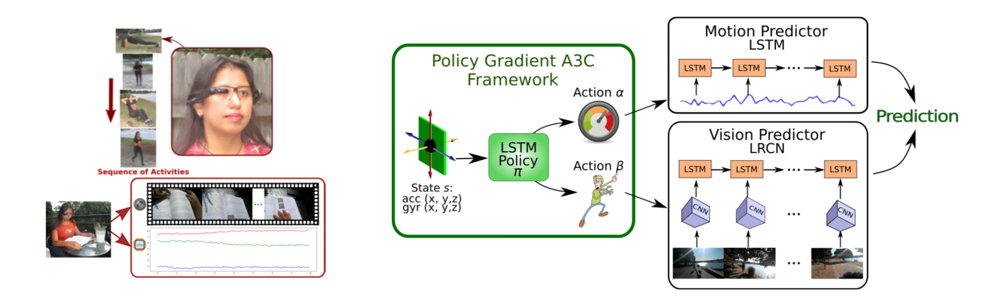
強化学習 (A3C) を用いて Image cropping を行う手法を提案. 従来の sliding winodow に基づく手法のように膨大な数の cropping 候補を評価する必要がないため, 先行研究よりも短時間で結果の計算が可能. また, 評価実験では精度についても先行研究よりも優位な結果を達成した.
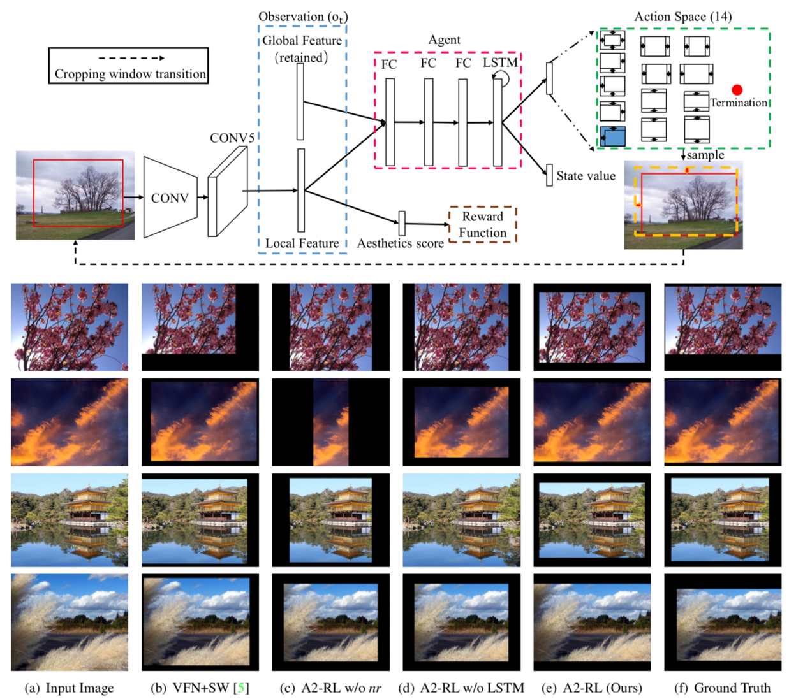
現在，ロボットの制御に不可欠な周辺環境を認識するシステムとしてCNNs(Convolution Neural Networks)が重要視されている．しかし，CNNsの利用はCV系の専門ではない人々にとってとても扱いづらいというギャップが存在した． そこで，CV分野とロボット工学とのギャップを埋めることを目標として，CNNsを利用したSemantic Segmantationを扱えるオープンソースのフレームワーク, Bonnetを提供した． PythonでTensorflowを利用し，データセットからピクセル単位のSemanticクラスを推測するトレーニングを行う． そして既存のC++アプリケーション，またはROS(Robot Operating System)が使用できるロボットで，訓練モデルから推測することができるC++インターフェースを用いて実際のロボットプラットフォームに展開する．本手法の評価はCityscapes，Synthia，Crop-Weedの3種類のデータセットでの正解率や実行時間を評価している．
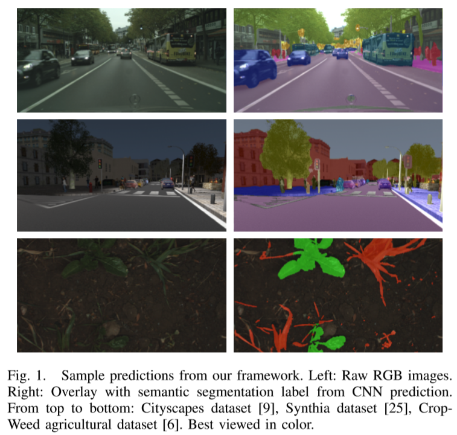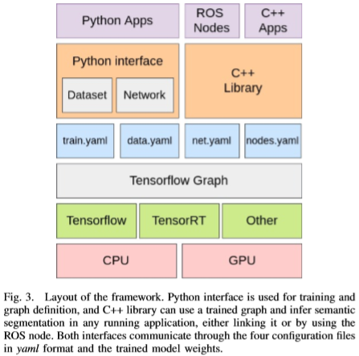
CVにおける新規性は少ないが，ロボット工学において最先端のセマンティックセグメンテーションなどを容易に扱うことを可能とした．これにより，ロボット工学だけでなく他分野でのCNNsの利用が容易となり，より新たな考えを生み出すことができるだけでなく，CVでの様々な手法が利用される可能性が高まると考えられる．
画像の構図の良し悪しを評価するComparative Photo Compositionデータセットを構築。10800枚の画像から24の構図の画像を作成し、クラウドソーシングによって2つの構図のどちらがいいかをアノテーションした。 また、入力画像をどのようにクロッピングすると良い構図になるかを提示するシステムを構築した。 その際、IOUを評価尺度にすると構図的に評価が低いものも高いスコアになるため、画像を評価するネットワークから得られるスコアを指標とした。
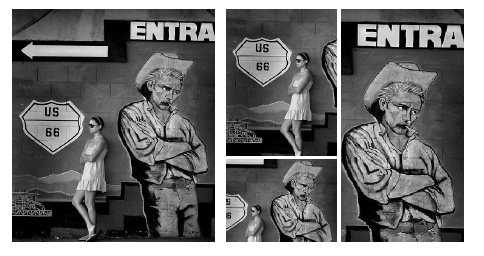
従来のデータセットでは画像に対してスコアがついていたのに対して、構図の異なる2枚の画像どちらがいいかを100万ペアアノテーションを行った。構図推薦システムは、ユーザースタディの結果従来手法よりも良いと感じる人が多いことを確認した。 また、計算速度も従来手法と比べはるかに向上した(75FPS+)．
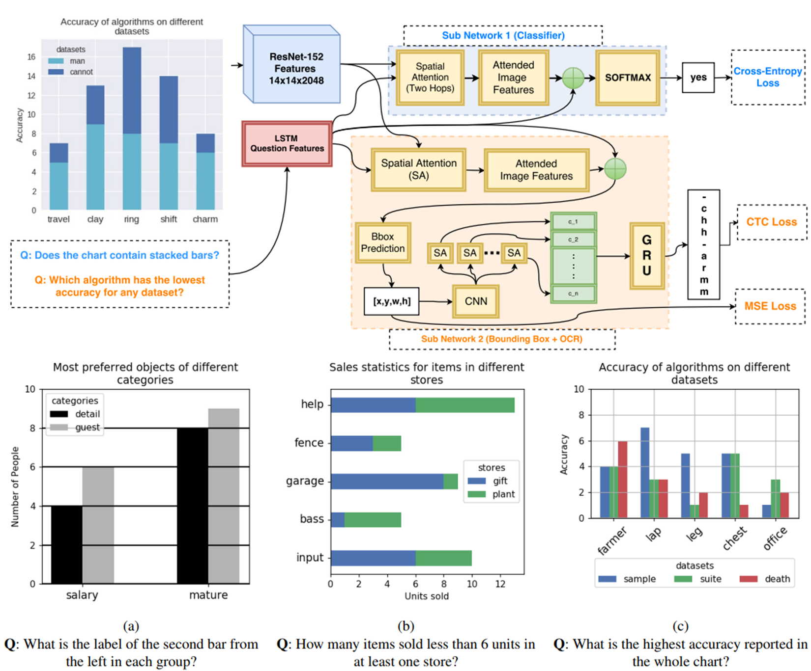
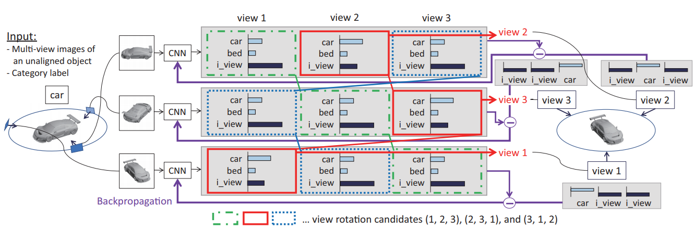
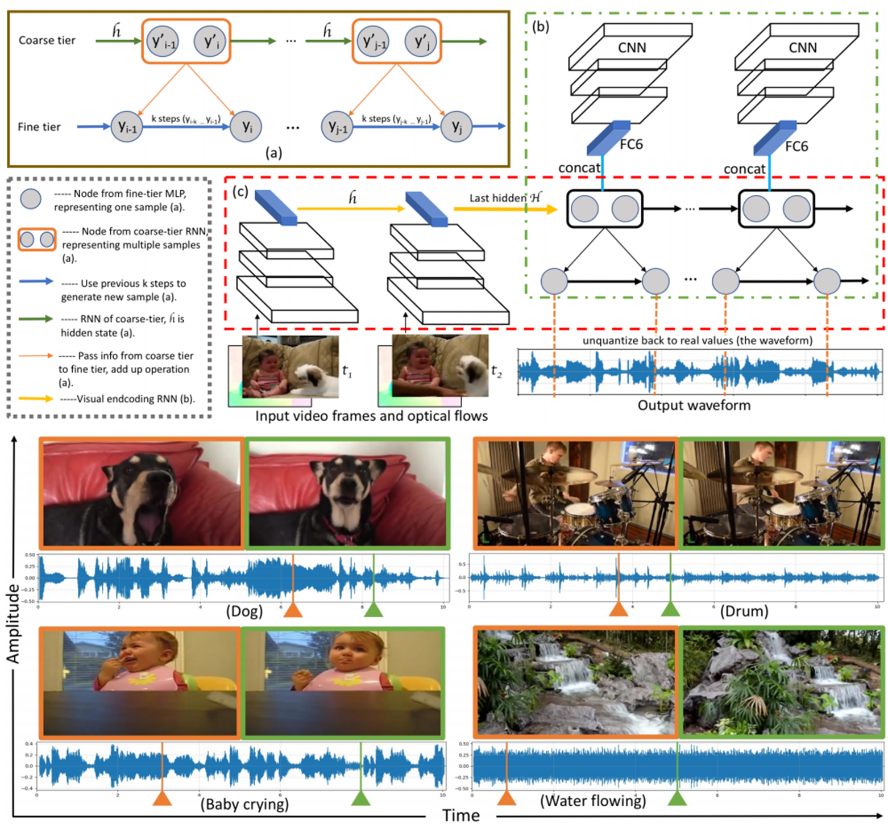
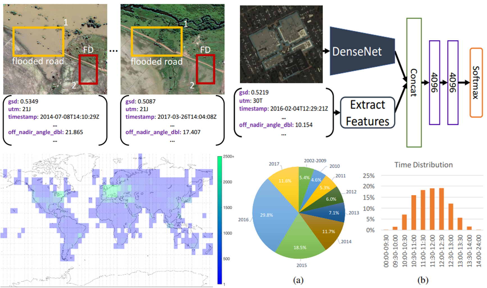
地理情報に関する分析の研究に用いられるデータセット
国のバリエーションが豊かなデータセットなので，国ごと上空シーン特徴の比較などにも用いられる
ソースドメインのラベル付きデータセットが複数ある場合のunsupervised domain adaptation(UDA)であるmultiple domain adaptation(MDA)によってターゲットドメインのクラシフィケーションを行う Deep Cocktail Network(DCTN)を提案。MDAではUDAで問題視されるドメインシフトに加えて、 ソースドメインのデータセット間で全てのカテゴリが共有されていないカテゴリシフトが存在する。 DCTNでは、k番目のソースドメインのデータセットとターゲットドメインのデータセットを入力として discriminatorによってperplexity scoreを算出することでどのソースドメインのデータセットの分布に近いかを算出し、 これを全てのソースドメインのデータセットに対して行い、perplexity scoreを重み付けるすることで最終的な識別結果を出力する。
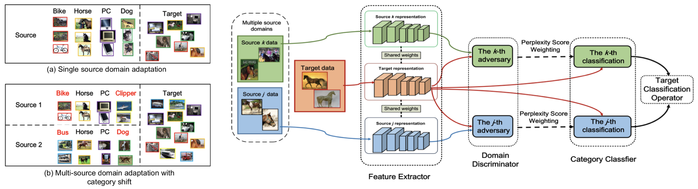
2つのドメインを結合する手法であるCanonical Correlation Analysis(CCA、正準相関分析)を教師なし学習に対して行うUnsupervised Correlation Analysis(UCA)を提案。 既存のCCAは教師あり学習かつ2つのドメインが何らかの対応関係を持っていることを前提としていたが、 UCAは教師なし学習かつ2つのドメインに対応関係がない場合を想定している。 教師あり学習とは異なり、トレーニング時に2つのドメインにおける相関係数を計算することができないため、入力する2つのドメインと、 ネットワークによって射影された潜在変数空間の3つのドメイン間の射影、逆射影がうまくいくように様々なロスをとることで学習を行う。 ロスに対するablationも行なっている。
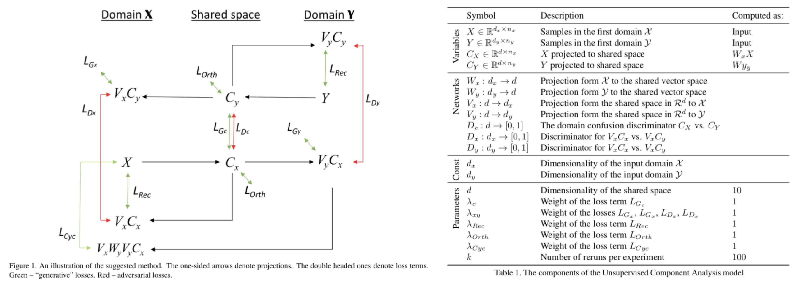
ラベルなしデータセットにおいてperson re-identification(re-id)を教師なしで行うために、ラベルありデータセットからdomain adaptationを行うTransferable Joint Attribute-Identity Deep Learning(TJ-AIDL)を提案。person re-idとは、街中の監視カメラのような異なる視点、 重複のない領域を撮影された映像内の同一人物を探すことである。 TJ-AIDLにはアイデンティティーを推定するIdentity branch、アトリビュートを推定するAttribute branch、 アトリビュートからアイデンティティーを推定するモジュールであるIdentity Inferred Attirbute(IIA)からなる。 domain adaptationの際には、Attribute branch、IIAの更新のみを行う。
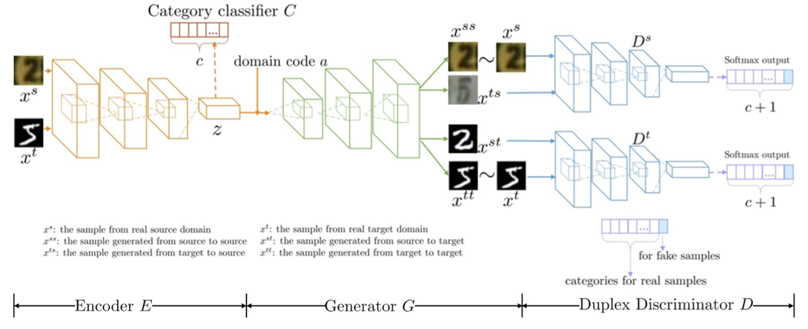
同一カテゴリのdomain間におけるadaptation, transferをラベル識別と2つのdiscriminatorを用いるネットワークDupGANを提案。target domainにはラベルがない状況である教師なし学習を対象としている。 DupGANはencoderでそれぞれのドメインの潜在変数をエンコードし、generatorでデコードを行い、 2つのdiscriminatorでそれぞれのドメインに対してfake/realとラベルの認識を行う。 結果はdomain transferされた数字画像のラベル認識・生成結果、物体認識の精度において比較を行う。

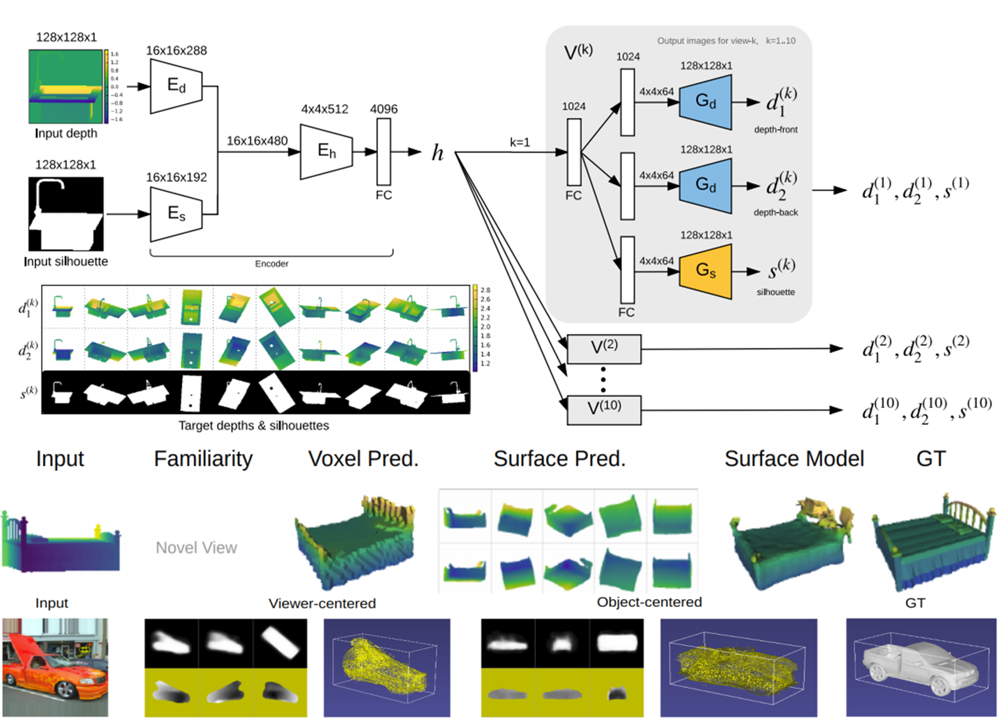
比較をしていない設計(Oct-tree based representationなど)もあるので，そういった構造に対して比較実験を行うのも面白い．
3次元あたりの徹底的比較を行って，何らかの結論を出すような研究がまだ少ないので，研究テーマを沢山作れるかも？
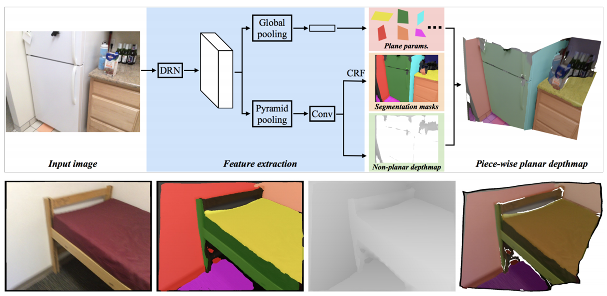
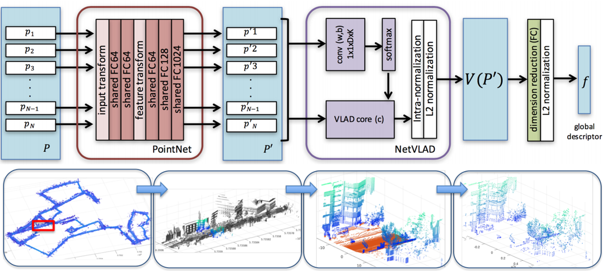
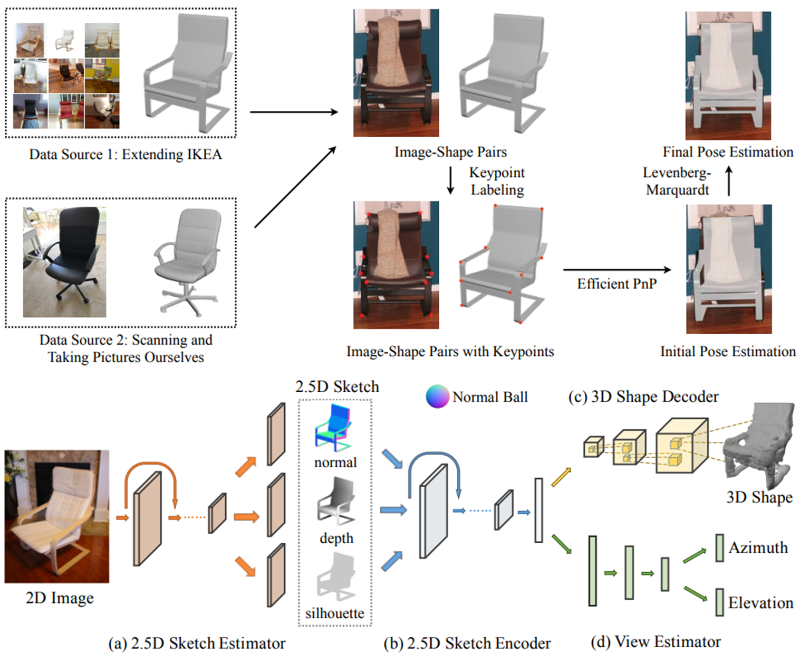
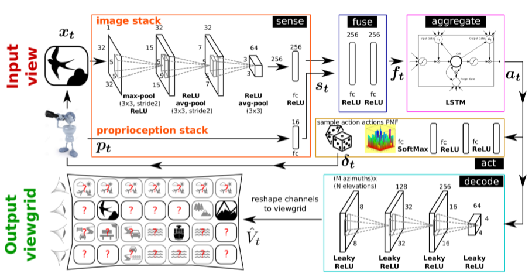
Interactive 環境でのVQAタスク(Embodied Question Answeringなど)は環境から“情報量が豊かな画像”を集めるのが重要の一環なので，提案フレームワークを用いられそう．
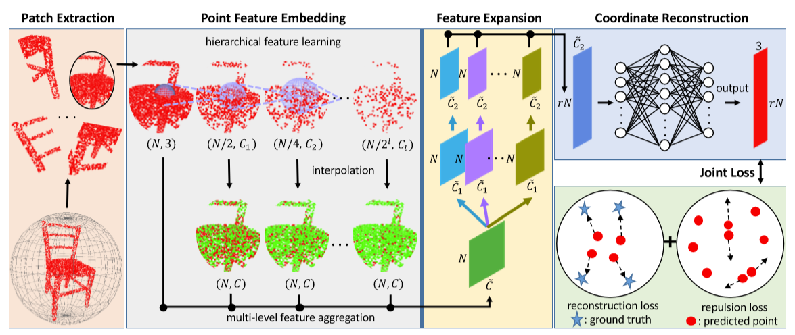
提案手法を更に発展し物体モデルの補完およびアップサンプリング同時にできることを期待される
Pointnet++を基本構造として使っていることがすごそう
深層学習を用いた教師あり学習による顕著性の検出方法は教師データに依存する．そこで，“汎化能力を改善しつつ教師データなしで顕著性マップを学習することは可能か？”という問いに対して，弱いものやのノイズのある教師なし顕著性検出手法によって生成される多数のノイズラベルを学習することによって教師なしで顕著性の検出を行った．
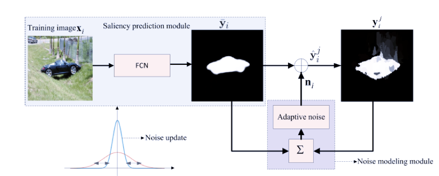
対応する航空写真とストリートビュー写真間の変換を行うcGANを提案．pix2pixによる変換に比べて，オブジェクトの正しいセマンティックスを捉え維持する変換が可能となっている．提案したcGANモデルは２つあり，X-Fork とX-Seq と呼んでいる．出力が変換画像とセグメンテーションマップであることが特徴．Inception Scoreの比較実験をすると，航空写真からストリートビュー方向の変換ではがX-Forkが優れ，逆方向の変換ではX-Seqの生成結果が優れていることがわかった．
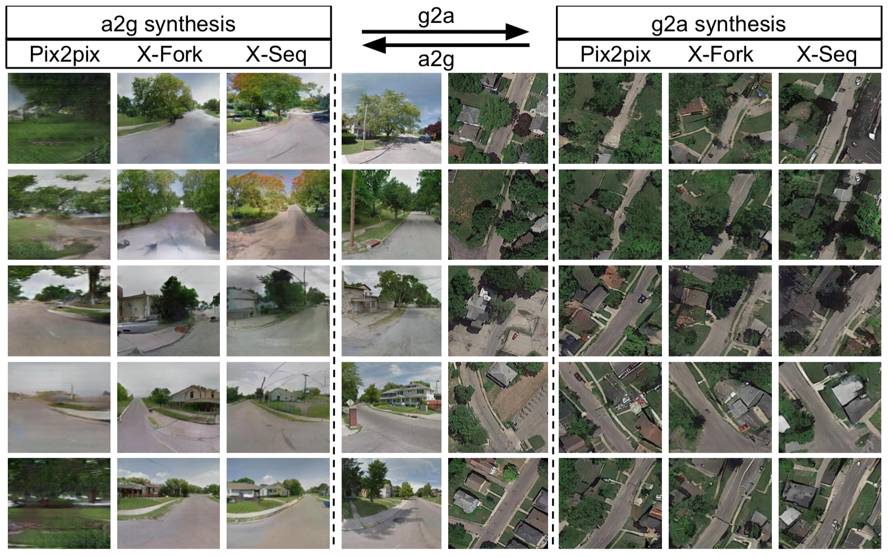
256x256の解像度で生成可能．gがストリートビューで，aが航空写真に当たる．
画像を構成する成分はshape(ジオメトリ、ポーズなど)とappearanceであるという考えのもと、VAEによってappearanceを推定し、 U-Netにshapeを学習させることで入力画像のappearanceとshapeの 片方を保ったままもう一方を変更することが可能なVariational U-Netを提案。 通常のVAEではshape、appearanceの分布を分離することが不可能なため、 VAEに画像とshapeを入力することでappearanceの特徴量を抽出し、U-Netによってshape情報を保つように学習を行う。 shapeとして体のポーズや線画が入力される。トレーニングデータには同一物体に対する様々なバリエーションの画像は必要としない。
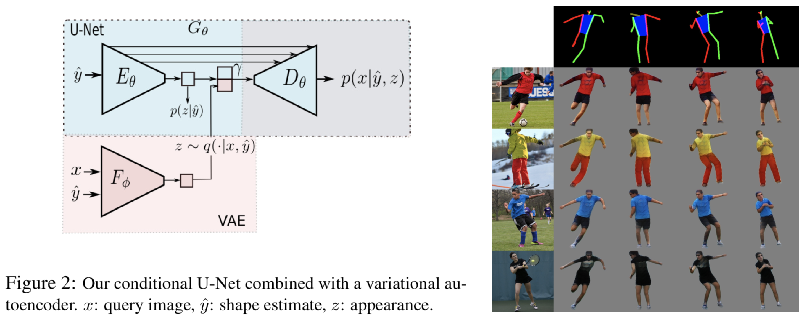
表情、体全体の動き、手のジェスチャといった様々なスケールの動きをマーカー無しでキャプチャするdeformation modelである”Frankenstein”と”Adam"を提案。 3Dキャプチャシステムに置いて、画像の解像度と3Dキャプチャシステムの視野はトレードオフであるため、 体の局所的な動きと全体的な動きを同時に捉えことは難しかった。提案手法では顔、両手、両足、 手の指における3Dキーポイントと3D Point Cloudを用いて表情などの 局所的モーションと体全体のモーションをキャプチャすることができるFrankensteinを構築。 また70人のトラッキングデータを用いてFrankensteinモデルを最適化することで、 髪と服を表現することが可能なAdamモデルを提案。結果は既存手法とのトラッキングの精度によって比較している。
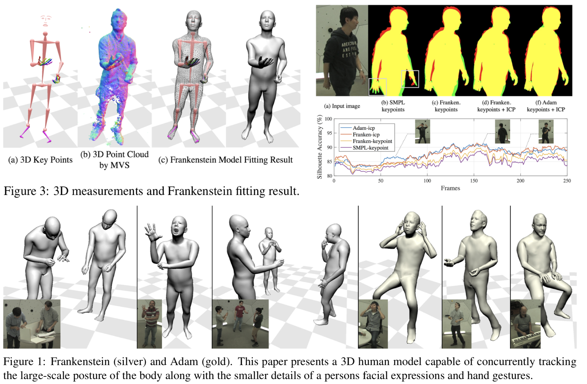
ラベル付き合成顔画像とin-the-wildなラベルなし実顔画像のどちらもトレーニングデータとして使用することで、実顔画像からシェイプ、リフレクタンス、イルミネーションを推定してリコンストラクションをend-to-endに行うSfSNetを提案。 実顔画像に十分なラベルがついているデータセットが存在しない、という問題を解決。Shape from Shading(SfS)のアイディアに基づき、 低周波成分を合成顔画像から、高周波成分を実顔画像から推定する。リコンストラクションされた画像のL1ロスを取ることで、 トレーニングにおける合成顔画像と実画像の橋渡しが行われる。リコンストラクションにはランバーシアンレンダリングモデルを使用する。
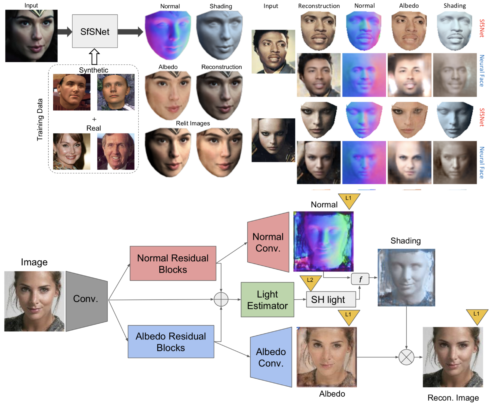
2つの動画から、手術や絵を描くなどの技能がどちらが上かを予測する手法の提案。入力動画をTemporal Segment Networks(リンク参照)によりいくつかのセグメントに分割し，技能評価に用いるフレームを3枚選択する。 技能評価の学習は、2つの動画のどちらが技能が上か、2つの動画の技能が同じであるとき同じであると判定できるかの2つの尺度をロスとして行う。 技能を表すスコアは、Two Stream CNN(リンク参照)によって空間と時間それぞれについてスコアを取得する。
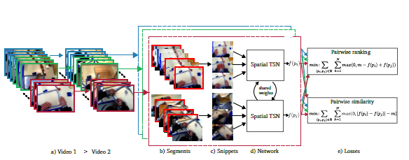
手術、ピザ生地をこねる、絵を描く、箸を使うの4つの技能を撮影したデータセットにより実験を行った。そのうち絵を描く、箸を使うは新たにデータセットを構築した。 全てのタスクで70%以上の精度を達成し、箸を使う以外のタスクではベースラインと比べ精度が向上した。
Person Re-identification (ReID)のパフォーマンスは大きく向上したが，複雑なシーンや照明の変化、視点や姿勢の変化といった問題の調査は未だなされていない．本稿ではこれらの問題に関する調査を行った．このためにMulti-Scene MultiTime person ReID dataset (MSMT17)を構築した．またドメインギャップがデータ間に存在するため，このドメインギャップを埋めるためのPerson Transfer Generative Adversarial Network (PTGAN)を提案した．実験ではPTGANによってドメインギャップを実質的に狭められることを示した．
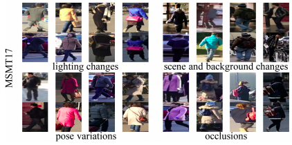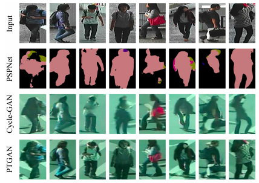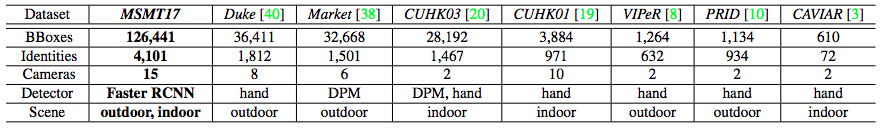
大規模スケッチベース画像検索において，既存の手法では学習中にカテゴリの存在しないスケッチクエリがある場合失敗するという問題がある．本稿ではそのような問題を解決するZero-shot Sketch-image Hashing(ZSIH)モデルを提案した．2つのバイナリエンコーダとデータ間の関係を強化する計3つのネットワークで構成される．重要な点として，Zero-shot検索での意味的な表現を再構成する際に生成的ハッシングスキームを定式化する点である．Zero-shotハッシュ処理を行う初のモデルであり，関連する研究と比較しても著しく精度が向上した．
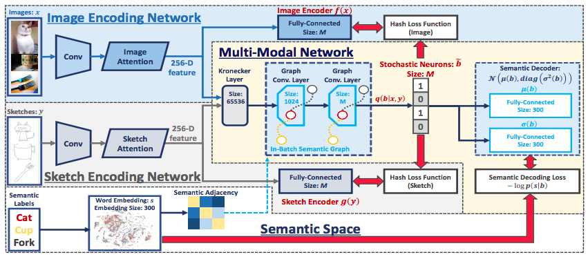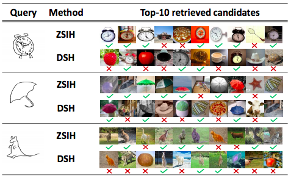
3Dスキャンは人間をキャプチャするために設計されており，自然環境での使用や野生動物のスキャンおよびモデリングには不向きという問題がある．この問題を解決する方法として，画像から3Dの形状を取得する方法を提案した．SMALモデルを画像内の動物にフィット，形状が一致するようにモデルの形状を変形(SMALR)，さらに複数の画像においても整合性がとれるよう姿勢を変形させ、詳細な形状を復元する．本手法は，従来の手法に比べ大幅に3D形状を詳細に抽出することを可能にするだけでなく，正確なテクスチャマップを抽出し，絶滅した動物といった新しい種についてもモデル化できることを可能にした．
 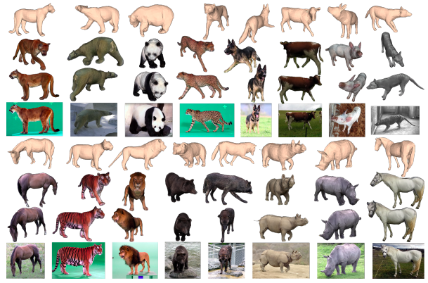
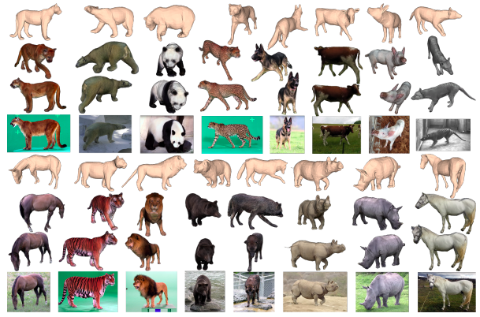
俯瞰画像から物体検出するためのデータセットを提案．従来のデータセットのものよりも小さい物体が多いデータセットである．各画像は4000×4000ピクセルであり，さまざまな大きさ，向き，形状を示す物体を含む．データセットは15カテゴリに分類されており，188282のインスタンスを含み，それぞれは任意の四角形でラベリングされている．人工衛星での物体検出の基礎構築のために，DOTA上の最先端の物体検出アルゴリズムを評価した．

俯瞰画像データセット内のインスタンスは小さいものの割合が高く，細かいものも検出可能人工衛星による物体検出に応用が利く可能性を示唆．
フラッシュを当てた状態の写真とそうでない写真の2種類を利用して，画像を光源の違いに基づく構成画像へと自動的に分離するアルゴリズムの提案．2つの写真の色情報の違いに基づき，光源に対応するスペクトルや陰影との関係を見出す．従来手法と比較して，光の色合いや陰影を忠実に反映した低ノイズでの分離が可能であることを示した(従来手法(Hsu et.al.)でのSNR:10.13dB 提案手法でのSNR 20.43dB)．また，提案手法が画像のライティングの編集，カラー測光ステレオに有用であることを示した．
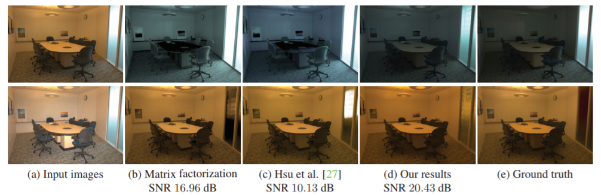
この論文は,各々の入力インスタンスに対して,複数の見えないクラスラベルを予測できるmulti-label learning及びmulti-label zero-shot learning(ML-ZSL)の新しい深層学習の提案した研究． 提案手法は複数のラベル間で人間が関心を持つsemantic knowledgeをグラフの中に組み込むことにより, 情報伝播メカニズムを学習し見えているクラスと見えないクラスの間の相互依存関係をモデル化することに適用できる． 本手法はstate-of-the-artと比較して,同等または改善されたパフォーマンスとして達成をすることができる．
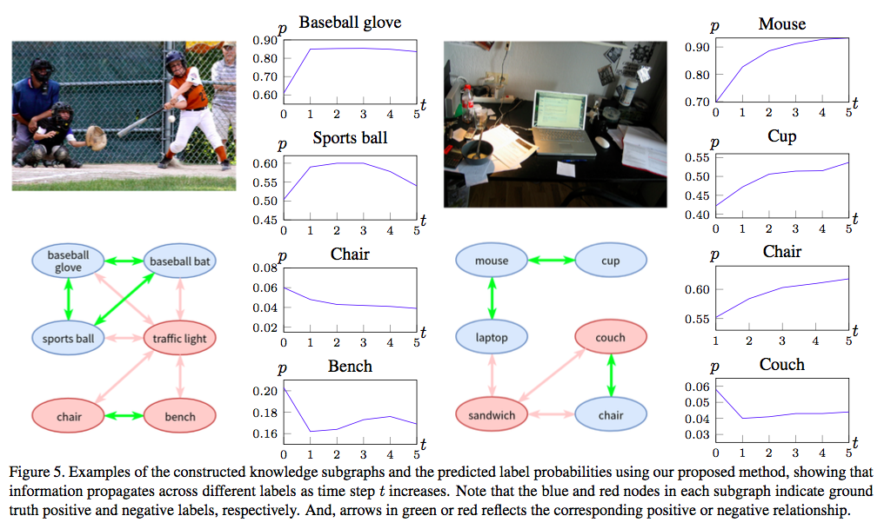
・見た目だけでなく,経験を通して学んだ知識を使って物体を認識・WordNetから観察された知識グラフをend-to-endの学習フレームワークに組み込み,意味空間に電番されるラベル表現と情報を学習 ・NUS-81およびMS-COCOの結果をWSABIE,WARP,Fast0Tag,Logisticsと比べたところ精度について一番高い結果を残した． ・ML-ZSLについてもFast0Tagと比べて高い精度を残している．
generatorとdiscriminatorを一つのモデルで表現するIntrospective Neural Network(INN)に対してwasserstein distanceを導入することで、INNと同等の生成能力・識別能力を保ちつつclassifierにおけるCNNの数を20分の1にしたWasserstein INN(WINN)を提案。 生成された画像の比較はDCGAN、INN for generative(INNg)、INNgのclassifierにおけるCNNを一つにしたINNg-singleと行った。 またadversarial exampleに対して頑健な識別精度を達成した。
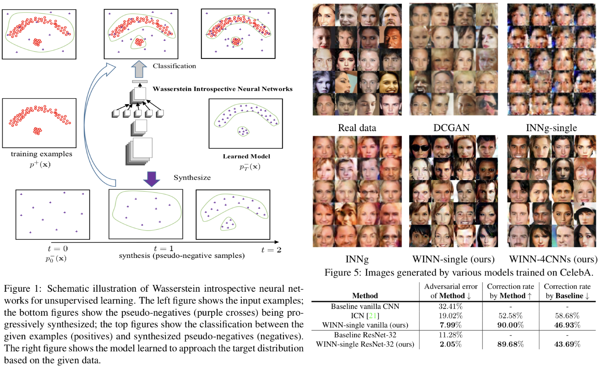
3Dスキャンデータを使用せずにin-the-wildな顔画像のみを用いてencoder-decoderによって3D Morphable Model(3DMM)を生成する手法を提案。生成された3DMMを nolinear 3DMMと呼んでいる。 従来のlinear 3DMMは学習のために3Dスキャンデータが必要であり、かつPCAによって次元削減を行うため表現力に乏しいという問題点があった。 提案手法ではencoderによってプロジェクション、シェイプ、テクスチャのパラメタを取得し、decoderによってシェイプ、テクスチャを推定する。 また初期の学習では既存手法によって得られる3DMMのプロジェクションパラメタ、 シェイプパラメタとUV空間から得られるテクスチャを擬似的なGTとすることで弱教師学習を行う。

in-the-wildな入力顔画像から得られるUVマップの補完をU-Netで行う手法を提案。入力画像に対して3D Morphalbe Modelを適用し不完全なUVマップを取得し、U-Netで補完を行うように学習を行う。 discriminatorにはUVマップ全体と顔領域の判定をさせる。 またUVマップの個人性が失われないように、アイデンティティーに関するロスを取る。 1892人のUVマップをもつWildUVデータセットの構築も行った。
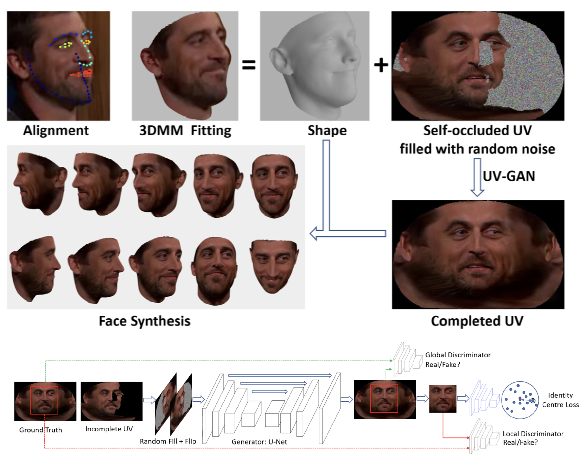
単RGB画像で，リアルタイムに材質反射特性を推定する手法を提案し，デモシステムを作った．
構造は，主に複数のU-Netからなり，それぞれ前景セグメンテーション，スペキュラー推定，鏡面反射推定を行う．ロス関数も定義．
さらに，形状情報も使えるのなら，低・高周波光源情報の推定も可能．連続撮影時の光源情報の連続性を考慮した時系列統合の枠組みも提案．
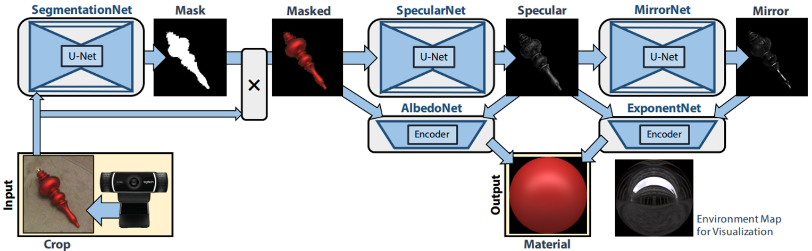
低解像度＋高解像ガイダンスマップを与えると，高解像度画像を効率的（省計算時間，省メモリ）に出力できるGuided Filtering Layerなるものを提案．
GuidedFilterは， 空間的に変化する線形変換行列のグループとして表現でき， CNNに統合可能．つまり，end-to-endで最適化可能な 深層ガイデッドフィルタネットワークを構成できる．
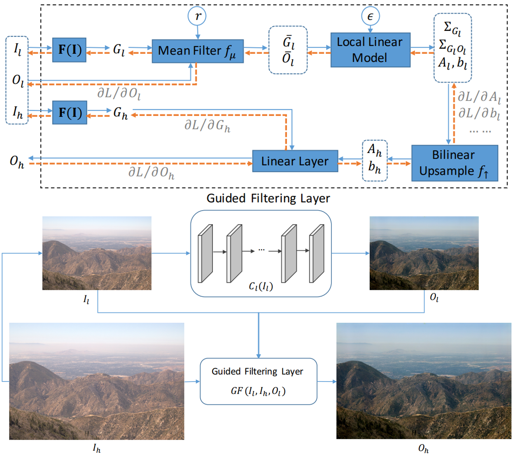
CNNにより学習したタスクの出力結果に対して、人間がヒント(例：画像中に空は見えない)を与えていくことで精度向上を図る研究。CNNモデルをheadとtailの2つのパートに分割し、headから得られた特徴マップをヒントによって修正していくことで精度の向上を実現する。 その際、ネットワークの重みを更新するのではなく修正に用いるパラメータを言語情報から推測することで行う。 ネットワークの予測結果とground truthの差分を取り、正しく予測できていない物体の種類や位置を推定することで学習に用いる文章は自動で生成する。

セマンティックセグメンテーションにより実験を実施したところ、クラス間違い、物体の一部が欠けている、物体の一部のみが見えるといったケースにおいて精度が向上することを確認した。ヒントを繰り返し与えていくことはノイズとなってしまうためあまり精度が向上しなかった。 従来のディープラーニングは一度学習をしてしまうと得られる出力が固定されてしまうのに対して、人間が介入することで結果を変えるという新しい応用方法を提案している。
顔検出におけるターゲットドメインからソースドメインへのadaptationを、negative transferとcatastrophic forgettingの両方を引き起こさずに行う手法を提案。 negative transferとはadaptation後のソースドメインにおける検出精度がadaptation前のソースドメインにおける検出精度に劣ることを指し、 catastorophic forgettingとはadaption後におけるソースドメインの検出精度が著しく下がることを指す。 提案手法では、ソースドメインとターゲットドメインの違いを、ロス関数とDNNの重みの差分で表現し、 この差分がなくなるように学習を行う手法を提案。 またターゲットドメインにface or notのラベルがないという状況も考えて教師あり学習だけでなく教師なし学習、 半教師あり学習の結果についても議論を行った。

入力顔画像からバンプマップや視点を推定することで、入力画像からは見えていない側面や、強いオクルージョンがある顔画像からも精度の高い三次元形状を取得する手法を提案。 入力画像から帯域的な情報として三次元の大まかな形と、 局所的な情報としてしわなどのディティールを表現するバンプマップを別々のDNNモデルを使って取得する。 続いてオクルージョンがある場合には、バンプマップが不自然な起伏を持つため深層学習による修正を行う。 最後に顔の対称性を利用して、入力画像からは見えていない側面などをルールベースで復元する。
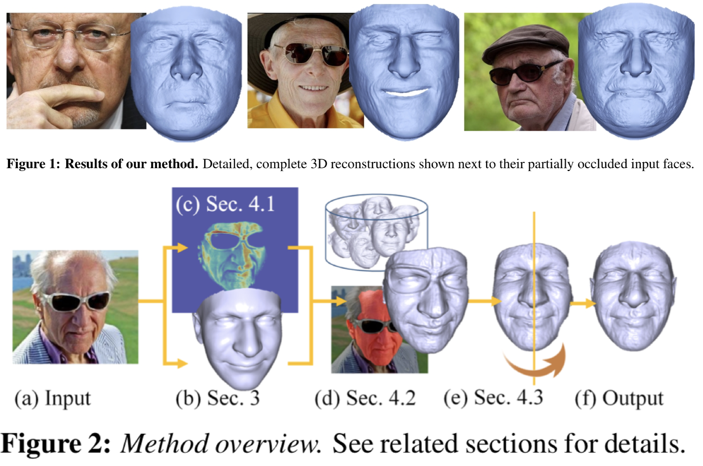
実世界の3D顔モデルを使用せず合成された3DモデルのみでCNNをトレーニングすることで、実世界の顔画像から顔向き、形、表情、リフレクタンス、イルミネーションの3D復元を行う手法を提案。 CNNをトレーニング際の問題点として、実世界の3D顔モデルに対するアノテーションが足りないという問題があった。 これに対して、実世界の顔画像から推定されるパラメタと合成顔から推定されるパラメタに対してself-supervised bootstrappingを行うことで、 トレーニングに使用する合成顔3Dモデルのパラメタの分布を実世界のパラメタの分布に近づくようにトレーニングデータを逐次的に更新を行うことで、 CNNの学習を行った。
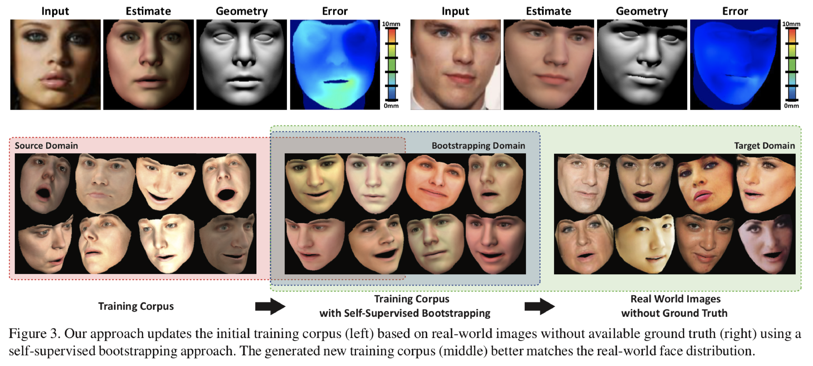
様々な照明環境、表情をした横向き顔画像を入力として、正面顔画像を生成することで高い個人認証率を達成するGANベースのPose Invariant Model(PIM)というネットワークを提案。 学習で使用できるトレーニングデータが少ないため、効率的かつ過学習を防ぐために以下のようにPIMを構築。
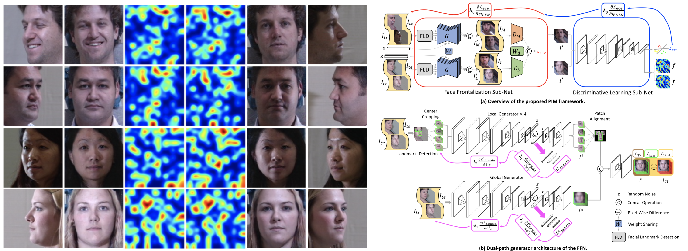
DNNによって得られた特徴量を超球面上に配置するように正規化を行うロス関数であるRing lossを提案。特に教師あり識別問題においてはDNNによる特徴量を正規化することでより精度の高いモデルを構築することができる、 というアイディアもとにRing lossを提案。 SoftMaxといった基本的なロス関数と組み合わせることでより高い精度を達成。 実験には様々な識別タスクを行うことができる顔データセットを用いることで、精度の向上を確認した。
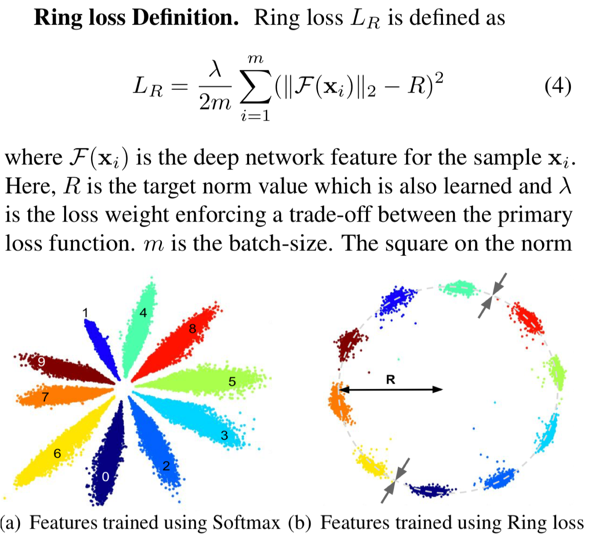
3Dモデルから実画像へのドメイン変換をGANによって行うことで、単一顔画像から照明パラメタを推定するLabel Denoising Adversarial Network(LDAN)を提案。 人の顔画像に対して照明パラメタ(論文で使用されているのは37次元の球面調和関数)がアノテーションされたデータセットがないため、 3Dモデルを使用してFeature Netと呼ばれるネットワークで中間特徴量を取得し、 中間特徴量からLightning Netを用いて照明パラメタの推定を学習。 続いて人の顔画像に対して、既存手法を用いてノイズが乗った照明パラメタを取得し、 人の顔画像に対してもFeature Netを新しく学習し、 3D モデルから得られた中間特徴量と共にGANに入力することでドメインの変換を行うことでノイズが除去された照明パラメタを取得。

顔向きをコンディションとして与え木構造で表された顔のランドマークを学習させることで、顔のランドマーク推定を行うPose Conditioned Dendritic CNN(PCD-CNN)を提案。 顔のコンディションはPoseNetにより出力された値を使用する。 顔のランドマークを木構造として与えることで、ランドマークの位置関係を利用してCNNを学習させた。 また提案ネットワークはPCD-CNNと通常のCNNの二段階になっており、 後段のCNNをファインチューニングすることでランドマークのポイント数が違うデータセットや顔向き推定などの他のタスクにも適用可能。
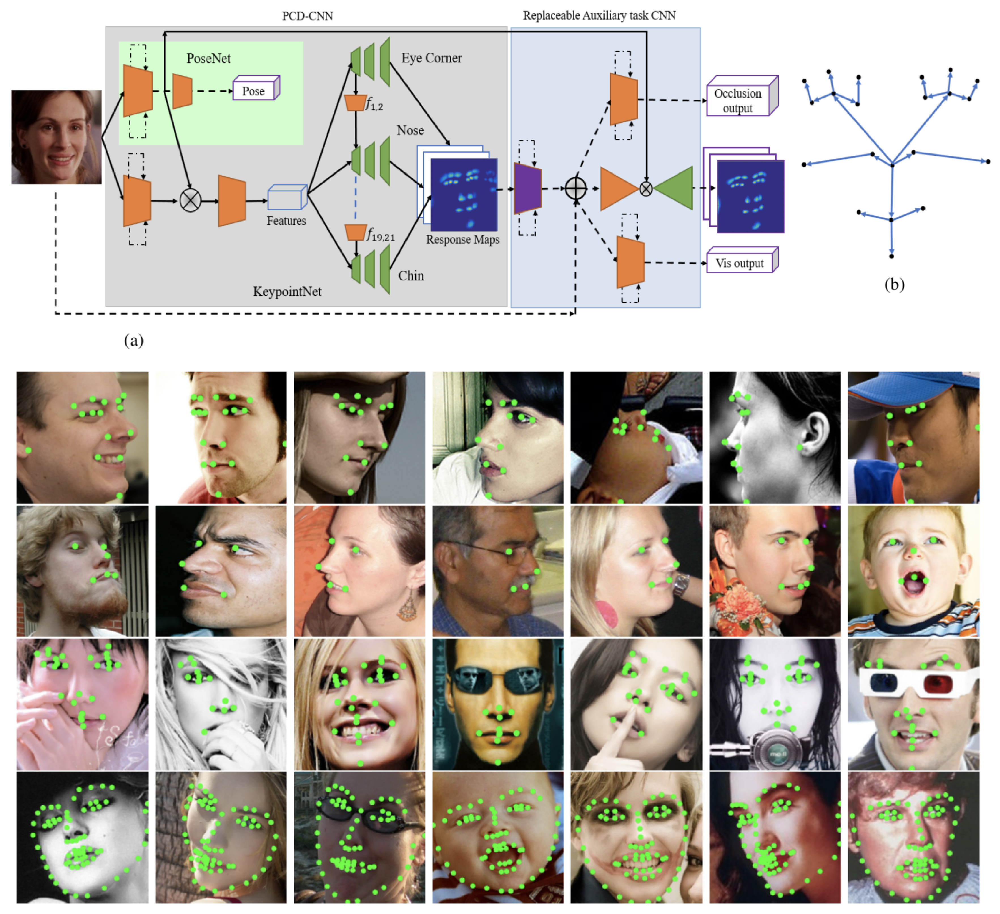
ノイズを考慮しつつ、数千もの画像セット全てにおいて一致する(信頼できる)特徴を見出すことで、画像間の対応を図るマッチング手法。マッチングはセマンティック性を考慮することができる（目と目、耳先と耳先など）これにより、一貫性がある画像セット内で信頼できる特徴の関係を確立。何千もの画像を処理する場合にスケーラブルな手法。つまりは数に頑健。
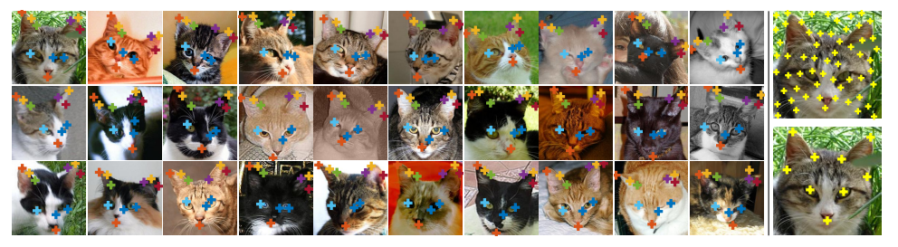
従来手法では、全てのペアで対応する関係を最適化していたが、本手法では、特徴の選択とラベリングに着目し、信頼度の高い特徴のみを用いた疎なセットのみで識別、マッチングする。
Intrinsic Image Decompositionのために，時間経過とともに照明が変化するビデオを使ったCNNの学習方法を提案．正解の Intrinsic Imageが不要な点が強みである．学習が完了したモデルは単一画像に対して適用できるよう汎化しており，いくつかのベンチマークに対して良い結果となった．
Contribution：
・データセット（BigTime）の公開．室内，室外両方での照明変化のあるビデオと画像シーケンスのデータセット．
・このGround Truthを含まないデータを使った手法の提案．
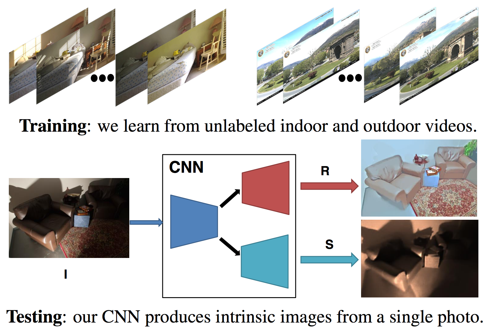
学習時：ラベル無しで，視点が固定され照明が変化するビデオを学習に利用する．
テスト時：単一画像からintrinsic image decompositionを行う．
最適化ベースのIntrinsic Decomposition手法と，機械学習手法の間に位置する手法と言える．
・U-netに似た構造のCNN．
・Lossの工夫：画像ペア全てを考慮するall-pairs weighted least squares lossとシーケンス全体のピクセル全てを考慮するdense, spatio-temporal smoothness loss．最適化ベースのlossをフィードフォワードネットワークのlossとして利用する．
Intrinsic image decompositionとは，入力された1枚の画像をreflectance画像とshading画像の積に分解する問題のこと．
intrinsic imagesのGround Truthを大規模に揃えることは困難．
階層的入れ子構造の識別器を使用し，テキストから高解像画像を生成するGANを提案．end-to-endの学習で高解像画像の統計量を直接モデルリングすることが可能な手法．これは，step-by-stepで高解像画像を生成するStackGANとは異なる点である．複数のスケールの中間層に対して階層的入れ子構造の識別器を使用することで中間サイズレベルでの表現に制約を加え，生成器が真の学習データの分布を獲得しやすくする．
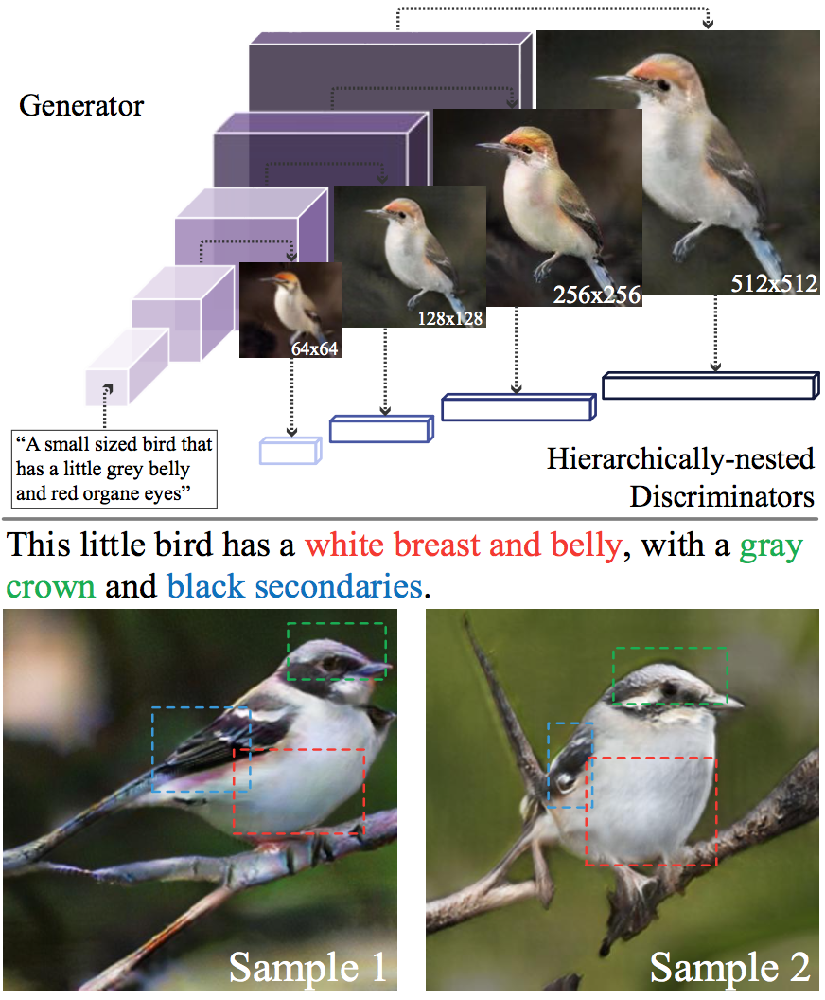
新しい構造と，lossの工夫でtext-to-imageのタスクで高解像画像の生成を可能とした．
・hierarchical-nested Discriminatorを使用．
・lossには，pair lossとlocal adversarial lossを使用する．pair lossでは入力テキストと生成画像が一致しているかを評価．local adversarial lossでは生成画像の細部の質を評価する．
プライバシー保護のために画像に含まれる個人的な情報を自動的に改変する手法の提案．プライバシーを守りつつ画像の有用性を保つためのトレードオフが問題となる．有用性を保つためには改変する領域サイズが最小限である必要があり，これをセグメンテーションの問題として取り組む．
Contribution:
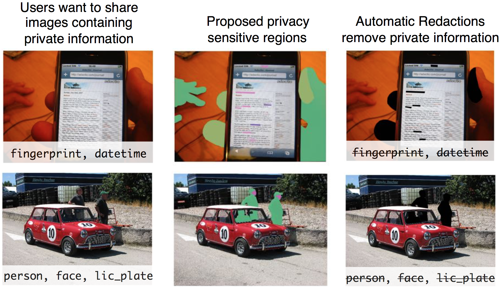
指紋，日時，人，顔，ナンバープレートを黒く塗りつぶせている．
他にも，住所やメールアドレスのようなテキスト情報や顔や車椅子などの視覚情報，あるいはテキストと視覚情報を合わせたものなど，多様な個人情報に対応するデータセットとモデルを提案．
どのような対象(Textual, Visual, Multimodal)を扱うかで使用するモデルは異なる．
Textualな対象では，Sequence Labelingを使用する．
VisualとMultimodalな対象では，Fully convolutional instance-aware semantic segmentationを使用する．
Nearest Neighborなどのベースライン手法と比較を行なっている．
画像全体を黒く塗ればプライバシーは保護されるが，画像の価値がなくなるので，トレードオフが存在する．
データセットを作った貢献がメイン．プライバシー保護のためのアノテーションを行ったことで，それなりの正解率で個人情報の改変を行えるようになった．
ノンパラメトリックのInapinting手法を提案．
視覚的な構造とスタイルをdeep embeddingすることで，パッチの検索と選択の際に視覚的なスタイルを考慮することが可能で，さらに，パッチのコンテンツを補完画像のスタイルに合わせるためのneural stylizationが可能となる．この手法は，patch-basedの手法とgenerativeベースの手法の架け橋的な補完手法である．
技術的貢献：
・style-aware optimization
・adaptive stylization
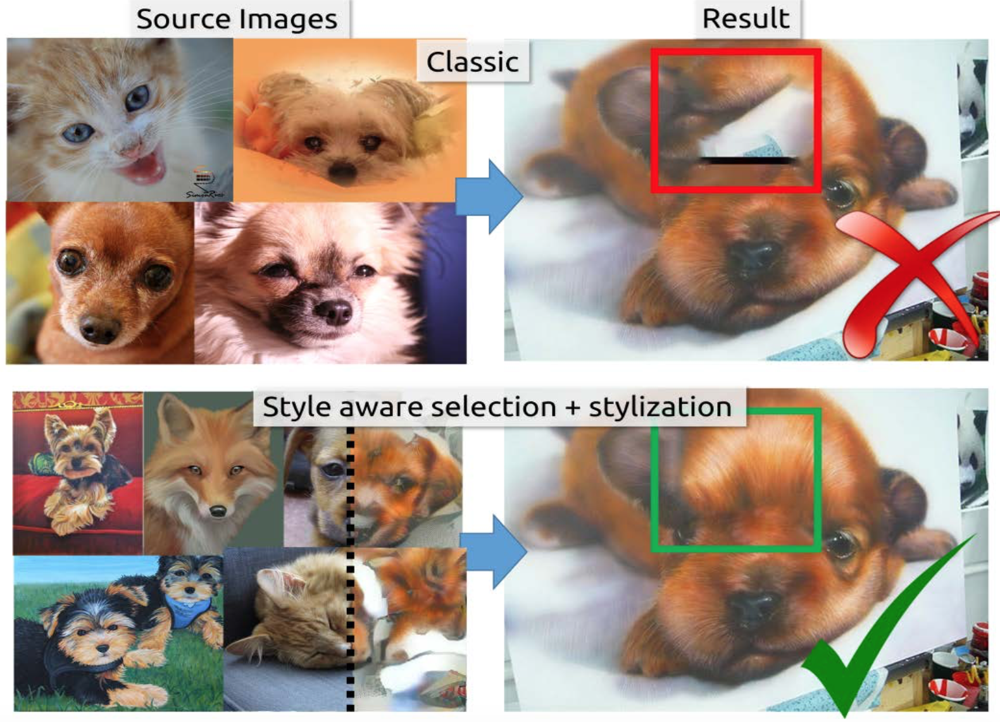
以下の手順で画像補完を行う．
１．スタイルを考慮して穴に埋める候補を検索する
２．補完画像と構造とスタイルが合うパッチをMRFで複数集め，選択する
３．選択されたパッチを補完画像のスタイルに変換する
motion deblurringのためのGAN(DeblurGAN)を提案．structural similarity measureとアピアランスでSoTA．ブラーを除去した画像で物体検出の精度を出すことで，ブラー除去モデルの質を評価するという方法を提案．提案手法は，質だけでなく実行速度も優れており，従来手法の５倍の速さがある．モーションブラーのかかった画像を合成するための方法を紹介し，そのデータセットもコード，モデルとともに公開．
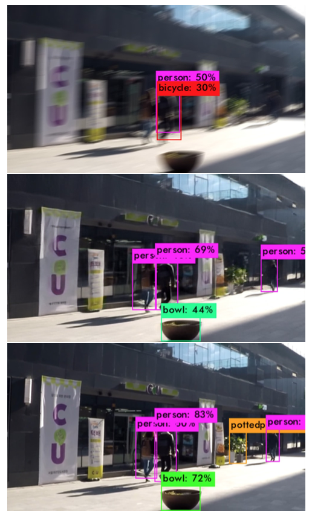
ブレを除去してからYOLOで検出すると精度が良くなることを示している．これをDeblurモデルの指標にすることができると主張．
ボケ(blur)が望ましいのか否かと，そのボケが写真のクオリティーにどのような影響を与えているのかを，自動的に理解するアルゴリズムは少ない．この論文では，blur mapの推定とこのボケの望ましさの分類を同時に行うフレームワークを提案する．
貢献：
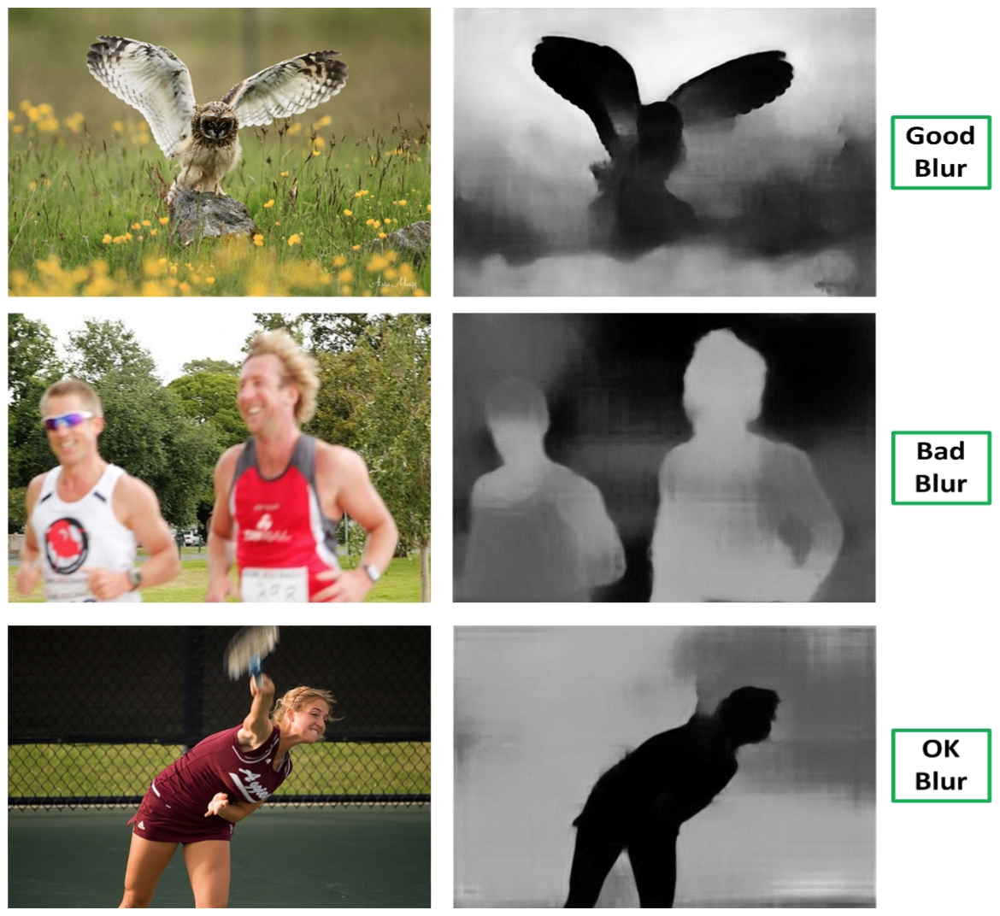
ボケ具合をピクセルごとに３段階で示し，ボケの望ましさも出力する．
ABC-FuseNetでは，低レベルのボケの推定と高レベルの画像内で重要コンテンツの理解の二つを行う．
A: attention map，FCNである．
B: blur map，Dilated Convolutionとpyramid pooling, Boundary Refinement用の層を使ってblurの推定を行う．
C: content feature map，ResNet-50を使ってコンテンツの特徴を抽出．
ボケの推定はBによって行い，ボケの望ましさの分類はA, B, Cから得られた特徴を用いて行う．ネットワーク全体をEnd-to-endで学習することができる．
指定された形状のタグに強く関係する領域を検出する手法の提案．明示的に領域ごとのラベリングはなく，さらにあらかじめセグメンテーションされていない状況で，形状のタグを与えた時に領域を発見するという問題設定．難しい点は，オブジェクトのタグという弱い教師情報からポイントごとのラベルを細かく出力する必要があること．このために分類とセグメンテーションを同時に行うネットワークを使う．形状ごとのタグからポイントごとの予測を得るためのネットワーク構造（WU-net）を提案したことがメインの貢献．
学習が完了すれば，タグが不明な形状に対しても手法を適用することができる．また，元々Weakly-supervised用に提案しているが，strongly-supervised用としても利用できる手法となった．
U-net風のWU-netを提案．U-netから修正した点は，
・浅いU型の構造を3回くりかし，skip-connectionで密に繋がっている．深いU型1回の場合との結果の違いを図示している.
・セグメンテーションの用の隠れ層にタグ分類用の層を追加．(元々のは，strongly-supervised セグメンテーション用に設計されているので．)
ニューラルネットワークに組み込むことができる3Dメッシュのレンダラーである Neural Renderer を提案。レンダリングの『逆伝播』と呼ばれる処理をニューラルネットワークに適した形に定義し直した．そしてこのレンダラーを
・一枚の画像からの3Dメッシュの再構成（ボクセルベースの再構成との比較あり）
・画像から3Dへのスタイル転移と3D版ディープドリーム
に応用できることを示した．
2D-to-3Dスタイルトランスファーの例
従来のままでレンダリングの操作が処理の途中にあると逆伝播が行えない状態であるので，レンダリングのための勾配を定義することでニューラルネットワークの中にレンダリング操作を加えても学習を行えるようにした．
商品などのデモンストレーションの映像の特徴を通してその商品などのアフォーダンスを推論する研究．映像から埋め込みベクトルを抜き出すことで，ヒートマップと行動のラベルとして特定のもののアフォーダンスを予測するDemo2Vecモデルを提案．また，YouTubeの製品レビュー動画を集め，ラベリングすることでOnline Product Review detaset for Affordande(OPRA)を構築．
アフォーダンスのヒートマップと行動のラベルの予測に関し，RNNの基準よりよいパフォーマンスを達成
YouTubeで公開されている動画では，Demo2Vecを用いてある物体のデモ動画からSawyer robotのEnd Effectorを予測したヒートマップの地点に移動するように制御させている様子を見ることができる．
葉に隠れていても３次元の枝構造を多視点画像から推測できるようにした。多視点からの植物画像を入力として枝構造の２次元確率マップをdropoutを取り入れたPix2Pixで推測して、それらから３次元の確率構造を作成した。最後にpartical floｗシュミレーションによって明確な３次元の枝構造を生成した。
葉や他の枝によって隠れてしまっていても枝構造を生成できるようにした。ベイジアンPix2Pixを利用することで植物の３次元構造をより正確に表せるようにした。
synthetic-to-realな変換を行う際に、1)モデルがsyntheticにoverfitするstyleの側面と、2)syntheticとrealの分布の違いの側面から発生する2つの問題があることに著者らは着目している。解決するために、前者はtarget guided distillation、後者はspatial-aware adaptationという手法を提案し、それを組み合わせた Reality Oriented ADaptation Network(ROAD-Net)を考案。GTAV/SYNTHIA - Cityscapesの適合タスクで評価し、sotaのsemantic segmentationモデルの汎化性能を向上したことを確認。
霧がかかった画像(hazy input)から更に３つの入力，White balanced input，Contrast enhanced input，Gamma corrected inputを計算して導出し，これらの異なる入力間の外観差に基づきピクセル単位のConfidence Mapを計算する．これらを学習することで鮮明な画像を生成するMulti-scale Gated Fusion Network(GFN)を開発した．
従来手法と比較し，実装や再現が容易であり，また出力結果もPSNR，SSIMともに従来手法より高い評価となっている．
教師あり深層学習による手法は単眼カメラ画像における深さ推定に対して良い結果を出している．しかし．grand truthを得るためにはノイズに影響され，コストもかかる．合成データセットを用いた場合の深度推定では固有のドメインにしか対応していなく，自然なシーンに対して対応するのが難しいと言われる．この問題に対応するため，Adversalな学習と対応したターゲットの明確な一貫性をかすこと事によりAdaDepthを提案．
End-to-Endで3次元空間における特徴点の抽出とマッチングを行う手法を提案した。2つの距離画像を入力とし、VGG-16 を利用したFaster R-CNNを基本構造としている。 ２つの距離画像からそれぞれVGG−16を利用して特徴マップを作成し、RPNにより領域候補を推定して、ROIプーリング層、全結合層を経て特徴量ベクトルを作り出す。最終的にcontrastive lossを利用して得られた特徴量間の対応関係を求めた。
初めてEnd-to-Endで3次元マッチングを行えるようにした。ノイズ環境下においてキーポイントマッチングで従来手法のHarris3D +FPFHなどよりも10％以上高い精度を出した。
アテンションドリブン，複数ステージでのRefineによって，テキストから詳細な画像を生成するGANを提案．CUBデータセットとCOCOデータセットでinception scoreがstate of the artを超えた．生成画像の特定の位置をワードレベルで条件付けしていることを示した．
貢献：
・Attentional Generative Adversarial NetworkとDeep Attentional Multimodal Similarity Model(DAMSM)の提案．
・実験でstate-of-the-art GAN modelsを超えたことを示す．
・ワードレベルで自動的に生成画像の一部をアテンションするのは初である．
・Attentional Generative Networkはセンテンスの特徴から始めて段階的に画像を高精細にしていくネットワークで，途中にアテンションレイヤーからのワード特徴を入力して条件付けする．
・各解像度に対してそれぞれDiscriminatorがある．
・最終的な解像度になったあと，Image Encoderにて局所的な画像特徴量とし，ワード特徴量とDAMSMにて比較することで，生成画像の細部がどれくらい単語に忠実であるか評価する．
SBADA-GANの提案．（Symmetric Bi-Directional ADAptive Generative Adversarial Network）
unsupervised cross domain classificationにフォーカス.
ラベルが与えられるSourceのサンプルを利用して，最終的にはTargetの分類問題を解く．SourceのサンプルをTargetのドメインに(Image-to-Imageの)マッピングをし，同時に逆方向も行う．分類器の学習に利用するのは，Sourceサンプル，TargetをSource風にしたもの，SourceをTarget風にしてさらにSource風に戻した３種類を使う．それぞれにラベルもしくは擬似ラベルを付与して学習する．テスト時はTargetサンプルのクラスを予測したいので，Target用の分類器と，TargetサンプルをSource風にしてから入力するSource用の分類器の２つを使用する．
学習ベースで画像のエンハンスメントを行う手法の提案．入力として「良い」写真のセットを使う．このセットに含まれる特色を持つように変換することが「エンハンスメント」に繋がると定義する．エンハンスメント問題をimage-to-imageの問題として扱い，提案手法は「良い」写真のセットの中で共通の特色を発見することを狙っている．普通の写真のドメインを「良い」写真のドメインに変換すれば良いとし，（CycleGANのような）２方向GANを以下の３つの工夫とともに利用する．

Wikipediaのようにノイズの多いテキストからzero-shot learningを行うためのGAN用いる方法を提案．GANを使ってテキストが表現するオブジェクトのビジュアル的な特徴を生成する．オブジェクトのクラスごとに特徴を近い位置にembeddingできれば良い．これができれば後は教師あり手法で分類を行えることになる.
コントリビューション：

左上段がFakeデータを作るストリーム．左下段がRealデータを作るストリーム．
Unseenクラスについてのノイズを含むテキスト記述を入力とし，このクラスのvisual featureを生成するGANを提案．テキストから生成されるvisual featureをFakeデータとし，真の画像から得られるvisual featureをRealデータとしてGANを学習．
教師不要でコンテンツとモーションという要素に分解し，ビデオを生成するGANを提案．コンテンツを固定しモーションのみ変化させることや，逆も可能．広範囲の実験を行い，量と質ともにSoTAであることを確認．人の服装とモーションの分離や，顔のアイデンティティーと表情の分離が可能であることを示している．
Contribution:・ノイズからビデオを生成する，条件なしでのビデオ生成GANの提案． ・従来手法では不可能である，コンテンツとモーションのコントロールが可能なこと ・従来のSoTA手法との比較
言語的な文脈の中で指示語からそれが何であるかを特定する問題（Visual Grounding; 「それを取ってください」の「それ」を動画中から探索するなど）を扱う論文である。この問題に対してMIL（Multiple Instance Learning）を参考にした弱教師付き学習であるReference-aware MIL（RA-MIL）を用いて解決する。
画像に対するVisual Groundingが空間的な関係性を捉えるのに対して、Visual Groundingは時間的な関係性を捉える課題である。YouCookII/RoboWatch datasetにて処理を行った結果、弱教師付き学習であるRA-MILを適用するとVisual Groundingに対して精度向上することを明らかにした。
Language and Visionの課題はすでに動画にまで及んでいる。Visual Groundingのみならず、新規問題設定を試みた論文として精読してもよいかも？それと視覚と言語のサーベイ論文は読んでみたい
ブロック単位でのアーキテクチャ生成手法であるBlockQNNを提案。Q学習（Q-Learning）を参考にして高精度なニューラルネットを探索的（ここではEpsilon-Greedy Exploration Strategyと呼称）に生成する。基本的には生成したブロックを積み上げることによりアーキテクチャを生成するが、早期棄却の枠組みも設けることで探索を効率化している。
ブロック単位でニューラルネットのアーキテクチャを探索するBlockQNNを提案した。同枠組みはHand-craftedなアーキテクチャに近い精度を出しており（CIFAR-10のtop-1エラー率で3.54）、探索空間を削減（32GPUを3日間使用するのみ！）、さらに生成した構造はCIFARのみならずImageNetでも同様に高精度を出すことを明らかにした。ネットワーク構造の探索問題においてブロックに着目し、性能を向上させると同時に同様の枠組みを複数のデータセットにて成功させる枠組みを提案したことが、CVPRに採択された基準である。
低解像画像から高解像画像（SR; super-resolution image）を復元するための研究で、DenseNet（論文中の参考文献7）を参考にしたResidual Dense Networks (RDN)を提案して同課題にとりくんだ。異なる劣化特徴をとらえたモデルであること、連続的メモリ構造（Contiguous Memory Mechanism）やコネクションを効果的にするResidual Dense Blockを提案したこと、Global Feature Fusionにより各階層から総合的な特徴表現、を行い高解像画像を復元した。DenseNetで提案されているDense Blockと比較すると、提案のResidual Dense Blockは入力チャネルからもスキップコネクションが導入されているため、よりSRの問題設定に沿ったモデルになったと言える。
高解像画像を復元するための改善として、DenseNetを改良したRDNを提案した。Dense Blockを置き換え、より問題に特化したResidual Dense Blockを適用。実験で使用した全てのデータセット（Set5, Set14, B100, Urban100, Manga109）の全てのスケール（x2, x3, x4）にて従来手法よりも良好なAverage PSNR/SSIMを記録した。結果画像はGitHubのページなどを参照されたい。
現在でもチャレンジングな課題として位置付けられる人物に対する3次元姿勢推定に関する研究で、Adversarial Learning (AL)を用いて学習を実施。問題設定としては「多量の」2次元姿勢アノテーション+「少量の」3次元姿勢アノテーションを使用することで、新規環境にて3次元姿勢推定を実行することである。本論文で提案するALではG（生成器）として、2D/3Dのデータセットからそれぞれ2D/3Dの姿勢を推定、実際のデータセットからアノテーションを参照（リアル）して、生成されたものか、データセットのアノテーションなのかを判断（D; 識別器）させることで学習する。G側の姿勢推定ではHourglassによるConv-Deconvモデルを採用、D側には3つの対象ドメイン（オリジナルDB、関節間の相対的位置、2D姿勢位置と距離情報）を入れ込んだMulti-Source Discriminatorを適用する。
GANに端を発する敵対的学習を用いて、3次元姿勢に関するアノテーションが少ない場合でもドメイン依存をすることなく3次元姿勢推定を可能にする技術を提案した。また、もう一つの新規性としてドメインに関する事前知識を識別器に入れ込んでおくmulti-source discriminatorについても提案した。
手部領域に着目してチャネルを追加することにより、ジェスチャ認識自体の精度を高めていくという取り組み。従来型のマルチチャネル（rgb, depth, flow）のネットワークでは限定的な領域を評価して特徴評価を行なっていたが、提案のFOANetでは注目領域（global, right hand, left hand）に対して分割されたチャネルの特徴を用いて特徴評価を行い識別を実施する。図に示すアーキテクチャがFOANetである。FOANetでは12のチャネルを別々に処理・統合し、統合を行うネットワークを通り抜けて識別を実施する。
手部領域に着目し、よりよい特徴量として追加できないか検討した、とういアイディア自体が面白い。また、ChaLearn IsoGD datasetの精度を従来の67.71%から82.07まで引き上げたのと、同じようにNVIDIA datasetに対しても83.8%から91.28%に引き上げた。
あまりメジャーに使用されているDBではないが、重要課題を見つけてアプローチする研究は今後さらに必要になってくる？一番最初に問題を解いた人ではないが、二番目に研究をして実利用まで一気に近づけられる人も重宝される。
顔のアライメントにおいて，Direct shape regression networkを提案．いくつかの新しい構造を組み合わせている．(1)二重Conv， (2)フーリエ特徴プーリング， (3)線形低ランク学習． 顔画像-顔形状間の高い非線形関係性（初期化への強い依存性，ランドマーク相関導出の失敗）の問題を解決する．
coarse-to-filneに単画像デブラーリングする，Scale-recurrent Network (SRN-DeblurNet)を提案．
構造的には，(1)入出力がピラミッド画像， (2)中間はUnet， (3)最終層の出力を第1層に注入（Recurrent）し，ピラミッド画像の枚数分実行．
従来のCNNの構造では基本的に決められた方向へのみのforwardを行うのに対して、すべてのレイヤー間で結合を持つClique blockで構成されるClique Netの提案。CIFAR-10でSoTA、その他ImangeNetやSVHNでも少ないパラメータでSoTAに匹敵する精度を記録。
Clique blockでは以下のような処理が行われる。
DenseNetの拡張に近い構造のため妥当性があり、実際に精度が出ている点が強い。
合成画像のペア間のフローと教師ラベルのない実画像のペア間のデプスを推定することによってシーン認識、行動認識のための表現学習を行う研究。フロー推定を行ったのち、デプス推定にfine-tuningし、さらに目的となるタスクにfine-tuningする。 直感的には、低レベルな特徴が獲得されそうだが、行動認識などの高次な問題設定でも効果を発揮した。
多段にfine-tuningするため、初期の問題設定によって獲得した特徴が失われてしまう可能性があるので、２段目のfine-tuning時にはfine-tuning前の出力結果への蒸留を同時に行う。ImageNetのpretrainingとも行動認識において補間的な関係がある。表現学習自体での使用データが少ないのに関わらず高い精度向上が実験的に示されたことが大きなcontributionだと考えられる。
特徴のforgetを防ぐ手法は、複数のタスクで学習済みモデルを作成する際に、その順番が重要となるような状況で有用だと思われる。既存手法との比較においては今回は+αのデータを利用している点はフェアではないと感じた。 また、目的のタスクへのfine-tuningの際のフレームペアの選び方などの詳細な設定が記されていなかった。主に精度評価のみで、高次なタスクでうまくいく考察が少なく、疑問もあった。
メタ学習を用いたFew-shot learningの新しい枠組み，Relation Networkの提案．一度学習されれば，ネットワークのアップデートの必要なしに新しいクラスの画像分類ができるようになる．
1エピソードにおける少数の画像の比較によって距離メトリックを学習するメタラーニングを行う．少数の新クラスの代表画像群とクエリ画像の関連性スコアの比較により，追加学習なしに新クラス画像分類が行える．
画像における深度予測はCV分野において基本的なタスクである．既存の手法は学習データによる制約が伴う．今回提案する手法では，インターネットの画像をデータセットとするMVSの手法を改良し，既存の3D reconstructionとsemantic ラベルを組みわせて大規模な深度予測モデルであるMegaDepthを提案．
リアルタイムで顔の回転に頑健な顔検出を行うProgressive Calibration Network(PCN)を提案。PCNは3つのステージで構成されており、それぞれのステージでは検出された領域を0° or 180°回転させる、 0° or 90° or -90°回転させる、頭が上にくるように顔を回転させる、という処理をそれぞれ行う。 また各ステージ共通で検出された領域が顔であるか顔でないかという識別を行う。第1,2ステージで粗く回転を行うことで第3ステージにおける回転量と、 各ステージにおける顔識別の学習が容易になったことで、高精度かつリアルタイムに顔検出を行うことが可能となった。

顔に対してセマンティックセグメンテーション(face sparsing)を利用することで、モーションブラーが加えられた正面顔画像に対するCNNベースのデブラーリング手法を提案。 face sparsingによって顔のパーツの位置関係や形といった情報を利用することができると主張。 また学習の際には様々なカーネルサイズによるブラー画像を同時に与えるのではなく、 小さなカーネルサイズのブラー画像から順々に学習させるincremental trainingことでデブラーリング精度を向上させた。
Semantic Segmentationに関するDomain Adaptationの研究。Semantic Segmentationをsource domainとtarget domain間の空間的な類似性を持つ構造的な出力として考え、出力空間(prediction map)でのDomain Adaptationを行う敵対的学習手法を提案。低次特徴は利用せず、高次特徴のみを複数のDiscriminatorにより異なる空間解像度ごとに適応させる(Multi-level Adversarial Learning)。実験ではsynthetic-to-realとcross-cityでの比較を行っている。
画像分類タスクを中心に発展していたDomain Adaptationを画素単位の構造予測が必要なSemantic Segmentationに適用した点。
Semantic Segmentationに限らず構造予測をするタスクへも容易に拡張ができる。
画像分類と比較して、アノテーションの労力がかかるため実用性・将来性がある。
学習時のタスクごとの重みによって精度がかなり変化する。そこでNNのマルチタスクモデルにおいて各出力を分布表現にし、その同時確率を最尤推定するように学習することで結果的にタスクごとの不確実性を考慮した重み付けを損失関数に課す。実験ではSemantic Segmentation, Instance Segmentation, Depth estimationのマルチタスク学習を行い、等しい重みや手動での重み設計時よりも良い結果となった。
モデルから各タスクに対して不確実性を表す値を同時に出力させる。回帰タスクの場合はこれが分散を表し、最終的には回帰出力値を平均とするガウス分布として表現する。識別タスクについては不確実性が分布の温度パラメータとして扱われる。これらの同時確率を最尤推定すると、通常の損失に対してタスクごとに適応的に重み付けされた損失を最適化していることになる。理論的にも妥当であり、精度向上は大きくチューニングの手間が省けるという点でかなり便利である。
簡単な実装でハイパーパラメータが減るという点でかなり有用に感じた。様々なマルチタスクで行った訳ではないのでこの手法の汎用性がきになる。結局、識別の場合は通常でも不確実性は考慮しているので、本質的に新しいのは回帰の場合である。
2つの画像間で最も顕著な違いは表せられるがその他の細かい違いは示されないことが多い．それに対して，より多くの違いによって画像を比較できるようなモデルの構築をした．また，そのモデルを使って，UT-Zap50K shoesとthe LFW10のデータセットを用いて評価したところSoTAであった．構築したモデルを画像記述と画像検索に導入し，拡張を図った．
画像修正検出．修正箇所をちゃんと注目すべきで，リッチな特徴の学習が必要．修正後画像から修正領域を検出するtwo-stream Faster R-CNNを提案． RGB stream：コントラスト差，不自然境界とかを捉える．Noise stream：ノイズの非一貫性を捉える．Steganalysis Rich Modelでとれたノイズ特徴に基づく． そして，両者のバイリニアプーリングで共起性を捉える．
1枚のRGB画像から物体の6次元姿勢を推定する研究. CNN を用いた単一のネットワーク (YOLO v2 ベース) で RGB 画像から物体の 3D bounding box を直接推定する. post-process 無しで高精度な姿勢推定が可能なため, 実時間（従来手法の約５倍速）で従来手法と同程度の推定精度を達成した.
Video captioning のための階層型強化学習フレームワークを提案. Caption を複数のセグメントに分割し, High-level の Manager Module が各セグメントのコンテキストをデザインし, Low-level の Worker Modeule が単語を生成することで順次セグメントを作成する. 提案手法は MSR-VTT データセット を用いた評価実験で既存手法よりも複数の評価尺度で良い結果となった. また, video captioning のための新しい大規模データセットを公開.

１枚のRGB画像から物体の形状とカメラ姿勢の両方を推定する研究. 異なる視点から見たときの一貫性(具体的には物体の輪郭または深度情報の一貫性)を教師情報として用いるため, 従来手法と異なり学習時に物体の３次元形状と姿勢のいずれについても直接の教師データも必要としない.
CNNに対して中間的に法線方向推定と輪郭推定も加えることで最終的にdepth推定とscene parsingの精度を向上させる。法線方向と輪郭についてはdepthとscene parsingのラベルから計算可能であるので追加にアノテーションする必要はない。 NYUD-v2とCityscapesにおいてSoTA。
中間的に推定した結果を元に最終的な目的タスクを出力するが、その中間出力として3つのパターンを考えた(タスクをに分けずconcat, タスクごとにconcat, attention機構を取り入れたconcat)。 attention機構を取り入れたconcatが最も良い結果となった。シンプルな手法だが、実験結果が良いので評価されたと考えられる。
「distillation」という言葉を用いているが、生徒モデルと教師モデルがあるようなdistillation手法は使われておらず、単に複数の中間タスクからのMulti-modalな情報の統合に対してその言葉が使用されている。 単に通常のマルチタスク推定に中間タスクを導入したのみでかなりシンプルな印象。
時空間的な特徴を捉えて、長期のモーション予測を行う研究である（ここではいかに最初の限られた情報量のみでシーケンスを推定できるかどうかについて検証を行なっている）。この課題に対し、Convolutional Long-term Encoderを用いてより長期的な隠れ変数をデコーダにより推定する。このエンコーダ-デコーダ構造にて短期〜より長期的な変数の予測を可能にする。本手法では主にRNNベースのSequence-to-SequenceなモデルにConvolutionalな要素を加えたことが技術的発展であると主張。
より長期の（といっても数秒間のシーケンス？）人物モーション予測（ここでは人物姿勢位置を予測）を実現したことが課題設定として大きい。手法としてはConvolutional Long-term Encoderやその抽象化された特徴をデコーダにより長期隠れ変数を推定。Human3.6MやCMU Motion Capture datasetにて高い精度を実現した。
Convolutional Pose Machine (CPM)のCNN部分を再帰的ネットであるLSTM (Long-short term memory)により置き換えた人物姿勢推定手法。時系列的に連続するフレーム（e.g. t, t+1, t+2）の入力に対して処理を実行し姿勢を推定する。CPMとは基本となるアーキテクチャの考え方（multi-stage algorithm）は同様であるが、それぞれのステージ間でパラメータを共有している点で異なる。
CPMと同じmulti-stageの姿勢推定学習を、LSTMの構造にて実現したことが技術的なポイントである。さらに、CPMとは異なりステージ間でパラメータを共有することで精度向上が見られたと説明。Penn Action datasetやJHMDB datasetにて最高精度を叩き出した。JHMDBにて93.6@PCK(=0.2)、Penn Actionにて97.7@PCK(=0.2)を記録。さらに、各フレーム時のメモリチャンネルの挙動も可視化し、どのような際に成功するか/失敗するかを明らかにした。複雑姿勢（複雑背景？）の際にはエッジに着目していて、姿勢推定が成功する際にはピンポイントで関節位置を回帰する傾向にある。処理速度の面においても本論文の技術では25.6msで動作した（CPMは48.4ms）。
混雑時の人数カウントにおける問題点を解決するため、End-to-Endで学習可能なDecideNet（DEteCtIon and Density Estimation Network）を提案する。混雑時の人数カウントでは、従来（１）人物検出では認識ミスによる過不足によりカウントを誤ってしまう、（２）回帰ベースの手法では人物が存在しない領域が蓄積されると実際のカウントよりも多く集計されてしまう、という問題が存在した。DecideNetでは検出ベース/回帰ベースを別々に行い、それらの結果を総合してカウントを行うという点で従来法を解決していると言える。実験では本論文で提案のDecideNetが混雑時の人数カウントにおいてもっとも優れた精度を達成したと主張。検出/回帰の手法としてはFaster R-CNN/RegNetを適用している。
3つのベンチマーク（Mall, ShanghaiTech PartB, WorldExpo10 dataset）においてState-of-the-artな精度を達成すると同時に、混雑時の人数カウントの問題と異なるアプローチを同時実行して相補的なアプローチDecideNetを提案したことが採択された大きな理由である。
複数人ポーズ推定には，キーポイントの半／全遮蔽や，複雑な背景といった要素(hard keypoints)が問題になる．Cascaded Pyramid Networkを提案． hard keypointに対応するためのもの．2つの構造からなる．
ワンショット学習（One-shot Learning）により動画像における人物再同定（person re-identification）を実行する論文。ラベルなしのtracklets（人物から抽出した動線）が容易かつ事前に手に入ることから、このtrackletsを徐々に改善しつつ人物同定率を高めるようにCNNを学習していく手法を提案する。本論文での学習では、最初にひとつのラベルを用いて初期化したあと、（１）信頼度の高い少量のサンプル（簡単なサンプル）に対して擬似ラベルを付与、（２）擬似ラベルを含めたラベルを元にカテゴリを更新してより難しいサンプルも取り込む、を繰り返して学習を行う。実験的に擬似ラベルを選択する方法についても議論している。
正解ラベルが付与されたある画像一枚を準備するだけで擬似ラベルを推定して徐々に学習を進めていくワンショット学習を提案した。人物再同定の問題においては有効な解決策であることを示したことがCVPRに採択された基準である。ワンショット学習によりrank-1の精度が21.46@MARS dataset、16.53@DukeMTMC-VideoReID datasetであり、コードも公開されている。
動画シーケンスにおいて2D姿勢推定のベンチマークを提供する。本論文で提案するベンチマークでは特に、人物の重なりを含む混雑シーン、密なアノテーションを提供する。さらに右の画像で示すようにドメイン依存していない多様な（diverse）シーンを捉えつつ姿勢アノテーション数でも有数、1画像に対する複数人物/ビデオに対するラベルづけにも対応している。トータルでは23,000画像に対して153,615人の姿勢アノテーションを行なった。チャレンジとしては単一フレームに対する姿勢推定（single-frame pose estimation）、ビデオに対する姿勢推定（pose estimation in videos）、姿勢トラッキング（pose tracking）を提供し、評価用サーバも提供する。同DBに対するベンチマーキングではOpenPoseにも導入されているPAFを改良したML-LAB（引用52）がトップ（70.3@mAP）、Mask R-CNNをベースにしたProTracker（引用11）は64.1@mAPであった。
大規模かつ静止画ではなく動画に対する人物姿勢データセットを構築し、さらには評価サーバを提供、さらに最先端手法に関するベンチマーキングを行なっていることが新規性およびCVPRに通った理由であると考える。
Person Re-ID（人物再同定）は異なるカメラ間で同一人物を対応づける問題設定であり、画像の質や形式が異なるため非常に困難である。本論文ではカメラ間のスタイル変換を行うことでカメラに依存せず安定して認識できる特徴抽出（camera-invariant descriptor subspace）を行い、人物再同定の問題を高度に解決することを目的とする。この問題に対してCycleGANを適用することでカメラ間の特徴変換を捉えた上で、データ拡張を行う。存在するノイズへの対策として有効と思われる正則化:Label Smooth Regularization (LSR)を適用する。LSRを使用する場合では学習データに対するオーバーフィッティングが見られず、有効な手法であることが判明した。
CycleGANによるカメラ間のスタイル変換を実現してデータ拡張、LSRによりノイズへの対応を行いオーバーフィッティングを回避していることが新規性である。また、人物再同定においてその高い精度（Market-1501のrank-1にて89.49%、DukeMTMC-reIDのrank-1にて78.32%）を実現している。さらに、LSRを用いることでベースラインからの精度向上が見られる。
単眼距離画像から簡易的かつ効果的に3次元手部姿勢推定を実施する技術について提案する。従来の3D手部姿勢回帰の手法と比較して、本論文ではピクセルごとの（pixel-wise）解析を可能とする。手法としては2D/3Dの関節点を返却するカスケード型の多タスクネットワーク（multi-task network cascades）を提案し、End-to-Endでの学習を行う。その後MeanShiftによりピクセルごとの姿勢位置を推定する。
従来のほとんどの手法では関節レベルの手部姿勢推定であったのに対して、本論文で提供する技術はピクセルベースの3D手部姿勢推定であることが新規性である。ピクセルごとの回帰はノンパラメトリックな手法を構築した。MSRA/NYU hand datasetにてすべての従来手法よりも高い精度で手部姿勢推定を実行した。また、ICVL hand datasetでは（頭打ちになっていると思われる）論文5には及ばなかったが、接近した精度を叩き出すことに成功した。
顔画像からshapeの三次元復元を行う際に、画像から個人性(顔の形など)を反映した3Dモデルと、個人性以外(表情など)を反映した3Dモデルをencoderで別々に生成しdecoderで三次元復元を行う手法を提案。 生成された顔のshapeは三次元復元におけるstate-of-the-artよりも高い精度を達成し、 また生成されたshapeによる顔認証においても多くの既存手法より高い精度を達成した。
アンカーベースで画像中の小さな顔に対する検出精度を向上させる手法を提案。アンカーベースの手法では画像中に等間隔で並べられた点(アンカー)を中心とした矩形によって物体を検出する。 アンカーによる検出精度を評価する数値としてExpected Max Overlapping(EMO) scoreを提案し、 EMOを深層学習に学習させることで、小さな顔(16X16)に対する検出精度を向上した。
顔に関するタスクに汎用的な特徴量を得ることができるDistilling and Dispelling Autoencoder(D2AE)を提案。Encoderによって顔から個人性を表現する特徴量(性別など)と個人性を排除した特徴量(表情など)を抽出する。 取得された特徴量により、個人識別、アトリビュートの識別、顔のアトリビュート編集、顔の生成を行うことができる。
FCNの中にKernel convolutionを暗黙的に入れ込み，大域的特徴情報を残すというアイデアを提案．Conv層で局所特徴を取り，KernelConvでそれをブラーにかけ，DilatedConv層で大局的特徴をリファインするという構造．
特に解像度に独立・きっちりROIがとれない・要複数検出対応・要遮蔽対応な顔ランドマーク検出タスクに有効．KernelConvによって勾配平滑化と過学習抑制が働き収束しやすくなる． アウトライア弾きのために，事前処理ステップにおいて，ネットワーク出力をシンプルなPCAベース2D形状モデルにフィットしておく．
影の周りには様々な背景があり，セマンティクスを理解しなければならないため，影の検出は基本的のようで困難である．それに対して，方向認識の方法で画像のコンテキストを解析することで影検出手法を提案する．空間のRNN内のコンテキスト特徴が密集している箇所にアテンションを導入することで方向認識の手法を定式化する．97％の検出精度と38％のバランスエラー率の低減を実現．
現実の多様な場面での環境の物体に対するアフォーダンスの推定する研究。ADE20kを基にしたADE-Affordanceというデータセットの提案。このデータセットはリビングなどの屋内から、道路や動物園などの屋外まで幅広いタイプの画像とそのannotationで構成。また、画像中の物体に対してアフォーダンスの推理を行うための，画像からcontextual informationを伝えるGraph Neural Networksの提案。
・ある場面の状況下での適切でない行動の理由について身体的や社会的な観点から説明・画像上のある物体に対してだけでなくその場面を全体としてとらえてアフォーダンスの推論を行っている． ・物体間の依存関係をモデル化することでアフォーダンスとその説明を生成
現在のキャプショニング方法は，2つの異なる画像であるにも関わらず，同じキャプションを生成してしまうなどの弁別性にかけている．それに対して，学習の際に画像とキャプションの一致度を直接関連付けるLossを組み込むことによって他のキャプションよりも弁別性のあるキャプションを生成している．
機械翻訳の評価指標であるBLEU，METEOR，ROUGE，CIDErやSPICEにおいても既存のキャプショニング手法よりも高いスコアを示している．
入力された会話文に対して、その返答と適切な顔のジェスチャーを生成する手法。映画データセットを元にトレーニングデータセットを構築。 RNNに対してディスクリミネータの出力を報酬とした強化学習を行った。
顔認識のための新たなロス関数としてソフトマックス関数をベースとしたLarge Margin Cosine Loss(LMCL)を提案した研究。LMCLはソフトマックス関数の指数部分を重みベクトルWと特徴量ベクトルxの内積においてWとxのノルムを1とし、定数mを引いた関数。 認識タスクでは異なるクラスタ間の距離を遠く、同じクラスタ間の距離を近くする、という基本的な考えがある。 LMCLはこの考えを元に上記のようにL2正則化を施すことで、Wとxのノルムに左右されることなくWとxの角度空間においてクラスタの分離を行う。
異なる位置の点光源１個によって照らされた５枚の正面顔画像から高品質な３次元顔形状を最適化によって復元する研究。被写体の正面に5つのLED点光源が配置されいている照明環境で撮影を行う。 入力画像に対して3D morphable modelを適用することで簡易的な3次元顔形状を生成し、法線マップ組み合わせることで点光源の位置をピクセル単位で推定する。 またセマンティックセグメンテーションを行うことで体毛が生えいてる領域とそうでない領域に分割し、体毛が生えている領域にはフィルタ処理を行うことでノイズを除去する。
顔の超解像度化を学習させる際にランドマーク、パーツの位置推定を同時に行うネットワーク(FSR Net)を提案した研究。同ネットワークをベースにFSR GANも提案。 また生成された高解像度画像に対する評価尺度として生成画像とGTにおけるランドマークのNRMSE、顔パーツに対するセマンティックセグメンテーション画像(parsing)に対するPSNR、SSIM、MSEを提案。 GANベースの手法では高精細な画像が生成されるがPSNR、SSIMが低くなり、MSEをロスとしたネットワークではPSNR、SSIMは高いがボケた画像になってしまう、というジレンマから上記の評価尺度を導入。
相互に関連性がある2D/3D姿勢推定+人物行動認識を多タスク学習（Multi-task Learning）により最適化した論文である。それぞれで学習を行ったときよりも高い精度を実現することを明らかにし、複数のデータセットにてState-of-the-artな性能を叩き出した。2Dと3Dの姿勢推定、人物行動の特徴量が相補的に補完し合い特徴学習をより高度にしている？
姿勢推定（しかも3D姿勢推定も含めて）や人物行動認識を単一の枠組みで解決、さらには多タスク学習により別々に学習したときよりも高い精度でふたつの問題を解決した。さらに複数のベンチマーク（姿勢推定：Human3.6M, MPII/行動認識：PennAction, NTU）にて最高精度も叩き出したことが採択の理由である。
目的のタスクに特化した２つの分離境界を利用したドメイン適応手法。従来の埋め込み空間においてドメイン間の分布を単に近づける方法に対して、あるタスクと解くための分離境界を考慮して適応を行う。この枠組みでの適応はtargetでの損失の上界を下げる埋め込み空間への写像を求める作業と類似している。さまざまなドメイン適応のベンチマークにおいてSoTA。
Source(S)で学習を行った二つの識別境界を作成する。その識別器がTarget(T)で異なる判断を行ったサンプル(discrepancy)はSの分布とは乖離している領域であると考えられる。以下のような敵対的な適応を行う。(1) TにおけるDiscrepancyが増加するよう識別境界を学習。(2) Discrepancyが減少するように埋め込み空間を学習。(3)Sでの識別は常にうまくいくよう学習。 識別境界を考慮した適応という新規性、理論的な背景、論文の明快さ、精度としての結果が揃っている。
アイデアの面白さと同時に論文が非常にわかりやすかった。識別境界はあくまで埋め込み関数を適化するために得たものなので、この枠組みで得られる最終的なもの以外(得られた埋め込み空間上で新たに学習したもの)でもうまくいくのではないかと感じた。
非剛体的な変形を伴う３Dオブジェクトの形状補完．部分的な形状補完のための学習ベースの手法としてgraph-convolutionを含むVAEを提案した．推論時には，既知の部分的な入力データに合う形状を生成できる変数を潜在空間で探すように最適化する．結果として人体と顔の合成データ，リアルなスキャンデータに対する補完が可能であることを示した．
eye-Inpaintingを行う手法．顔のようなそれぞれ固有の特徴を持つ画像においてのInpaintingで，従来のDNNによる手法は新しい顔を生成するなどidentityを保たなかった．exemplar informationを利用するconditional GAN（ExGANs）を提案．参照画像やperceptual codeというidentifying information（exemplar information）をGANの複数の箇所で利用することで，perceptualに優れ，identityを反映した結果を生成することができた．identifying informationをGANの複数の箇所で利用することが新しい．さらに，将来の比較のためにEye-Inpaintingのタスクの新しいベンチマークとデータセットを用意した．
cGANの一種．参照画像のIdentityを符号化するネットワークと，Generator，Discriminatorから成る．identifying informationを生成に利用するだけでなく，DiscriminatorやPerceptual lossの算出にも利用している．参照画像をベースにした場合と符号をベースにした場合にアプローチを分けている．
特徴ベクトルのクラスタリングでGANの入力ベクトルを作成する学習方法で，ロゴの生成と操作が可能とした．ロゴのデータは高マルチモーダルのデータであり，従来のSoTAではmode collapseを起こしてしまうが，提案する学習方法では多様なロゴを生成する．iWGANをCIFER-10で学習するとき，提案する学習方法によって，Inception scoreでSoTA達成．Contribution:
上段はデータセットから．下段が生成結果．
Clustered GAN Trainingと読んでいる．GANのネットワークは，DCGANとimproved Wasserstein GAN with gradi- ent penalty (iWGAN)を利用．オートエンコーダーの中間特徴ベクトルもしくは，Resnetの特徴ベクトルをクラスタリングして，Generatorの入力ベクトルとする．このクラスタリングでセマンティックに意味のあるクラスタを形成し，GANの学習を向上させることが可能．
多様で意味のあるサンプルを生成可能な，複数のGeneratorと１つのDiscriminatorから成るGAN(MAD-GAN)を提案．一つのGeneratorが一つの構成要素を担当する混合モデルとしてはたらく．いくつかの従来のGAN手法と比較実験を行い，MAD-GANは多様なモードを獲得できることを確認．さらに，理論的な分析も行っている．
それぞれの行が異なるGeneratorによって生成した結果．行はそのGeneratorにランダムなノイズzを入力して生成した結果．マルチビューなデータセットから異なるモードを異なるGeneratorが学習していることを確認できる．
スケッチから写真を生成する手法の提案．50のカテゴリの写真を生成することができる．スケッチに対して，自動でデータ拡張をする方法を示し，その拡張方法がタスクに有効であることを示す．さらに追加の目的関数と新しいネットワーク構造も提案．マルチスケールの入力画像を入れることで情報の流れを向上させている．結果はまだphotorealisticとは言えないが，従来手法よりリアルでinception scoreの高い結果を得た．
大規模3D顔データセットを構築し、そのデータによってトレーニングされたCNNが高い3D顔認識精度を持つことを示した論文。従来の3D顔データセットはデータ数が少なく、最も多いND-2006でも888アイデンティティー・13540種類のみであったが、本論文で構築されたトレーニング用データセットはおよそ10万アイデンティティー・310万種類。 このトレーニングデータを用いてCNNを学習させることで、認識精度は98.74%となりstate-of-the-artよりも優っていることを確認した。 また既存の3D顔データセットをマージすることで、1853アイデンティティー・31K種類のテスト用3D顔データセットを構築した。
高解像(128x128)のリアルタイムなタイムラプス動画の生成をするGANを提案．最初のフレームを与えると，近未来のフレームを生成する．新規性としては，
corse-to-fineの２ステージアプローチのGAN．ステージを分けた狙いとしては，１ステージ目でコンテンツの生成を行い，２ステージ目でモーションのモデリングを行うこと．１ステージ目のU-net風のネットワークでは3D convolutions と deconvolutions を含んでいる．
２ステージ目のDiscriminatorとして，モーションパターンをモデル化するためにGram matrix使って，adversarial ranking lossを算出する．1ステージの出力ビデオ，2ステージ目の出力ビデオ，真のビデオからランキングをとる．
タイムラプス用のGANが初めて提案されたことが評価されたのかなという印象．定量的な評価はメインがPreference Opinion Scoreで, 他はMSE, PSNR and SSIM．
Object Tracking 手法において用いられる複数の Hyperparameter を強化学習によって各シークエンス毎に最適化する手法を提案. Hyperparameter の選択を Action, Tracking の精度の良さを Reward として, Normalized Advantage Functions (NAF) を用いた強化学習を行なっている. また, Heuristic を導入することで, 学習の遅さの問題を緩和した.
３次元データを扱う新しい convolutional の方法 "Tangent Convolution" を提案. 全ての点の近傍点を仮想的な接平面上に射影し, 接平面上で畳み込みを行う. 接平面は法線ベクトルが計算できれば構成する事ができるため, 複数のデータ形式に対して同様に適用が可能. また, 事前計算を行う事によって大規模なデータベースに対しても効率的に計算を行う事が可能となった.
・部分的に観測されたシーン(RGB-D)から，full sceneの構造及びセマンティックラベルを推定する新規な問題設定”semantic-structure view extrapolation”及びフレームワークを提案した．
・従来のview extrapolationは画像のboundryの色情報しか行わず，シーンのセマンティック構造に対してextrapolationを行う研究がない．そこで，この論文で，著者達がsemantic-structure view extrapolationを提案し，50%以下のシーンの観測データから構造及びセマンティックをextrapolation予測する．
・提案フレームワークは：①一枚のマルチチャンネルpanorama画像でシーンの情報(RGB，構造，セマンティック)を表示する；②3次元構造をデプスのような詳細な三次元情報を用いずに，3次元平面方程式で表示する．③マルチロス関数(ピクセルレベル，グローバルコンテキスト)を用いる．
・提案フレームワークの考え方は入力と出力を一枚のマルチチャンネルpanorama画像として表示し，encoder-decoderにより，欠損した入力からfullなpanorama画像を出力する．
・CG データセットSUNCG及びリアルシーンデータセットMatterport3Dを用いて従来手法よりシーンの構造及びセマンティックの予測が優位．
・一枚のマルチチャンネルpanorama画像でシーンの情報を表示し，シーンの情報を固定なサイズにできるので，2次元畳み込みを用いられる．
「CNNは理論上任意の関数を近似できるが、その構造自体に汎化性能をあげるようなPriorが含まれている」という考えのもと、ランダム初期化されたCNNを用いて高いレベルの画像復元、ノイズ除去などを行った。また、CNNのPrior をさらに裏付けるものとして、自然画像を復元するより、ノイズ画像を復元する学習の方がiteration数がかかることも示された。
ノイズ画像ｚをencoder-decoderモデルに入力して、生成された画像を欠損画像にMSEで近づけるように学習するだけである。注意点として、完全に学習仕切ってしまうと欠損画像と同じものが出るだけなので、学習をある程度のiterationで止めると、復元されたような画像が得られる。また、CNNのPrior をさらに裏付けるものとして、自然画像を復元するより、ノイズ画像を復元する学習の方がiteration数がかかることも示された。着眼点や面白い実験方法に加え結果も伴っている研究
畳み込み処理×SGDの異常なまでの汎化性能を実験的に裏付けていると思われ非常に面白い。逆にCNNのPriorの苦手なところとして、Adversarial exampleやGANのチェッカーボード現象も関係してそう。畳み込み処理の派生(Deformable convなど)でのpriorの検証も気になる。
OCRのstate-of-the-artな手法として，encoder-decoderで文字カテゴリごとのAttentionを取ってからテキスト認識をするvisual attentionベーステキスト認識があるが， ある文字がよく見えなかったり1文字でも複数ピークが出てしまったりする問題はある． GTとの差を取るとして，エンコード後の文字列で比較する編集距離を取ることが考えらえるが， 本稿ではVAで出る尤度分布で比較する，編集確率（Edit Probablity）を提案する． これにより，字抜けや余分な字を拾ってしまうような誤認識に強い文字認識を実現可能．
正統進化を，他のラボが，1年未満に行ってしまっているあたり，CV分野の流れの早さがうかがえる．
・VQA問題の逆問題iVQA設定及びモデルを提案し (画像及び回答文から，質問文を生成する)，更に iVQAもVQAと同じく“視覚-言語”の理解のベンチマック問題設定になれると指摘した．
・iVQAタスクに用いられるmulti-modal dynamic inferenceなフレームワークを提案した．提案フレームワークは回答文を生成する段階で，“回答文”，“生成した部分的な質問文”によって導かれ動的に画像attentionを調整できる．
・更に，回答文の従来の自然言語的評価に， ランキングベースなiVQAタスクの回答文を評価できる指標を提案した．その指標により，などの面を評価できる．
・近年，従来のVQAの成功がデータセットバイアス及び質問文からの情報理解，画像の内容に対する理解がまだVQAにおいて深く利用されていないことが指摘された．そこで，画像と回答文から質問文を予測する問題設定iVQAを提案した， iVQAタスクにおいてはVQAと比べ，①画像内容の理解の要求が高い，②また回答文が常に短いので，質問文と比べよりスパースな情報抽出しかできないため，回答文に頼りすぎることにならない．③モデルの推定及びreasoning能力が更に必要である．
・提案フレームワークの各パーツ(dynamic attention, multi-modal inferenceなど)の有効性に関してAblation studyを詳しく行った. 説得力がある．
・Dynamic attention mapsの可視化分析により問題文を生成する段階で，動的に関連する画像領域にattentionすることを指摘した．
・実験を通して，iVQAをVQAとヒュージョンしたら， VQAの精度を挙げられることを証明した．
・VQAの問題点を深く理解した上での新規問題設定．
・Dynamic attention mapsの可視化分析により問題文を生成する段階で，動的に関連する画像領域にattentionすることを指摘した．
・新奇な考え方・詳しい分析実験・論文の理解しやすさなどが非常に良い
手書き画像から，書いたものの判別をする画像分類器を出力するメタ学習の提案．学習していない手書きカテゴリでも，そのカテゴリの画像分類器が出力される．3つの枠組みが作れる． (1)スケッチ画像カテゴリ分類モデルを入力 (2)スケッチ画像を入力 (3)コースなリアル画像分類モデル＋スケッチ画像を入力
枠組みとしては，Model Regression Networkによる．論文では，SVMパラメータの学習を行っている．
画像合成の際に，背景に対して位置やサイズ感などが正しくなるように幾何的変換を求め，修正を加えてくれるGANを提案．たとえば，家具が適切な場所に置かれたり，メガネが適切に掛けられたりする．
構造的には複数のSpatial Transformer Networkをジェネレータとして組み込んでいることが特徴．複数のSTNにおける，反復画像ワーピング（画像変形方法の一つ）と逐次学習を導入している．
・Visual Dialogタスクに用いられる質問の回答文と質問文を両方予測できるネットワークを提案した．
・提案フレームワークは100個の回答文(質問文)から正解を予測する(discriminative). 提案フレームワークは質問文，画像，キャプション，QA履歴，選択などの情報をsimilarity+Fusionネットにより100次元のベクトルを生成し，正解ラベルとのcross-entropy誤差を求める．
・また，従来Visual Dialogの質問文を評価する指標がない，著者達が質問文を評価できる“VisDial-Q evaluation protocol”を提案した．提案protocolは質問文を100個に固定し，予測した質問文がどれくらい通常の人により提出される可能性が高いかにより評価を行っている．
・同じネットワークで質問文と回答文を両方予測できる．
・質問文を評価できる指標の提案．
・Discriminative VQAタスクにおいて， VisDial評価指標は従来手法(HRE, MN, HCIAE-D-NP-ATT)より良い性能を達成した．
・VQGタスクにおいて，提案した評価指標“VisDial-Q evaluation protocol”により55.17% recall@5 と 9.32 mean rankを達成した．
人や自律移動プラットフォームが，移動している人を避けるにはいくつかの経路が考えられる．本手法は，人間の経路予測にシーケンス予測とGANを組み合わせたツールを用いて，複数の経路予測を行う．Recurrent sequence-to-sequence modelは，複数の人の間で情報を集約するための新しいプーリング手法を用いて，観測者の行動を予測する．そして，GANを用いてもっともらしい行動をいくつか予測する．予測された経路はDiscriminatorへ入力され，Fake/Real判別をしGANを訓練していく．

Generatorでは，複数の人が同時にどう動くか予測するために，Encoderの各LSTMの出力をまとめるプーリングモジュールを導入した．Discriminatorは，経路そのものがFake（人として社会的にあり得ない行動）またはReal（あり得る行動）を判断する．ETHやHOTELなどのデータセットを用いて評価実験を行った．12ステップ後のAverage Displacement Error（全ての時間での真値と予測値の誤差）は0.58（Social LSTM: 0.72），Final Displacement Error（最終目的とでの真値と予測値の誤差）1.18（Social LSTM: 1.54）となった．
与えられたポーズ情報を条件として人物画像を生成するタスクを扱う．任意ポーズへの変形タスクで発生する，（服などの）変換前のピクセルと変換後のピクセルの対応が不整列である問題に対応するために，deformable skip connectionを対案する． 従来手法と比べ，条件画像の服の色・テクスチャを保存して別ポーズの画像を生成できている． 人物画像の生成に限らず，キーポイントを与えることのできる不整列のオブジェクトであれば，この手法が適用できると著者らは考えている．
U-net likeのEncoder-Decoder, GANdeformable skip connectionについて． 変換前後の両方のポーズ情報が既知なので，キーポイント周辺のピクセルが変換前から変換後にどこへ移動するか知ることができる．したがって，キーポイントの座標からアフィン変換を求め，畳み込みから得た特徴マップをアフィン変換することで，服の色やテクスチャを変換前から変換後の画像に移して生成できる． Encoderの特徴量をアフィン変換し，Decoderの特徴量にskipするのがdeformable skip connectionである．
・盲人に集められたVQAタスクのデータセットVizWiz（画像と音声質問文）を提案した．VizWizが31,000枚の盲人が携帯により撮影し，画像ごとに画像を撮影した盲人が提出した音声質問文一つ付き．質問文ごとに，10個の回答文がアノテーションされている．
・従来のVQAデータセットほぼ人工設定により作成された方が多く，また現実環境の盲人ユーザを対象に“goal oriented”なVQAデータセット未だにない．そこで，盲人がカメラにより周囲環境を撮影し，環境を理解することを目的にして，盲人ユーザにより集められた画像及び質問文のデータセットを構築した．
・ 盲人ユーザにより撮影されたのでVizWizは画像の質が良くなく，又質問文が音声情報なので，はっきり発音が取れない場合などの問題点がある．提案データセットで現状のVQAモデルで検証した結果，性能が従来のデータセットで検証した性能より劣るので， VizWizが将来的の盲人のためのVQA応用に新たな挑戦を提出した．
・初めての盲人により撮影及び質問したVQAデータセット．
・従来のVQAデータセットと比べ，もっと画像の周りの環境に関する質問文が多い．
・従来のVQAデータセットとの質問文の詳細的な特徴比べも行っている．
GANの枠組みにてセマンティックラベルからの高精細画像（HD-Image）生成に関する研究。意味ラベルからリアルな画像を生成するのみならず、インタラクティブな操作で画像生成をコントロールすることも可能。Residual blocksにより構成されるエンコーダ/デコーダ構造を（入力をスケールが異なる画像として）入れ子構造にしデコーダ直前の中間層で統合して画像生成を実行する。さらに、ラベルのみならずインスタンスレベルの特徴量を用いることで写実性が向上したと主張（論文中図4では物体境界面あたりに出ているボケが綺麗になっている）。
従来法より、見た目の画像生成が明らかに良くなり、高画質の画像を対象にしても画像生成ができるようになった。従来手法（pix2pix（論文中文献21）, CRN（論文中文献5））さらに、インタラクティブな操作により生成画像を所望の結果に近づけることができる。動画像を見れば従来手法よりも鮮明になっていることは明らかであり、アーキテクチャや生成に関する知見も得ている。CVPRでoralになるための準備やプレゼンが論文中にも書かれていると感じた。やはりNVIDIAはずるいと言われるくらいの計算機環境が揃っているのではないか。
2つの未キャリブレーションカメラにおいて，5点のみで基礎行列を推定する手法を提案．
回転不変な特徴点（SIFT等）を使う．3点は平面にあれば，他2点はどこでも可能．グラフカットRANSACのようなロバスト対応点推定と組み合わせれば，state-of-the-artな性能が出る．
通常，7点や8点取るアルゴリズムが用いられるが，リーズナブルな制約で，少ない情報のみでキャリブレーションできるのはうれしい．例えば図のようにキャリブレーションボードを小さくできたりする． 大変有用な研究成果．
画像分類におけるadrversarial attackの防御手法として, high-level representation guided denoiser (HGD) を提案.target model (メインの処理を担うネットワーク) への前処理段階で用いる. HGDは, マルチスケールインフォメーションを得るためU-netの構造を使い, トレーニングするための損失関数として, 元画像とノイズの乗った画像をそれぞれ入力したときの出力差を用いる. 右図に提案手法の詳細を示す.
pixel-levelの損失関数を課した従来のdenoiserと比べ, より良い結果が得られた.
state-of-the-artな防御手法であるensemble adversarial trainingと比べ, 3つのメリットがある.
・新規の“Customized画像説明文生成”タスクを提案した．また，インタラクティブにユーザに自動的に画像に関する質問をし，回答文を収集できるような仕組みを提案した．・従来の画像説明文生成タスクにおいて，異なるユーザの性質や画像の注目領域などにより，多様な説明文を生成できることが検討されていない．このような性質に応じて，多様な質問文を生成できる仕組み及びユーザとインターアクションしユーザの個性的な回答文を収集しユーザの特徴を学習することにより，Customizedで画像説明文を生成できる仕組みを提案した． ・提案仕組みは具体的に：①画像から self Q&A modelにより，画像中のマルチリジョンを注目し(attention構造を利用した)質問文を生成し， VQAモデルにより回答する(マルチ回答がある質問文だけを保留)；② ①により生成できた質問文をユーザに提示し，回答させる；③画像リジョン・質問文・回答文の統合した画像説明文を生成する． ・画像リジョン・質問文・ユーザ特有な回答文からchoice vectorを抽出し，このベクトルを利用してほかの画像が入力された場合，ユーザの個性的な画像説明文を生成できる．
・新規な問題設定“Customized画像説明文生成”・提案手法により，画像からより多様でユーザの個性を含んだ説明文を生成できる． ・ Automatic Image Narrative Generationにおいて，従来のデータセットCOCO, SIND, DenseCapなどと比べ”diversity”,”interesting”,”naturalness”,”expressivity”などの指標に対しパフォーマンスが良い ・ Interactive Image Narrative Generationにおいて，ヒューマンテストで良い評価を達成した．
・画像と点群情報を利用した3D物体検出のフレームワークPointFusionを提案した．・従来のマルチセンサーの情報を利用した3D物体検出は前処理が必要、マルチセンサーを異なるパイプラインで処理し，他のセンサーのコンテキストをうまく利用できないなどの問題点がある．PointFusionは①異なるネットワーク構造を用いて画像(CNN)と点群情報(PointNet)を直接処理し，②デンスフュージョンネットワーク構造を提案し，画像と点群の抽出情報を統合しより精密な3D物体検出を行う． ・2種類のデンスフュージョンネットワークを提案した．①画像情報及びPointNetにより抽出したグローバル情報を統合し， 3Dボックスのコーナー位置を推定する．②画像情報及びPointNetにより抽出したグローバル情報、ポイントフィーチャーを統合し， 3Dボックスのオフセット及びconfidence scoresを予測する．最後の2つの結果を統合し，最終的な結果を予測する
・点群データの前処理が必要無し．・対応できるデータの形式が広い，室外環境と室内環境両方対応できる． ・多様な三次元センサーのデータを対応できる．(RGB-D, LiDar, Radar,…) ・KITTI, SUN-RGBDデータセットにおいてstate-of-the-artな結果
Feature Pyramid Network(FPN)ベースのMask R-CNNに，下位層の特徴マップを上位層に伝播させるPath Aggregation Networkを提案．インスタンスセグメンテーションの傾向として，上位層では物体全体に強く反応するが，下位層では物体の局所的な領域に強く反応する． そのため，Path Aggregation Networkでは，上位層と下位層の特徴マップを用いることで，インスタンスセグメンテーションの精度を向上させている． Path Aggregation Networkは，COCOのベンチマークで2位の性能を達成しており，CityscapeとMVDでも高い性能を達成している．
Path Aggregation Networkの構造は右図のようなシンプルな構造になっている．(a)の部分はFPNと同様の構造となっており，FPNの特徴マップから(b)で新しい特徴マップを作成する． ここで，(a)と(b)では，緑線と赤線のように短距離と長距離のショートカットを導入する． これにより，下位層の特徴を上位層に伝播することが可能である．
1つのネットワークでマルチドメイン対応の画像変換が可能なStarGANを提案．pix2pixやCycleGANの場合，左上図のように特定の1つのドメイン変換しかできないため，複数のドメイン変換をする時には各ドメインを変換するネットワークをそれぞれ構築しなければいけない． StarGANでは，入力する条件とロス設計を適切に設計することで，シンプルなネットワークで多ドメインな画像変換を実現している． 実験では，顔属性のCelebAと表情のRaFD Datasetを使用し，2つのデータセットでGANを学習して下図のような多様な顔画像変換を可能にしている．
StarGANの構造は，右上図のようになっている．ここで，入力はそれぞれのドメインの画像がランダムに入力される． まず，real imageとfake imageでDiscriminatorを学習する． そして，次にGeneratorを学習する． Generatorは，生成したい顔画像の条件とreal imageを入力して，画像変換する． ここで，変換した画像はDiscriminatorに入力される． 変換した顔画像はCycleGANのようにreal imageを再変換する． 定義するロスは，一般的なAdversarial Loss，ドメインを認識するロス，real imageと再変換したimageのL1 Lossである． また，複数のデータセットを学習するために，各データセットのラベルとデータセットの情報が格納されたMask vectorを導入している． これにより，多ドメインかつ複数データセットに対応したGANを構築できている．
意味ラベル（Semantic Layout）から写真のようにリアルな画像をSemi-parametricな手法にて生成する。Semi-parametricはNon-parametricとParametricの強みを相補的に適用する手法である。セマンティックセグメンテーションのアノテーションとその対応する画像をペアとした外的なメモリにより対応関係を学習、Canvasとしてその順番や境界面を初期ステップとして出力する。次にCanvasと意味ラベルを入力としてConv-Deconv構造のネットワークにより写真のようにリアルな画像を出力とする。
Cityscapes, NYU, ADE20Kデータセットとセマンティックセグメンテーションに関するラベルが付与されていれば学習/テストが可能であり、同データセットにて従来法よりもさらにリアルな画像を生成するに至った。図には従来法（Chen and Koltun, ICCV 2017）との比較があり、従来法ではエッジ付近にボケが生じているが、提案法ではボケを相殺してさらに光の度合いまでもリアルに復元できている。
・最も近いスーパークラスを予測することにより階層的新規(novelty)物体識別及び検出のフレームワークを提案した．・従来，新規なunseen物体識別は”known”と"unknown"に回帰する問題として対応されている．この論文で，物体のクラスを階層的に取り扱い，unseen物体の最も近いスーパークラスを求める．提案フレームワークによりgeneralized zero-shot learningタスクに用いられる階層的エンベディングを得られる． ・2種類の階層的な新規(novelty)物体検出構造を提案した．①top-down構造ではconfidence-calibrated classifierにより物体を分布の一致性が高いスーパークラスに分類する．②flatten構造では階層的分類構造の全体を用いずに error aggregationを避ける単一的なclassifierを用いる．また，①と②を組み合わせすることにより，階層的検出精度を向上できることを示した．
・従来のクローズデータセットを用いた物体検出と比べ，提案手法はオープンデータセットを対応できる．・generalized zero-shot learningタスクで提案フレームワークを用いられる ・ ImageNet, AwA2, CUBなどのデータセットで階層的新規(novelty)物体識別においてベースラインより高い精度を達成した．
・マルチsalientオブジェクトおよびそれぞれのsalientランキングを同時に検出するネットワークを提案した．・従来のsalientオブジェクトタスクに，salientランキングは観測者によって異なる結果が出る性質があるため，オブジェクトのsalientランキングについてまだ検討されていない．この文章でsalientランキングを有効的に得られるネットワークを提案した．またsalientランキング手法の評価方法も提案した． ・具体的なネットワーク構造はまずencoderネットワークにより粗末な相対salientスタックを生成し，そしてStacked Convolutional Module (SCM)により粗末なsaliency mapを生成する．またrank-awareでstage-wiseなネットワークによりsalientスタックをリファインする．ヒュージョンレイヤーにより各stageのsaliency mapを統合する．
・saliency ランキングの提案・AUC, max F-measure, median F-measure, average F-measure,MAE, and SORなどの 評価方法により，state-of-the-artなsalientオブジェクト検出性能を達成した．
コンパクトかつ効果的なオプティカルフロー推定を実現するPWC-Netを提案する。ピラミッド構造かつ学習可能な階層的処理、射影（Warping）、コストボリュームにより設計され、軽量化しながら高精度なフロー推定を実現している。図は従来法（左図）と提案法（右図）のアーキテクチャの概略を示している。従来は画像のピラミッド構造により全てのサイズを階層的にオプティカルフローの射影や最適化を行い、最後に後処理をしていたが、提案法のPWCNetではあるひとつの階層内で後処理を行い、コンテキストを考慮したネットワーク（ContextNetwork; Dilated Convによる、各階層のオプティカルフローを入力するとそれらを総合的に解釈して最良のオプティカルフローを出力する）を通り抜けることで出力する。間には{Warping, Cont Volume, Optical flow}を行う層により構成される。
従来法であるFlowNet2よりも17分の1の軽量化モデルでありながら、MPI Sintel final pass/KITTI 2015 BenchmarkにてState-of-the-art、Sintel 1024x436の解像度にて35fpsで動作する。
・無監督インスタンスレベルのattentionを用いたImage Translationフレームワークを提案した．・従来の無監督Image Translationではセットレベルで実現され，物体パーツレベルの対応ができないため，従来手法より生成した物体画像が幾何や意味的な情報のリアル性が低い場合がある．それと比べ，提案フレームワークは①物体をはattentionを用いた高構造化latent空間に変換し，このlatent空間によりインスタンスレベルなImage Translationを可能にした．②さらに，source samplesとtranslated samplesをセマンティック的に対応させるconsistency lossを提案した．
・初めてattentionをGANに導入したと宣言・MNIST , CUB-200-2011, SVHN , FaceScrub and AnimePlanet 1などのデータセットを用いて実験を行い，ドメンadaption，テキスト-画像合成，ポーズモーフィング，顔‐アニメーション化などのタスクにおいて，state-of-the-artな精度を達成した．
様々なシーンに頑健かつ、大きな動きにも対処しながらビデオフレームの補間を行うPhaseNetの提案。中間のフレームにおける位相と階層構造を推定するnnのデコーダを搭載。これにより、既存の位相ベースの手法よりも広範囲に渡る動きに対応。
既存のビデオフレーム補間アプローチは、フレーム間において密な対応付けが必要であり、照明変化や被写体ブレに頑健でない。カーネルに依存した深層学習ベースの手法でもある程度緩和することはできるが不十分。ピクセル単位の位相ベースの手法ならば上手くいくことが実装されている。位相ベースでnnを用いた手法を提案。
物体検出時に特徴量の高次の統計量（high-order statistics）を獲得するためのMulti-scale Location-aware Kernel Representation（MLKP)を提案する．MLKPはSSDで用いるような，複数解像度の特徴マップを結合したマルチスケール特徴マップを用いて効果的に計算できる．マルチスケール特徴マップをMLKPに入力すると，畳み込みと要素ごとの積算を行いr次の表現Z^rを得る．このとき，location-weight networkは各位置の寄与度を学習する．その後，各次の表現を重みつき結合し，RoI Poolingへ入力する．
最近の分類メソッドでよく用いられる高次統計量を物体検出器の高精度化に用いる手法である．Faster R-CNNにMLKPを統合することで，Faster R-CNNよりも精度が4.9%(mAP, VOC2007），4.7%（mAP, VOC2012），5.0%（MSCOCO）向上した．DSSDやR-FCNと比較しても同等もしくはそれ以上の性能である．
幾何学変換を利用したGeometrically Stable な特徴表現の獲得手法。オリジナル画像とそれに幾何学変換を施した画像を同じCNNに学習し、中間特徴マップ上で対応するpixelでの特徴量の類似度が高くなるように学習する。キーポイントマッチングなどの問題設定で教師あり学習以上の効果を発揮。Pixelによってはマッチングが困難ば場合も存在するため、不確実性を考慮した学習を提案。
ペアとなる画像を同じNNに入力し、各pixel ペアの類似度と、不確実性を表す値を算出。不確実性を考慮した損失関数を定義することで、結果的にNNはマッチング可能かつ対応するpixelに関しては高い類似度と低い不確実性を、マッチングが困難なものに関しては高い不確実性を算出するように学習される。
定義された距離尺度において対象に直接近づける枠組みが多い通常の類似度学習と異なり、連続値である類似度を確率変数とすることで、不確実性を考慮するのは興味深い。しかし、定式化としては論文内のものよりも、不確実性利用してモデルが類似度の分布を算出しているという定式化にした方がわかりやすいのではないかと思った。
Residualモジュール, Inceptionモジュールに対してAttention機構を導入したネットワーク．Squeeze-and-Excitation Networks(SENet)では，生成される特徴マップのチャンネルに対してAttentionを導入している． SENetは，ImageNetでstate-of-the-artな性能を達成している．(現在1位) また，Place Datasetでも高い性能を達成している．

SENetには，右図のように2つのモジュールが提案されている．SE Inception moduleは，VGGやAlexNet等の順伝播ネットワークで使われるSEモジュール． SE Residual moduleは，ResNet系のネットワークに使われるSEモジュールである． 基本的には，Global Average Poolingを施した後に，全結合層を何層か通してチャンネル毎のAttentionを生成する． この構造は，ResNet等の様々なネットワークモデルにも適応できる．
1平方キロメートル以上の広範囲の領域を撮影できるWide Area Motion Imagery(WAMI)の映像から、車などの小さい物体を検出する手法の提案。まず、ClusterNetでビデオフレームから、CNNを使って動きと外観情報を結合し、regions of objects of interest(ROOBI)を出力。次に、FoceaNetによって、ヒートマップ推定を介して、ROOBI内の物体の重心位置を推定する。
WAMIを使った従来の物体検出は、アピアランスベースの分類器であまり精度が出ず、背景差分やフレーム間差分などの動き情報に依存しがち。Fast R-CNNなどにおけるこれらの問題を検証し、効率的かつ効果的な新たな2ステージCNNを提案。
極端なスケール変化に頑健な物体検出手法であるSNIPの提案。物体検出において、大きな物体と小さな物体をそれぞれ検出することは困難。そこで、学習時に異なるサイズの物体における勾配を、選択して逆伝播する。物体の幅広いスペクトルに対処し、ドメインシフトを低減する。ピラミッド型のネットワークとなっており、end-to-end学習可能。
まず、現代の物体検出手法の欠点として、スケール変化について解析している。小さい物体を検出するために“アップサンプリング画像が必要か”などを、ImageNetを使ってパフォーマンスを評価。これらの解析に基づいてSNIPを開発。
自然界にける、“写真に写り易さ”を考慮した画像分類・検出タスク用データセットの提案。5000種類以上の植物や動物からの85万9000の画像で構成。世界各地の多種多様な種やシチュエーションで撮影され、様々なカメラタイプで収集することで画質の変化し、クラスの均衡が大きい。
従来の画像分類・検出用データセットでは、カテゴリごとに画像数が統一されている傾向にある。しかし，写真に収め易い種と、そうでない種があるため、自然界はとても不均衡。この差に着目し、現実世界の状況に近い状況で分類・検出に挑戦するデータセットを提案した。
Between-Class learning(BC learn)という画像分類タスクにおける新学習方法の提案。まず、異なるクラスの2枚の画像をランダムな比率で混合したbetween-class imageを作成。そして、画像を波形として扱うためにミキシングを行う。混合画像をモデルに入力し、学習することで混合した比率を出力する。これにより、特徴分布の形状に制約をかけることができるため、汎化性能が向上する。
もともとは、混合できるデジタル音声のために開発された手法。CNNは“画像を波形として扱っている”という説から、本手法を提案。2つの画像を混合する意味に疑問はあるが、実際にパフォーマンスが向上している。
ラベルノイズを使って、画像分類モデルを学習するCleanNetの提案。人間による“ラベルノイズの低減”という作業を低減する。事前知識として人の手で分類されたクラスの一部の情報だけを使い、ラベルノイズを他のクラスに移すことができる。また、CleanNetとCNNによるクラス分類ネットワークを1つのフレームワークとして統合。ラベルノイズ検出タスクと、統合した画像分類タスクの両方で、ノイジーなデータセットを使って精度検証。
人間がラベルのアノテーションをすると時間がかかり、学習はスケーラブルじゃない。逆に人間に頼らない手法はスケーラブルだが、有効性が低い。少し人間に頼って、あとは自動的にノイズ除去をするというハイブリットな手法。
顔画像のアトリビュートを使用することでGTとなる高解像度画像(HR)を使用せずに低解像度画像(LR)を超解像度化する研究。LRとともに顔のアトリビュートも入力として使用することで超解像化における曖昧さを解決。 ネットワークの大枠はGANを採用。 ジェネレータにおいてLRをauto encoderに噛ませる際にエンコードされた特徴量にアトリビュートを付け足してでコードを行う。 ディスクリミネータはGTのHR画像なら1を、ジェネレータによる画像or画像にアトリビュートが含まれていないと判断した際には0を返す。

Detection with Enriched Semantics (DES)というシングルショットオブジェクト検出器を提案．セマンティックセグメンテーションブランチとオブジェクト検出ブランチで構成. セマンティックセグメンテーションブランチとグローバルアクティベーションモジュールによってオブジェクト検出の特徴であるセマンティクスを向上． 既存のSSDなどのシングルショット検出器よりも速度と精度が向上．
光の反射やシェーディングなどを再計算することで自然画像の分解と再構成（Image Decomposition）を行う問題設定である。従来型の事前情報を陽に与えるフィルタリング手法とは異なり、深層学習による提案手法では（十分なラベル付きデータが存在すれば）画像の内的な情報を効果的に捉えて画像の再構成をより自然に行うことができると主張。この問題を解決するために、２種類のカテゴリに関する問い ー（１）詳細なラベル付きデータ（２）弱教師付き学習により比較的多様なラベル付きデータを学習ー を解決することができる。これにより学習データには詳細なラベル付けを行わず弱い事前知識（Loose Prior Knowledge）のみで大量のサンプルを準備することができる。手法面において、最初は荒く光の反射（Albedo）やシェーディングを推定し、次いでエッジやテクスチャ等を推定できるようにフィルタリングを学習する。
主要な画像再構成のベンチマークにおいて全てState-of-the-artの（最先端の）結果を達成した。さらに、従来まではデータセットに対してアドホックである（と思われる）が、本論文にて提供するデータや手法はよりオープンかつリアルな問題に対して汎用的に使用できる。弱い事前知識のみでリアルデータを学習できるようにしたことも新規性として挙げられる。CVPRの査読を突破できた理由として、State-of-the-artな精度を全てのデータにて達成したことや、その学習法/アーキテクチャの提案にあると考える。
光の反射（Albedo）や陰影（shading）を同時に推定できる技術はよりリアルな画像の生成には重要技術なのでどんどん進んで欲しい。
単眼顔画像からリフレクタンス、ジオメトリー、照明情報を推定する研究。トレーニングデータには上記の情報のアノテーションを必要とせず、3D Morpahlbe Modelを使用することで高品質な3Dパラメトリックモデルを生成。 3D Morpahlbe Modelを使用することで高品質な3Dパラメトリックモデルを生成。 テスト時には250Hz以上で実行することができる。

ユーザが色，スケッチ，テクスチャから深層画像合成を行うTextureGANを提案．既存手法では，カラーやスケッチによる制御を行っているが今回の手法ではユーザがテクスチャパチをスケッチ上に配置することによってテクスチャによる制御を実現．
入力された動画が生身の人間によるものか、あるいはそれ以外のspoofing（撮影された動画や顔のプリントなど）を判定する研究。空間的な情報として顔のデプスマップ、時間的な情報としてrPPG（信号のパルス信号）。 CNN-RNNモデルを使用しCNNでデプスマップと顔の特徴量マップを、RNNは各時刻でCNNによって推定された顔の特徴量マップを入力としてrPPGを推定する。 既存研究では様々なパターンのspoofingがあるにも関わらずCNNによるバイナリの識別問題として捉えていたため、CNNの広すぎる空間を学習してしまい結果的に過学習をしてしまっていた。 提案手法では補助的な情報としてデプスマップ、rPPGを使用することで識別精度を向上した。 更に165の被写体に対して様々な照明環境、ポーズ、表情、顔むきごとの動画を収集し、anti-spoofingのためのSiWデータベースを構築した。
1クラス分類の際のノベリティ検出のために2段階のネットワークを構築．1つのネットワークはノベリティの検出をし，もう1つでは，inlierを強化しoutlierを歪ませる． 画像と動画で検証．
画像空間上ではなく、特徴空間上でデータ拡張（Data Augmentation）を行う研究である。この課題に対して著者らは特徴空間上で物体姿勢/見え方のバリエーションを多様体として考慮するFeature Transfer Network (FATTEN)を提案。従来の特徴空間上でのデータ拡張とは異なり、提案法であるFATTENはEnd-to-Endでの学習が可能であり、より効果的にデータ拡張を実行可能である。同ネットワークは姿勢やカテゴリの多タスク学習により学習を行う。図は直感的な特徴空間上での挙動を示したもので、Pose/Appearanceにおける特徴空間の動線を把握した上でデータ拡張を行うことができる。One-/Few-shot学習でも効果を発揮し、特にOne-shotでは他を大きく離して優れていることを示した。
新規性としては複数の属性（ここでは姿勢・アピアランス）を同時に考慮しながら特徴空間上でデータ拡張を行える点が新規性としてあげられ、さらに関連研究と異なるのはEnd-to-Endで学習できる点も優れている。直感的にはビューポイントの違いとそれに対応するアピアランスを拡張する形で特徴学習ができていると言える。FATTENを適用しModelNet/SUN-RGBDのデータセットにてデータ拡張を行った結果、はっきりとした精度向上を確認した。
RotationNetとの比較や統合（RotationNet+FATTEN）が気になる。もともとこの論文で扱っている問題に対して精度が高いRotationNetに本論文のデータ拡張手法を使用するとさらに大きく精度向上するのでは？
Extreme pointを用いた物体セマンティックセグメンテーション法．このExtreme pointは，セグメンテーションの上端，下端，右端，左端を使用している． 4つのExtreme pointは，物体の大まかな形状の情報を取り込みながらCNNを学習することができる． Pascal VOC, COCO, DAVIS2016, DAVIS2017, Grabcutで評価し，どのベンチマークにおいても高い性能を示している． また，セマンティックセグメンテーションのアノテーションツールとして応用できることも示している．
使用するネットワークは，ResNet101をBackboneにしたDeepLab-v2である．提案手法のDeep Extreme Cutでは，Extreme pointを有効的に学習するために，点にガウシガウシアンを施してヒートマップを作成し，そのヒートマップを入力画像のチャンネルに追加している． この学習方法は，様々なタスクのセグメンテーションに有効であり，セマンティックセグメンテーション，動画のセグメンテーション，インスタンスセグメンテーション，インタラクションセグメンテーションに応用することができる． また，セグメンテーションのアノテーションツールにも応用でき，従来のアノテーションコストを10分の1まで削減できていることを示している．
徐々にダウンサイジングしながらも詳細な情報は保持するという問題設定を解決するDNN、特に微分可能なプーリング手法であるDetail-Preserving Pooling（DPP）を提案する。同ネットワークでは隠れ層にて徐々にダウンスケールを行う。図にはフローチャートが示されている。このように線形ダウンスケーリングを施した画像に対して、出力が情報量をできる限り失わないように学習できるプーリングを提案することで任意の畳み込みネットに対して性能向上を見込める手法とした。
データセットにより最良なプーリングの手法が異なるという欠点を解決するべくDPPを提案した。また、グラフィクスの分野にて提案されているDPID（文献31）を参考にして微分可能（学習可能）なプーリング手法を提案した。このようにして作成されたプーリングはあらゆるネットワークに対し有効にフィットし、（max/average poolingなどより）精度向上を保証すると主張した。例として単純にResNet-101のアーキテクチャのプーリングを置き換えてもCIFAR10にてエラー率が下がっている。このように学習可能であり、汎用的に使用できて高精度が期待できるプーリング手法を提案したことが採択された理由であると考える。
従来の単一画像の超解像手法では，低解像度の画像は，高解像度の画像からのバイキュービック的にダウンサンプリングされたものであるという仮定を置いている．そのため，この仮定に従わない場合，性能が低下する．さらに，複数の劣化に対処するスケーラビリティーも欠けている．本論文ではこれらの問題に対処するため，畳み込み超解像ネットーワークに低解像度画像とdegradation map（ブラーカーネルとノイズレベルから作成）を入力する方法を提案している．
畳み込み超解像ネットワークにブラーカーネルやノイズレベルも入力しようとすると，低解像度画像とのサイズの違いによりネットワークの設計が困難になる．本論文では，dimensionality stretcing strategyを導入することによりこの問題を解決した点が新しい．
劣化されたSet5などのデータセットに対して，従来法や提案手法を適用し，PSNRとSSIMにより評価した結果，提案手法が最も良い結果を示した．
任意の向きの低解像度顔画像に対して超解像度化する研究。生成された超解像度画像に対してランドマーク推定を同時に行うことで画像の精度が良くなることを主張。顔画像の高解像度化の際にランドマークを特定することは有用であることはすでに示されていたが、低解像度かつ任意の顔向きの際にはランドマークを使用して高解像度化することが難しかった。提案手法ではGANによって低解像度顔画像から超解像度化された顔画像を生成し、生成された顔画像に対してランドマークのヒートマップを推定を推定することでネットワークの学習を行う。
入力されたLDR画像に対する露光量の調節をend-to-endに行う研究。２つのU-Netを使用し、LDR画像からHDR画像の推定と、推定されたHDR画像からLDRドメインへの変換、という２つ学習によって実現する。LDR画像に内包されている問題として、露光量が少ない箇所ではピクセルが黒く塗りつぶされてしまい、実際のシーンにおける色の推定が難しいという問題がある。そこで、LDR画像から一度HDR画像を生成することで、塗りつぶされた領域を修復する。
学習サンプルに少ないような質問に対しても回答ができるような手法を提案．ベースはMemory-Augmented Network (One-shot learningを導入したMemory Network)であり，記憶ブロックとAttentionの機能により，稀に発生する質問に対しても正確に回答をすることができる． VQA benchmark datasetとCOCOのVQAタスクで評価し，高い性能を示している．

この手法の大まかな構造はMemory-Augmented Networkになっており，特徴抽出部分が質問文と画像特徴である．画像特徴はVGGやResNetの特徴マップを使用しており，質問文はLSTMの特徴ベクトルを使用している． この2つの特徴ベクトルは結合され，質問と画像特徴の2つのAttentionがそれぞれ与えられてAugmented memoryに格納される． そして，Augmented memoryを用いて最終的な回答が出力される． 提案手法では，右下図のように，稀に存在する困難な質問に対しても正確な回答を得ることができる．
Deep Neural Networkにおける，層間の結合に関して様々な検討を行った論文．従来のネットワーク(ResNet, DenseNet, FCN, U-Net等)のスキップ結合は，”浅い”結合しか適用されていなかった． この論文では，より”深い” 結合をネットワークに取り入れ，少パラメータかつ高精度なネットワークモデルを構築している． 画像分類をはじめ，様々な認識タスクで実験を行い，高精度化を実現している．
この論文では，右図のような4つのモデルを検討している(c~f)．(c)のようにシンプルに特定の層を集約して連鎖的に入力していくモデルから，(d~f)のように様々な層を集約して連鎖的に集約していくモデルを検討しており，上位層と下位層の層を効率的に伝播することで，認識精度を向上させている． また，(c)と(f)のモデルを組み合わせることで，より性能を向上させることも可能である． 画像分類，Fine-grained Recognition，物体検出，セマンティックセグメンテーションで実験を行っており，全ての認識タスクにおいて高い性能を示している．
ラベル付きとラベルなしデータを用いることで画像認識の精度を向上させるData Distillationを提案．この手法では，self-trainingとHinton先生のKnowledge distributionをベースに提案されている． この手法は，インターネット上のラベルなしデータを大量に学習できる． この論文では，Mask R-CNNによる人のKeypoint検出と，FPNをbackboneにしたFaster R-CNNによる物体検出で高精度化を実現している． (COCOをラベル付き，Sports-1M statistic framesとCOCO2017unlabel imagesをラベルなしデータとして使用．)
一般的なラベルなしデータを扱うModel Distillationとは異なり，Data Distillationは1つのteacher modelとstudent modelを用いる．構造としては，1つの画像を複数の単純な変形を加え，それぞれの認識結果を得る． そして，それぞれの認識結果を統合し，統合した認識結果をラベルとしてstudent modelを学習する． ここで，学習に使用するラベルは”soft”なラベルではなく，”hard”なラベル．COCOをベースに実験をしており，ラベルなしデータを併用することで人のKeypoint検出と物体検出で高精度化を実現している．
一人称（First Person View; 頭部にカメラを装着して撮影）かつ三人称（Third Person View; 環境に設置したカメラから撮影）の視点から人物行動や操作している物体を撮影したデータセットCharades-Egoを提供する。一人称/三人称視点は互いに対応付けされており、実に157の行動カテゴリ、112人の実演、4,000の動画ペア、全8,000動画を保有するデータベースの構築に成功した。手法の側面ではTripletによる弱教師付き学習（Weakly-supervised Learning）により一人称/三人称から抽出した複数の特徴量を評価する枠組みActorObserverNetを提案する。さらには、三人称から一人称視点への知識転換（Transferring Knowledge）をZero-shot行動認識の枠組みで実行する。
一人称/三人称は従来独立に撮影されて、それぞれのデータベースを構築して来たが、ここでは同時解析することにより行動に関するより詳細な考察（e.g. 間接的に行動を観察した方が良い vs. 操作している物体で行動を認識する方が良い）を行えるようにした。また、弱教師付き学習により特徴学習できるActorObserverNetを提案した。CVPRに通った理由はなんといってもデータベース（とそのベンチマーキング）、弱教師付き学習によるものである。
Hollywood in HomesのようにAMT（クラウドソーシング）にてユーザがフリーで使用を許可した動画を収集するのはアリにしている。公開してフリーにしても良い人だけの動画を効率良く集める仕組みが今後流行ってくるか？（ただ日本だと難しいかも？）データベースに対するベンチマーキングは若干少ない印象を受けるが、データベースの意義自体が優れているため査読を突破したと思われる。
モーションセグメンテーションの問題を扱う。従来のモーションセグメンテーションは幾何的制約を設けることで効果的に動作をセグメントして来たが、高次なセグメントに失敗していた。一方でCNNについては従来方とは逆の特性があった。この両者の特性を活かして、両者にとって良いところどり（The Best of Both Worlds）することでモーションセグメンテーションの性能を向上させた。手法は図に示すようにオプティカルフローを用いた剛体の動き推定（Perspective Projection Constraints）、変形可能でより複雑な物体形状を推定できるようCNNによるセマンティックセグメンテーションを実行。物体のモーションモデルを形成するために、SharpMask（論文中文献35）による物体候補も導入し物体に関する知識を導入した。
クラシカルなフローによる剛体モーション推定とCNNによる物体セグメンテーションを統合、両者の良い部分を引き出しているところが評価に値した。アブストラクト/図１が非常にわかりやすくこの２つで問題設定を把握できるところもグッド。
encorder/decorderモデルにhiden stateと過去のhiden stateを再構成することによって隣接するhiden stateの接続を強化するためのARNetを導入．
群衆に頑健な歩行者検出法を提案．Faster R-CNNで群衆を検出したとき，歩行者同士の間にBounding Boxが出現しやすい． これは，Bounding Box回帰の誤差を算出する時に誤差を最小にしようとして歩行者同士の間にBounding Boxが発生してしまう． この現象を解決するために，新たにRepulsion Lossを導入し，群衆に対しても高精度な歩行者検出を実現している．
Repulsion Lossの中身は， L1 smooth lossをベースにしたL_RepGTとL_RepBoxから構成されている．L_RepGTは，targetの歩行者付近から最も近いGTとの誤差を示しており，targetと最も近いGTにBounding Boxが検出されると誤差が大きくなるように誤差が設計されている． L_RepBoxは，複数のBounding Boxが特定の箇所に集中するように誤差を設定している． L_RepBoxの目的は，NMSの割合の影響を減らすためである． 歩行者検出のCaltech, CityPerson(Cityscape)でstate-of-the-artな性能を出しており，Pascal VOCにおいても有効であることを示している．
歩行者検出のベンチマークにおいて非常に高い性能を示しており，ResNetベースのFaster R-CNNに対してDilated Conv.を導入する等のちょっとしたテクニックも色々導入されている．
複数のデータセットを1つのネットワークで学習する場合，通常は過去に学習したデータセットは段々と精度が低下していく．これは，全てのパラメータに対して更新するため，過去に学習したデータセットの特徴を抽出できなくなっていくのが原因である． この論文で着目していることは，大規模なネットワークは特定のパラメータは学習をサボる傾向があるところであり，このサボっているパラメータを使って効率よく学習させて複数のデータセットを学習させている．
手法自体は非常にシンプルであり，特定のパラメータをプルーリング(右上図の白領域)して再学習する．そして，プルーリングしたパラメータのプルーリングを解放してパラメータをアップデートする． 特定のタスク(データセット)を学習した後は同じ要領でまたプルーリングと再学習を行う． 特定のパラメータを特定のタスクに割り当てるような学習をすることで，複数タスクに対応している． 結果としては，右図のようにタスクが追加されても性能がほとんど低下していない．
弱教師あり学習で得られる物体のローカライゼーションを高精度にする研究．方法としては2つ提案しており，

1)の方法では，2streamなCNNをベースにしており，入力はそれぞれ通常の画像と，GAPのローカライゼーションから物体領域を排除した画像を入力する．この処理により，物体と背景を明示的に学習できる． そして，セマンティックセグメンテーションでは， 1)のネットワークに加えて，セマンティックセグメンテーションのラベルと出力したAttention mapとの誤差を算出させることで，Attention mapを最適化させる． Pascal VOCのweakly-supervisedによるセマンティックセグメンテーションのタスクで評価し，高い性能を示している． また，発生するAttention mapの領域に対してオリジナルのデータセットを作成して評価している．
一般的な顔(物体)検出法(Faster R-CNN, FPN, SSD, YOLO等)は，Backboneな部分がFCNベースで構築されているため，各ピクセルを密に畳み込んで検出結果を出力する．しかし，顔検出では背景領域を大量に含んでおり，検出に必要な領域はごく僅かである． 本論文では，顔検出を効率化するために，2つのAttentionを適応して高速化を試みており，左上図のように高い性能を維持しつつ，4倍以上の高速化を実現している．
本手法で適応しているAttentionは，右上図のようなspatial attentionとscale attentionである．spatial attentionは2次元上における顔の位置を示しており，scale attentionは出力されたスケールピラミッドから最適な特徴マップをAttentionで表現している． spatial attentionは2次元の位置のattentionから探索する領域を制限するために使用し，scale attentionは探索するスケールピラミッドを制限するために使用する． ネットワークは下図のようになっており，2つのAttentionにより背景と判定された領域は，マスクされた状態で後段のMask FCNに入力される． AFW, FDDB, MALFでstate-of-the-artな性能かつ，高速な検出が可能(最速で14.2ms)．
Attentionを計算コスト削減に適応した物体検出法．顔検出や車載系の物体検出等の背景領域を多く含む問題設定では非常に効果的に使えそうな手法． (COCO, VOCではあまりコストに対しては言及していない)
既存の学習ベースの3D面推定方法は，End-to-Endでの学習ができないが，本研究では，end-to-endでの学習を可能にした．3D面推定手法の一つのマーチングキューブは微分不可．そこで，代替の微分可能定式化を行い，これを3DNNの最終層として追加する． また，疎な点群で学習が行えるようにロス関数群を提案． サブボクセル精度での3D形状を推定可能であることを確認した． 本モデルは形状エンコーダ・推論と組み合わせられる柔軟さがある．
End-to-endで行われたものはない．適用範囲が広そう．
近年，条件付き画像生成や機械翻訳において畳み込みニューラルネットの功績は大きい，これを画像キャプションに応用してみた．ベースラインであるLSTMモデルと同等の精度を示し，パラメータ数ごとの学習時間の短縮をすることができた．
・強化学習とGANを用いたVisual Dialog回答文を自動生成する手法の提案．・従来のVisual Dialogシステムは画像とDialog履歴に基づきMLEにより回答文の予測を行う．こういった手法では回答文が短い，バリエーションが少ないなどの問題点がある．そこで， co-attentionを利用したジョイントで画像， Dialog履歴をreasonできる回答文生成器を提案した．提案モデルはsequential co-attention生成器と回答文が“human”からか“生成された”かを弁別できる弁別で構成される．
・GANを用いた提案手法はVisual Dialogタスク従来の学習データの不足，簡潔な回答しか生成できないなどの問題点を改善した．・attentionをGANと組み合わせ， 生成回答文のinterpretabilityを向上した ・ VisDial データセットにおいて,従来の手法より高い精度を達成した．
・ 三次元センサーにより取得したPoint Set の密度の変動を対応できるPoint Set Registrationの手法を提案した．・従来の三次元センサー(例Lidar)により取得できるPoint Setの密度が均一ではない，一方，従来の確率的Point Set Registrationの手法は高密度の部分を対応させ，低密度の箇所の対応が重視されない問題点がある．提案手法はシーン構造の確率分布をモデリングすることにより，密度の変化にロバストに対応できる． ・提案手法は3次元シーンの構造及びフレーム間のカメラ移動量を同時にモデリングし， EMベースなフレームワークに基づきKL divergenceを最小化によりパラメータの最適化を行う．
・Lidarを用いたregistrationシステムのPoint Setの密度変化をロバストで対応できた．・ DAR-ideal、 VPS and TLS ETH datasetsなどのLidarデータセットで従来の確率的マルチビューRegistration手法より良い性能を達成した．
カメラ姿勢推定，3次元復元に使われるバンドル調整では，適した初期値を与える必要があるが，初期値を与える必要を無くす提案をする．
アフィンバンドル調整問題においては，任意の初期化から到達可能な使いやすいminimaがあることが知られているが，その主な要因は，収束のワイドな領域を持つことで知られているVariable Projection（VarPro）法の導入によるものである．本研究ではPseudo Object Space Error（pOSE）を提案する．これは，アフィンと射影のモデルのハイブリッドで表現される複数カメラにおける目的関数である． この定式化で，VarPro法に適したバイリニア問題構造となり，真の射影復元と近い3D復元結果を得られる． 実験では，ランダムな初期化から高い成功率で正しい3D復元を得られることを確認した．
ランダム初期値でもメトリックの正しい3D復元が行える．
GANを用いて画像中の顔を検出する研究。検出が難しい顔として小さくかつボケている顔が挙げられるが、これらの顔をGANによって高解像度かつはっきりとした顔にすることで検出精度を向上させる手法を提案。 generatorは高解像度にするsuper resolution network(SRN)と顔の詳細な情報を復元するrefinment network(RN)を結合したネットワークである。 discriminatorはVGG19であり、ロスとしてデータセットの顔/generatorによる顔、顔/顔ではないモノを同時に行うロスを導入。 またよりはっきりとした顔を生成するために、generatorのロスとして物体識別のロスを導入。
・コンテキスト情報の抽出を利用したセマンティックセグメンテーションの効率を上げられるContext Encoding Moduleを提案した．・従来の階層式シーンの高レベルから低レベル特徴の抽出を行うネットワーク(eg. PSPNet)にはシーンのコンテキスト情報の抽出がexplicitではない問題点があり，従来のグローバル特徴抽出ネットワークの知識から，シーンのコンテキスト情報を抽出することにより，セマンティックセグメンテーションの効率を上げられるモジュールを提案した． ・具体的には：Encodingによりシーンのコンテキスト情報をキャプチャーし，クラス依存の特徴マップを選択的に強調表示できるContext Encoding Moduleを提案した； Semantic Encoding Loss (SE-loss)を提案した； Context Encoding Moduleを利用したセマンティックセグメンテーションネットワークEncNetを提案した

・ PASCAL VOC 2012において85.9% mIoUを達成した・提案ネットワークをCIFAR-10 datasetに応用し，14層だけのネットワークで100層超えのネットワークと同じレベルの精度を実現した
人間が動いている単眼のRGB映像から、正確な3次元物体モデルと任意の人物テクスチャを得る研究。仮想現実や拡張現実、監視やゲームなどの人間の追跡にはアニメーション可能な人間行動の3Dモデルが必要である。この研究では、動的な人間のシルエットに対応するシルエット形状を見つけ出し、テクスチャや骨格を推定して、アニメーション可能なデジタルダブルを作成することができる。
(a). SMPLモデルを用いてポーズを計算(b). シルエットの赤で描かれていないシルエットを取り除く (c). 正規のTポーズで被写体の形状を最適化 (d). ティクスチャを計算しパーソナライズされた好みの形状を生成 ・単眼のRGBビデオから髪や衣服を含む現実的なアバターを抽出 ・被服を含む4.5mmの精度で人体形状を再構成
・マルチオブジェクトのアピアランス特徴及び幾何情報間の関係を取り扱える，様々なタスク（物体検出，VQAなど）に用いられるObject Relation Moduleを提案した．・最近attentionに関する研究が発展し，著者たちがattentionモジュールがelement間の依頼性を学習できる面から，物体検出に応用できるアテンションモジュールを提案した． ・提案モジュールを物体検出の2つの段階に応用できる：インスタンス認識段階で提案モジュールによりオブジェクト間の関係を習得でき，精度を上げられる；duplicate removal段階で提案モジュールにより有効的に物体領域を抽出できる．
・従来の物体検出手法は物体ごとに推定を行い，物体間の関係を利用しない．提案手法はObject Relation Moduleを提案し，物体間の関係を学習することで，物体検出の精度を更に向上した．
点群データから直接3Dの局所特徴量を抽出するネットワークを提案．N-Tuple loss(Triplet lossの拡張)によって， 対応点間の特徴量が近く，それ以外の特徴量間の距離が遠くなるような変換を学習する． PPFNetの入力は局所パッチ内の点の座標，法線，Point Pair Featureをまとめたデータ． ネットワークの内部ではPointNetを利用する． 大域的な情報を得るために，各パッチから取得した局所特徴量を Max poolingによって大域特徴量化し，局所特徴と結合する工夫も入れている．
局所特徴量を生成するネットワークを構築した点，N-Tuple lossによる学習法を提案した点が新しい． キーポイントマッチングのベンチマークでRecall rateが向上． オーバーラップが少ないシーンでのレジストレーションも可能になっている．
既存のGANでは考慮されていなかった形状や位置といった幾何学的情報をGANの生成プロセスに組み込んだGeometry-Aware Generative Adversarial Networks (GAGAN) を提案．具体的にGAGANでは，ジェネレータで統計的情報な形状モデルの確率空間から潜在関数をサンプリングする．次にジェネレータの出力値を微分可能な幾何学変換を介して標準座標系にマッピングすることで，物体の形状や位置といった情報を強制し，生成を行う．
今後は，(i)より大きな画像の生成，(ii)アフィン変換によって起こりうる変形を緩和するより複雑な幾何学的変換の探索およびそれによるGAGANの拡張，(iii)顔のランドマーク検出のための従来CNNアーキテクチャの拡張に取り組む予定
・新たな問題設定ー動的環境とインターアクトしながら視覚質問に答える(IQA)を提案した．・具体的には， IQAには4つの設定がある：環境でナビゲートする能力；環境中のオブジェクト，アクション及びアフォーダンスの理解；環境中のオブジェクトとインターアクトする能力；質問文に応じで環境での行動を計画する能力． ・提案の問題設定を解決するために，階層的マルチレベルで行動計画及びコントロールするネットワークHIMN及び空間的かつセマンティックなメモリを実現できる新たなrecurrent layer形式Egocentric Spatial GRUを提案した． ・更に，75000質問及びCGシーンを含んだデータセットIQUAD V1を提案した．
・従来のVQAタスクをCGシーンでの自己ナビゲーションと組み合わせた新たな問題設定を提案した．・IQUAD V1で従来の手法よりstate-of-the-artな精度
・従来のVQAタスクに更に環境での探索および環境中オブジェクトとのインターアクトを取り入れ，従来の問題設定より一層現実に近づいている．・質問文の自動生成にも応用できそう ・特に色々なタスクを取り扱えているので，技術の面では向上する空間がありそう
adversarial attackに対するロバスト性の評価を, semantic segmentationにおいてstate-of-the-artな性能を持つネットワークを用いて実験した.Pascal VOCとCityscapesのデータセットに対して, FGSM, Interative FGSM, FGSM II, Interative FGSM IIで攻撃したときのIoU Ratioによりロバスト性を評価した.
・RGB画像の強度データと少数のパラメータを条件に，ほぼリアルタイムで行えるデンスなシーン幾何を推定手法を提案した．・提案手法UNet構造により強度画像の特徴抽出を行い，更に抽出特徴をauto-encoder構造を用いたデプス情報推定ネットワークに入力することで階層的にデプス情報推定を行う．また，カメラ移動中得られるマルチフレームに対し，フレームごとのデプス推定及びフレーム間のカメラモーションをジョイントで最適化を行う．
・デンスなデプス情報推定を行うことでSLAMシステムの更なる精度向上できると宣言した．・初めてのほぼリアルタイムで行えるカメラモーションとシーンのデンス幾何をジョイントで推定する研究である．
・VQAタスクに用いられる新たなインターアクティブ学習フレームワークを提案した．・提案フレームワークは入力画像から，question proposal moduleにより問題集を生成し，画像との相関性を基準に問題集をフィルタリングし，残った問題をVQAにより解く．予測した答え，自己の知識及び過去の知識から質問を1つ選び，oracleにより答える． ・提案フレームワークにより，効率高い学習サンプルを得られる．また，従来のVQAネットワークで用いられるstate-of-the-artな問題集を生成できる．
・従来のあらゆるフレームワークは学習データから学習を行う．この論文で，質問文の自動生成できる及び質問を選択する構造を導入し，自動的でインターアクティブで環境から情報を獲得することを可能にした．・実験を通し，提案手法により質問を選択する規制がsampleの効率を高められる．（従来と同じ精度の場合，学習データ量を40％減らせる）
Spatially Regularized Discriminative Correlation Filters (SRDCF)に空間正則化を導入した一般物体追跡手法Spatial-Temporal Regularized Correlation Filters (STRCF)を提案. SRDCFは複数学習画像を利用するため, 計算量が大きくなってしまうことに着目し, 単一学習画像に対するSRDCFにonline Passive-Aggresive learningの考えに基づいて時間正則化を導入. STRCFはADMMで直接解くことができるため, DCFの高速性を保持したまま高い精度で追跡が可能となっている.
一般物体追跡手法の二大手法であるカーネルリッジ回帰（相関フィルタを含む）とCNNのハイブリッドな手法を提案した.カーネルリッジ回帰は全体的な情報に,CNNは局所的な情報に注目するように設計している.それぞれの導入がどの精度向上に結びついているかも検討している.

VQAタスクに用いられるattentionメカニズム“Dense Co-attention Network”(DCN)を提案した．DCNはfully対称的で，階層的にスタックできるため，マルチステップで視覚及び言語特徴のインターアクションを可能にする．具体的には，まず言語から画像の注目マップ及び画像から言語の注目マップを生成し，そして連結によりマルチモデルの特徴を融合する（dense co-attention layer)．そして階層的にdense co-attention layerをスタックにより，さらにマルチモデル特徴を深く探る．
・従来のattention for VQAタスクより，有効的でデンスな視覚と言語モデルの特徴の融合メカニズムDCN（構造的にも簡潔で拡張しやすい）を提案し，将来の様々なVQAタスクに用いられる．・VQA, VQA2.0データセットで2017 VQA優勝したモデルより良い精度を達成した． ・定性的な実験により，提案モデルが有効的にattentionを抽出できることを証明した
画像中から物体のパーツ（車のタイヤなど）を検出するための新しい手法を提案．投票ベースの手法でオクルージョンへの頑健性を持つ． Visual ConceptというMid-levelな特徴をベースにして， 個々のMid-level特徴から推定されるパーツの位置推定結果を積み重ねていくことでパーツを検出する． Visual Conceptの検出とそれに基づく投票処理はConvolutionによって実装されており， End-to-Endでの学習が可能になっているところがポイント． Faster-RCNNといった物体検出アプローチよりもオクルージョンに頑健なことが実験的に確認できている．
合成データを利用した、6D pose estimationとdepth based 3D hand pose estimationの研究。
埋め込み空間内で、合成データから実データへのマッピング関数を学習する。その関数の学習のためには実データに対応する(grand truthが同じ)合成データが必要であるので、教師あり実データがある程度あることが前提としてある。残差構造を持つmapping netを対応するペアを用いて学習する。従来のドメイン適応手法と比較しても提案手法の精度が良く、適応の有無による性能の差も非常に大きい。
3次元空間において、エージェントに質問の答え（例：車の色は？）を探させる研究。初期位置における視覚情報だけでは答えに行きつかないためにエージェントは移動しながら答えを探していく。 エージェントの移動には、どの方向（forward, rightなど)に進むかを決定するplannerとどこまで進むかを決定するcontrolerによって行う。 目的地(正解が分かる場所)にたどり着いた時点で、最後の5フレームを用いて172の選択肢から正解を出力する。
LSTMを使った場合の方が目的地により近付けるという結果が得られた。強化学習なしのものは目的地により近づいている一方、ファインチューニング＋強化学習の方が正解率は高いという結果となった。 また、最短経路を与えてVQAによって答えさせる場合でも精度が悪く、答えを導くにあたってどの方向から目的地に近づくかも重要であるということが分かった。
GANによる画像生成の枠組みを中間的に取り入れることでSemantic segmentationにおけるドメイン適応を行う研究。
従来の特徴ベクトルに対する敵対的学習によって埋め込み空間におけるdomain gapを縮める手法に対して、この研究では特徴ベクトルから画像を復元し、その画像が識別器によってどのドメインからの復元か識別できないように埋め込み関数を学習させる。 合成データからのドメイン適応で最も良い精度を達成。Source(S)は教師ありデータ、Target(T)は教師なしデータ。学習のフローは以下である: (1)識別器(D)は入力画像に対してpixel-wiseにsource real(SR), source fake(SF), target real(TR), target fake(TF)の4値分類を学習。(2)生成器(G)は入力特徴ベクトルからDによってSからの特徴はSRに、 Sからの特徴はTRに分類されるよう学習。 (+入力との担保を取るL2Loss)(3)埋め込み関数(F)はSからの入力はTRに、Tからの入力はSRに分類されるように学習。さらにSからのサンプルに対してはFからの特徴マップを入力としてsegmentation taskを解くCNNを学習。
論文内にこの手法がうまくいく理由の裏付け的実験や考察が詳細にはなかったが、特徴量から画像再生成を行うことによる入力情報の保存とS/T間の敵対的学習による分布の混合が一つのフローで行えていることが効いているように思えた。実際特徴量に対するS/T間の敵対的学習のみの場合よりも大きく精度が向上している。
SNSなどで共有された画像には、プライバシー保護の問題が生じる。プライバシー保護のために顔領域にぼかしや黒塗りなどの処理がされることが多いが、画像としては不自然さが残ってしまう。 そこで、塗りつぶされた領域に顔を挿入することで自然な画像ではあるが別人のためプライバシーを保護できる画像を生成する。 提案手法は、特徴点検出（生成）と顔の挿入の2つのステップに分かれる。 特徴点検出（生成）では、オリジナルの顔画像が存在する場合は既存の特徴点検出によって特徴点を検出する。 対称の画像が既に黒塗りされているなどで特徴点検出ができない場合は、GANによって特徴点を生成する。 次のステップでは、黒塗りされている顔画像と特徴点を入力し、黒塗りされた領域に顔の挿入を行う。
特徴点生成器は、GANによって生成することで正解値とのノルム最小化よりも高い精度で生成することを可能にした。画像に対する処理としてぼかしと黒塗りを比較したところ、ぼかしは顔の情報が一部残るため高い精度での生成が可能である一方、元の人物の情報は黒塗りよりも多く残ることが分かった。 また、顔の形状にも個人性が含まれるためオリジナル画像から検出した特徴点よりもGANによって生成した特徴点を使用した方が個人性は損なわれることが分かった。
SfMにおいて，一つの撮影にしか映らないような移動物体を考慮することで，そのシーンの絶対スケールが推定可能になるし，人混みだと見えにくい地平面の復元も成しうる．個々の撮影画像において検出された人を3次元空間に投影し，さらに物体の意味情報（本稿では背の高さの分布）から絶対スケールを推定する． また，人検出結果を用いて地平面推定も行う． ランダムなインターネット画像で手法をデモンストレーションし，量的評価を行う．
人検出はトルソモデルのフィッティングに基づく．画像における肩，腰の位置が推定でき，おおよその立ち位置も分かるということ．

若干SIGGRAPH的な気風のある，面白い視点を提供する論文．過去の知見に基づく高品質な人検出などを用いて成し得た，正統なアプリケーションに感じる． 動画のインパクトも大きいので，一度視聴を勧める．
従来の単眼奥行き推定法では, 推論の際に幾何的な制約を明示的に課していないことや多くのground truth labeled dataが必要といった問題があった.この研究では単眼奥行き推定問題をview synthesis問題とstereo matching問題に分けて考えることにより, 従来法の問題を解決する. view synthesis問題では, 入力を左画像として捉え, view synthesis networkにより右画像を生成する. stereo matching問題では, 左画像を右画像を用いstereo matching networkにより奥行きを推定する.
入力画像中の人物の老化顔をGANによって生成する手法の提案。Discriminatorには生成した画像が合成画像であるか及び目標年代の特徴を保持しているかを判定させ、それに加え元の画像とのL2ノルム及び元の顔画像と同一人物であるかをロスに加えることで、同一人物性を保持している。 その際、Discriminatorの中間層の各出力を途中で取り出すことにより（ピラミッド型ネットワーク），様々な解像度からの年齢特徴の抽出を行う。
年齢推定及び個人認証タスクによって有効性を確認した。従来手法では髪や額領域は変化できなかったが、提案手法によってこれらの要素を変化させることを可能とした。 Discriminatorをピラミッド型にすることにより、従来手法に比べてより詳細な老化特徴を取り出すことに成功。
物体同士の関係を表すScene Graphsから画像を生成する手法の提案。従来のテキストから画像を生成する手法よりも物体の数が多く複雑なシーンの画像を生成することができる。 初めに、Scene Graphsを処理するネットワークによってScene Graphsを表現するベクトルを取得し、そこから画像のレイアウトを作成する。 次にレイアウトからCRN(参考文献)を用いて画像を作成する。 作成された画像は、画像全体のリアルさと各物体のリアルさを評価するDiscriminatorによってリアルな画像であるかを評価する。
ユーザースタディの結果、StackGANと比較して合成結果が良いと答えた人が68%、認識可能な物体を生成できてると答えた人が59%という結果が得られた。
Image captioningとVQAタスクに用いられるBottom-upとtop-down attentionをコンバインするメカニズムを提案した．従来のオブジェクトレベルの領域の抽出のほか，salient 領域の抽出も行う．Faster R-CNNを利用したbottom-up的にsalient 領域を特徴ベクトルを抽出し， top-downにより特徴のウェットを決めることをベースに， Image captioningとVQAのアーキテクチャを提案し（右図），両方ともstate-of-artな性能を得られた．
・従来のVQAとImage captioningは主にタスクスペシフィックなtop-downタイプのattentionを用いる．この論文で，人の視覚attentionメカニズムから，タスクスペシフィックなtop-downタイプのattentionを及びsalient 領域に注目するBottom-upのattentionを用いることと主張した．・2017 VQA Challengeにおいて優勝した．VQA v2.0 test-standardにおいて70.3%の精度を達成した．また， Image captioning タスクに対しMSCOCO Karpathy testで従来の手法より良い性能を達成した．
2017 VQA Challengeに優勝したモデルのモデル詳細を紹介し，さらにいかにVQAモデルの精度を上げられるかのコツとテクニックを紹介した．モデルのコアなところは視覚と質問文の意味特徴をジョイントでエンベディングし，さらにマルチ-ラベル予測を行う．
論文により，VQAの性能上げるために，以下のテクニックがある：1.sigmoid outputsを用いて，マルチアンサーをできるようにする．2．Soft scoresを用いて，分類ではなく回帰を行う．3．Bottom-up attentionから注目領域の画像特徴を用いる．4．Gated tanhを活性化関数に用いる．5．Pre-trainedウェットで初期化する．6．ミニバッチサイズを大きく設定し，training-dataにシャッフリングを用いる
「3DCNNが実は動き特徴を捉えられていないのではないか」という考えのもと、3DCNNにおける動き特徴の影響の上界を実験的に求める。提案する工夫により、この影響のかなり低い上界を得ることができ、動き特徴を捉えているのではない(例えば実は複数フレーム入力から「重要なフレーム選択」を行っているなど)ことを示唆した。
通常の16frames入力で学習したC3Dにおいてtest時にsub-samplingした(動き情報を無くした)設定下でできるだけ精度を上げることで結果的に動き特徴の上界を得る。Naïveにsub-samplingを行うと入力のデータ分布の明らかな違いから動き以外の精度低下への影響をもたらすと考えられるため、 sub-samplingされたclipから元clipを生成するgeneratorを構築。学習はC3Dの中間層の値をMSEで近づける。 またsampling方法によっても精度は変わるという考えから、識別confidenceが最大となるframesをsamplingする。注意として、この際動きに関しては全く考慮せずにsamplingしてきている。
結果として、かなりきつい上界を求められ、論文内では3DCNNが2Dよりも精度が良いのは動き特徴ではなく、複数フレーム入力の中で最も識別しやすいフレームを選択可能になるからではと述べられている。
フレーム選択をしているという仮説は面白いし、select frameによって精度が上昇したり、動きが大きい動画はフレーム単位での推定結果の分散が大きいなどから十分ありえそう。これが本当なら、optical flowを3dCNNに導入して大きく精度が向上することともつじつまが合いそう。
3D triangleメッシュから有用的な三次元幾何情報を抽出するネットワークSurface Networkを提案した．従来のLaplace operatorがintrinsic三次元幾何情報しか抽出できない．しかし，様々な応用場面でextrinsic情報が必要となる．この文章で主要なcurvature方向を抽出できるDirac operator を提案し，従来のLaplace operatorより幅広い場面で応用できる．
・定性的および定性的な結果によりspatial-temporal predictionsタスクにおいて，従来手法より良い結果を得られている．・variationalエンコーダーを用いたメッシュ合成手法を提案し，有効的に3次元メッシュを生成できる．
点群情報を直接処理できるSPLATNet（右図）を提案した．SPLATNetは直接点群から階層的な空間情報を抽出可能．また，2D情報と3D情報のマッピングも行えるので，点群とマルチ画像の両方をSPLATNetで処理可能．従来の直接点群情報を処理するネットワークはより局所的な空間情報を損失してしまう問題点がある．提案手法はこの問題を解決するために，BCLs層を用いた． BCLs層は点群をスパースなlatticeにマッピングし，さらにそのスパースなlatticeを畳み込みできる．それにより， unordered点群情報を処理できる上に点群のより局所的な情報も抽出可能にした．
Façade segmentationタスクにおいて，点群とマルチ画像のラベリングに良い処理スピードと従来手法手法より優れた精度を得られた．ShapeNet part segmentationにおいて従来手法より優れた精度（クラスmIoU：83.7%）を得られた．
ある音声と2人分の顔画像から，どちらの人物の声かを推定する課題と，ある顔画像と2人分の音声から，どちらの音声がその人物の声かを推定する課題の2つを解くという問題設定の研究． 異なるモダリティ間でのマッチングという課題ということ． ある入力に対応するのがどちらの人物かという2クラス識別の問題設定として定式化． この問題を解くために，3入力を扱う3-streamのネットワーク構造を持つモデルを提案． 音声もスペクトログラムの形式で画像のように扱い，顔画像，音声ともにConvolutionしていくモデル． 実験では80%程度の識別率を達成し，人と同等の結果が出ている． 二人分の選択肢の性別，国籍，年齢などが同じという設定にすると，60%程度の正答率になるが，こちらでは人 (57%) を上回る結果となっている．
センテンスの入力から、行動者と行動（Actor and Action）を同時に特定する研究である。複数の同様の物体から特定の人物など、詳細な分類が必要になる。ここではFully-Convolutional（構造の全てが畳み込みで構成される）モデルを適用してセグメンテーションベースで出力を行うモデルを提案。図は提案モデルを示す。I3Dにより動画像のエンコーディング、自然言語側はWord2Vecの特徴をさらにCNNによりエンコーディング。その後、動画像・言語特徴を統合してDeconvを繰り返しセグメントを獲得していく。
文章（と動画像）の入力から行動者と行動の位置を特定すべくセグメンテーションを実行するという問題を提起した。また、二つの有名なデータセット（A2D/J-HMDB）を拡張して7,500を超える自然言語表現を含むデータとした。同問題に対してはSoTA。
2Dの似顔絵画像から3Dの似顔絵を作成するためのアルゴリズムの提案。似顔絵画像のテストデータとしてはカリカチュアを使用し、カリカチュア画像の3Dモデルとテクスチャ化された画像を生成する。データは、標準の3D顔の変形を座標系に配置(下図、 xは口の開き具合)し、金のオリジナルデータから線形結合によって白い顔を生成する。
カリカチュアを集めたデータセットを作って学習するのではなく、標準の3D顔のデータセットから実装でき、アプリケーションの柔軟さを推している。
3DMMやFaceWareHouseなどの従来手法と比較して、形の歪みが少なく、従来のものよりも綺麗な3D顔の出力が可能。顔以外にも、概形の予測が可能なオブジェクトなら応用できる？
オクルージョンが発生している場合/複雑な環境下でも簡単な形状がポイントクラウドから検出できる枠組みを提案する。手法は3D楕円形状のフィッティング、3次元空間操作、4点取得により構成。
タイプに依存しない3次元の二次曲面（楕円球形状）検出を点群の入力から行う手法を考案した。さらに、4点探索問題を3点探索にしてRANSACベースの手法で解を求めた。モデルベースのアプローチよりはフィッティングの性能がよいが、キーポイントベースの手法よりは劣る。
MSCOCOデータセットに対してThing（もの）やStuff（材質）に関する追加アノテーションを行い、さらにコンテキスト情報も追加したCOCO-Stuffを提案した。このデータセットには主にシーンタイプ、そのものがどこに現れそうかという場所、物理的/材質的な属性などをアノテーションとして付与する。COCO2017をベースにして164Kに対して91カテゴリを付与し、スーパーピクセルを用いた効率的なアノテーションについてもトライした。
材質的なアノテーションは画像キャプションに対して重要であることを確認、相対的な位置関係などデータセットのリッチなアノテーションが重要であること、セマンティックセグメンテーションベースの方法により今回のアノテーションを簡易的に行えたこと、などを示した。
入力フレームだけでなく、ピクセル単位の文脈情報を用いて、高品質の中間フレームを補間するためのコンテキスト認識手法の提案。まず、プレトレインモデルを使用して、入力フレームのピクセルごとのコンテキスト情報を抽出。オプティカルフローを使用して、双方向フローを推定し、入力フレームとそのコンテキストマップの両方をワープする。最後にコンテキストマップをsynthesis networkに入力し、補間フレームを生成。
従来のビデオフレーム補間アルゴリズムは、オプティカルフローまたはその変動を推定し、それを用いて2つのフレーム間の中間フレームを生成する。本手法では、 2つの入力フレーム間の双方向フローを推定し、コンテキスト認識という方式をとることで精度向上を図る。
RGB画像から表面の法線とオクルージョン境界を予測し、 RGB-D画像と組み合わせて、欠けている奥行き情報を補完するDeep Depth Completionの提案。また、奥行き画像と対になったRGB-D画像のデータセットであるcompletion benchmark datasetを作成し、性能を評価。これは、低コストのRGB-Dカメラでキャプチャした画像と、高コストの深度センサで同時にキャプチャした画像で構成されている。
深度カメラは、光沢があり、明るく、透明で、遠い表面の深さを感知しないことが多い。 このような問題を解決するために、本手法ではRGB画像から得た情報と組み合わせて、 RGB-D画像の深度チャネルを完全なものにする。
人物検出と同時に人物行動やその物体とのインタラクションも含めて学習を行うモデルを提案する。本論文では物体候補の中でも特にインタラクションに関係ありそうな物体に特化して認識ができるようにする。さらに、検出された
人間に特化した検出と行動推定の枠組みを提案した。V-COCO（Verbs in COCO）にて、相対的に26%精度が向上（31.8=>40.0）、HICO-DETデータセットにて27%相対的な精度向上が見られた。計算速度は135ms/imageであり、高速に計算が可能である。
Zero-shot learning(ZSL)における、視覚的および意味的インスタンスを別々に表現し学習するLatent Discriminative Features Learning(LDF)の提案。 (1)ズームネットワークにより差別的な領域を自動的に発見することができるネットワークの提案。(2)ユーザによって定義された属性と潜在属性の両方について、拡張空間における弁別的意味表現の学習。
ZSLは、画像表現と意味表現の間の空間を学習することによって、見えない画像カテゴリを認識する。 既存の手法では、視覚と意味空間を合わせたマッピングマトリックスを学習することが中心的課題。提案手法では、差別的に学習するとうアプローチで識別精度向上を図る。
ドメイン変換について、ゲームなどのCG映像から実際の交通シーンに対応して物体検出を行うための学習方法を提案する。本論文では(i) 画像レベルのドメイン変換、(ii) インスタンス（ある物体）に対してのドメイン変換、の二種類の方法を提案し、整合性をとるように正規化する（図のConsistency Regularization; Global/Localな特徴変換を考慮）。ここで、物体検出はFaster R-CNNをベースとしてドメイン変換の手法も二種類（H-divergence、敵対的学習）用意する。
CGで学習し実環境における自動運転などで使えるドメイン変換の手法を提案した。実験はCityscapes, KITTI, SIM10Kなどで行い、ロバストな物体検出を実行することができた。例えばCityscapesとKITTIの相互ドメイン変換でベースラインのFaster R-CNNが30.2 (K->C)、53.5 (C->K)のところ、Domain Adaptive Faster R-CNNでは38.5 (K->C)、64.1 (C->K)であった。
Polygon-RNNのアイデアを踏襲し、ヒューマン・イン・ザ・ループを使って対話的にオブジェクトのポリゴンアノテーションの生成。また、新しいCNNエンコーダアーキテクチャの設計、強化学習によるモデルの効果的な学習、 Graph Neural Networkを使用した出力解像度の向上を行う。これらのアーキテクチャをPolygon-RNN ++と呼ぶ。

アノテーション作成時の負担を軽減。より正確にアノテーションを付加できるため、雑音の多いアノテーターに対しても頑健である。
高い汎化能力となり、既存のピクセルワイズメソッドよりも大幅に改善。ドメイン外のデータセットにも適応可能。
一人称視点の画像からゴールリングに到達するまでのバスケットボール選手の動線を生成する。本論文では3D位置や頭部方向も記録する。同タスクを実行するため、まずは画像空間から12Dのカメラ空間に投影を行うEgoCam CNNを学習。次に予測を行うCNN（Future CNN）を構築、さらに予測位置やゴールまでの位置が正確かどうかを検証するGoal Verifier CNNを用いることでより正確な推定を行うことができる。
複数のネットワークの出力（ここではEgoCamCNNとFutureCNN）を検証するVerification Networkという考え方は面白い。他のネットワークの出力を、検証用のネットワークにより正すというのはあらゆる場面で用いることができる。RNN/LSTM/GANsなどよりも高度な推定ができることが判明した。
元の低解像度画像から高解像度画像を再構築するための、深くてコンパクトなCNNを提案。提案モデルは、特徴抽出ブロック、積み重ね情報蒸留ブロック、再構成ブロックの3部構成。これにより、情報量が豊富かつ効率的に特徴を徐々に抽出できる。
CNNが超解像殿画像を扱うようになってきたが、ネットワークが増大するにつれて、計算上の複雑さとメモリ消費という問題が生じる。これらの問題を解決するためのコンパクトなCNN。
先の（未来の）フレーム予測と異常検知を同時に行う手法を提案する論文。予測したフレームと異常検知の正解値により誤差を計算して最適化を行う。図に本論文で提案するネットワークアーキテクチャの図を示す。U-Netにより画像予測やさらにオプティカルフロー推定を行い、RGB空間、オプティカルフロー空間にて誤差を計算しGANの枠組みでそれらがリアルかフェイクかを判定する。同フレームを用いて異常検知を実施する。
従来は現在フレームを入力として異常検知を行う手法は存在したが、未来フレームを予測して異常検知を行う枠組みは本論文による初めての試みである。異常値の正解値を与えることで画像予測にもフィードバックされるため、画像予測と異常検知の相互学習に良い影響を与える。オープンデータベースにてベンチマークした結果、何れもState-of-the-artな精度を達成。
ラベルの付いていないデータに対して、どの画像にラベルを付けてデータセットを構成すればよいかを判断するguided labelingの提案。ラベル付けを行う必要があるサンプルを見定めることで、データセットの量を大幅に減らすことができる。
大規模データセットにおいて、手動でのラベル付けは大変。選別してラベル付けを行えば、作業を最小限に抑えられる。また、ある意味良いデータを選別できるため、場合によっては精度も向上。
MNISTは、データセットのサイズを1/16に、CIFAR10は1/2に減らすことが可能に。また、MNISTの場合は、全部使った時よりも識別精度が向上した。普遍性を妨げる不必要なデータを取り除けたことが精度向上につながった？
イベントベースカメラにおける、識別アルゴリズムの提案。本研究では、(1)イベントベースのオブジェクト分類のための低レベル表現とアーキテクチャの欠如、(2)実世界における大きなイベントベースのデータセットの欠如、の2つの問題に取り組む。新しい機械学習アーキテクチャ、イベントベースの特徴表現(Histograms of Averaged Time Surfaces)、データセット(N-CARS)を提案。
イベントベースのカメラは、従来のフレームベースのカメラと比較して、高時間分解能、低消費電力、高ダイナミックレンジという点で優れており、様々なシーンで応用が利く。しかし、イベントベースのオブジェクト分類アルゴリズムの精度は未だ低い。特徴表現には過去時間の情報を使用。
既存のNon-Max Supressionを改良したFitness NMSの提案。Soft NMSも同時に使用するとより効果的。
勾配降下法の収束特性(滑らかさ、堅牢性など)を維持しつつ、IoUを最大化するという目標により適した損失関数であるBounded IoU Loss の提案。これをRoIクラスタリングと組み合わせることで精度が向上する。
バウンディングボックスのスコアを算出する関数を拡張する。具体的には、グランドトゥルースとのIoUと、クラスの期待値を追加する。これにより、IoUの重なり推定値と、クラス確率の両方が高いバウンディングボックスを優先して学習することができる。
新しいRNN手法であるindependently recurrent neural network (IndRNN)の提案。一枚のレイヤ内のニューロンが独立しており、レイヤ間で接続されている。これにより、勾配消失問題や爆発問題を防ぎ、より長期的なデータを学習することができる。また、IndRNNは複数積み重ねることができるため、既存のRNNよりも深いネットワークを構築できる。
本手法によって下記の従来手法の問題を解決。
RNNは、勾配の消失や爆発の問題、長期パターンの学習が困難である。LSTMやGRUは、上記のRNNの問題を解決すべく開発されたが、層の勾配が減衰してしまう問題がある。また、RNNは全てのニューロンが接続されているため、挙動の解釈が困難。
CNNのような理由を突き止める能力がない認識システムを超えた、反復的なvisual reasoningのための新しいフレームワークの提案。畳み込みベースのローカルモジュールとグラフベースのグローバルモジュールの2コアで構成。2つのモジュールのを繰返し展開し、予測結果を相互にクロスフィードして絞り込む。最後に、両方のモジュールの最高値をアテンションベースのモジュールと組み合わせてプレディクト。
ただ畳み込むだけでなく、Spatial(空間的)およびSemanticの空間を探索することができる。下図のように、「人」は「車」を運転するというSpatialとSemanticの双方を兼ね備えた認識を行うことで精度向上を図る。
通常のCNNと比較して、ADEで8.4％、COCOで3.7％の精度向上。
単一のパースペクティブまたはパノラマ画像から屋内3Dルームレイアウトを推定するLayoutNetの提案。最初に、消失点を分析し、水平になるように画像を整列。これにより、壁と壁の境界が垂直になり、ノイズ低減。画像からコーナー(レイアウト接合点)と境界を、エンコーダ/デコーダ構造のCNNで出力。最後に、3D Layoutパラメータを、予測したコーナーと境界に適合するように最適化する。
アーキテクチャはRoomNetと似ているが、消失点に基づいて画像を整列させ、複数のレイアウト要素（コーナー、境界線、サイズ、平行移動）を予測し、 “L”形の部屋のような非直方体のマンハッタンレイアウトに対しても適応できる。
画像と音声の入力から、音が画像のどこで鳴っているか（鳴りそうか？）を推定した研究。さらに、人の声なら人の領域、車の音なら車の領域にアテンションがあたるなど物体と音声の対応関係も学習することができる。学習には音源とその対応する物体の位置を対応づけたデータセット（144Kのペアが含まれるSound Source Localization Dataset）を準備した。さらに既存の物体認識と音声を対応づけて（？）Unsupervised/Semi-supervisedに学習することにも成功した。
教師あり、教師なし、半教師あり、いずれの枠組みでも音声ー物体の対応関係を学習することができるようにした。音源とそれに対応する物体領域の尤度がヒートマップにて高く表示されている。結果はビデオを参照されたい。教師なし学習はTriplet-lossにより構成され、ビデオと近い/遠い音声の誤差により計算。
ラベルが完全に手に入らない際にでも転移学習が可能なセグメンテーション手法（論文中ではPartially Supervised Training Paradigm, weight transfer functionを紹介）を提案する。条件として、bboxが手に入っている物体に対してセグメンテーション領域を学習可能。Mask R-CNNをベースとしているが、Weight Transfer Functionを追加、セグメントの重みを学習・推定して誤差計算と学習繰り返し。
Visual Genome Datasetから3,000の視覚的概念を獲得、MSCOCOから80のマスクアノテーションを獲得した。
弱教師付き学習が現実的な精度で動作するようになってきた？アノテーションはお金や知識があっても非常に大変なタスクであり、いかに減らすかという方向に研究が進められている。（What's next?ー弱教師/教師なしの先とは？）
ソース画像のメイクをターゲット画像へ転写やメイクの除去をする研究。ターゲット画像とメイク済み画像の2枚を入力としメイクを転写するネットワークGとメイク済み画像らメイクを取り除くネットワークFを考え、2つのネットワークによって元の画像に戻るように学習していく。 その際、Fによってxに付与されたメイクがyのメイクと同じものであるかを評価するロスを加えることでメイクの特徴を捉える。 従来手法ではメイク転写・除去を独立した問題として考えていたが、この研究ではセットとして考えている。
Youtubeのメイクチュートリアルの動画から、1148枚のメイクなし画像と1044枚のメイクあり画像を収集。ユーザースタディによって2つの既存手法と比較し、提案手法が一番いいと答えた人が65.7％（2番目と答えた人が31.4％） 従来手法では肌の色や表情の違いがあると上手くいかないのに対し、ソースとターゲット間でこれらが違ってもうまく転写できる。
ビデオQAのための、 Dynamic Memory Network(DMN) のコンセプトに基づいたmotion-appearance comemory networkの提案。本研究の特徴は次の3つである。(1)アテンションを生成するために動きと外観情報の両方を手がかりとして利用する共メモリアテンションメカニズム。(2) multi-level contextual factを生成するための時間的conv-deconv network。(3)異なる質問に対して動的な時間表現を構成するdynamic fact ensemble method。
本手法は、次のようなvideo QA特有の属性に基づいている。(1)豊富な情報を含む長い画像シーケンスを扱う。(2)動き情報と出現情報を相互に関連付け、アテンションキューを他の情報に応用できる。(3)答えを推論するために必要なフレーム数は質問によって異なる。
人間の視覚的外観を、人の手によるアノテーションなしかつ、複数のセマンティックレベルで識別因子に分解する Multi-Level Factorisation Net(MLFN)の提案。 MLFNは、複数のブロックで構成されており、各ブロックには、複数の因子モジュールと、各入力画像の内容を解釈するための因子選択モジュールが含まれている。

効果的なRe-IDを目指すには、高低のセマンティックレベルでの人の差別化かつ視界不変性をモデル化することである。 近年(2018)のdeep Re-IDモデルは、セマンティックレベルの特徴表現を学習するか、アノテーション付きデータが必要となる。MLFNではこれらを改善する。
効果のインパクトがすごい。学習曲線からもうまくいっていることが明らか。C2Dに対してspace-timeにnon-local blockを適用すると3Dconvよりも時系列方向への拡大として効果があったのが興味深い。 結局残差を用いたnon-local blockを使用していたので、単純にnon-local layerのみでの性能もきになる。 位置情報の保存は重要でも、局所性はあまり重要ではなかったのかと感じられる。
横顔の認識精度を高めるためにDeep Residual EquivAriant Mapping (DREAM)の提案。正面と側面の顔間のマッピングを行うことで特徴空間を対応付ける。これにより、横顔を正面の姿勢に変換して認識を単純化。

空間ピラミッドプーリングと3D CNNの2つのモジュールから構成された、ステレオ画像対からの奥行き推定を行うPyramid Stereo Matching Network(PSMNet)の提案。空間ピラミッドプーリングは、異なるスケールおよび位置でコンテキストを集約し、コストボリュームを形成する。 3D CNNは、複数のhourglass networksを重ねて、コストボリュームを規則化することを学習。
現在(2018)ではステレオ画像からの奥行き推定を、CNNの教師あり学習で解決されてきている。 コンテキスト情報を利用することで精度向上を図る。
referring relationshipsを利用して同カテゴリのエンティティ間の曖昧さを解消するタスクの提案。特徴抽出後、アテンションを生成。述語を使用することで、アテンションをシフトさせる。この述語シフトモジュールを介して、subjectとobjectの間でメッセージを反復的に渡すことで、2つのエンティティをローカライズ。
本論文ではLarge-margin Gaussian Mixture (L-GM) Lossを提案して画像識別タスクに応用する。Softmax Lossとの違いは、学習セットにおけるディープ特徴の混合ガウス分布をフォローしつつ仮説を設定するところである。識別境界や尤度正則化においてL-GM Lossは非常に高いパフォーマンスを実現している。
L-GM Lossは画像識別においてSoftmax Lossよりも精度が高いことはもちろん、特徴分布を考慮するため例えばAdversarial Examples（摂動ノイズ）などにおいても対応できる。MNIST, CIFAR, ImageNet, LFWにおける識別や摂動ノイズを加えた実験においても良好な性能を確かめた。
HDRの画像の明るさを補正するためのブラケット撮影からの距離画像やカメラ姿勢を同時推定する手法を提案する論文。ブラケット撮影とは通常の露出撮影以外に意図的に「少し明るめの写真」と「少し暗めの写真」を同時に撮影。距離画像推定は幾何変換をResidual-flow Networkに統合したモデルにより行う。ここでは学習ベースのMulti-view stereo手法（Deep Multi-View Stereo; DMVS）を幾何推定（Structure-from-Small-Motion; SfSM）と組み合わせる。
距離画像推定において、スマートフォンやDSLRカメラなど種々のデータセットにてSoTAな精度を達成。モバイル環境でも動作するような小さなネットワークと処理速度についても同時に実現した。
自然画像から文字を検出する。単なる検出ではなく、文字の方向を考慮したバウンディングボックスによる検出手法であるRotation-sensitive Regression Detector (RRD)の提案。回帰ブランチによって、畳み込みフィルタを回転させて回転感知特徴を抽出。分類ブランチによって、回転感性特徴をプーリングすることによって回転不変特徴を抽出。
文字をテーマにした研究では(1)テキストの向きを無視した分類方法と，(2)向きを考慮したバウンディングボックスによる回帰がある。従来研究では、両方のタスクの共有の特徴を使用していたが、互換性がなかったためにパフォーマンスが低下(図b)。そこで、異なる2つのネットワークから抽出した、異なる特性の特徴を分類および回帰することを提案(図d,e)。
ICDAR 2015、MSRA-TD500、RCTW-17およびCOCO-Textを含む3つのシーンテキストのデータセットで最先端のパフォーマンスを達成。向きがある一般物体検出にも応用可能？
スケッチ検索のためのディープハッシングフレームワークの提案。3.8mの大規模スケッチデータセットを構築。CNNでスケッチの特徴抽出。RNNでペンストロークの時間情報をモデル化。CNN-RNNでエンコードすることで、スケッチ性質に対応した新しいhashing lossを導入。
従来のスケッチ認識タスクに従う代わりに、より困難な問題のスケッチハッシュ検索を行う。ネットワークをスケッチ認識のために再利用することもでき、どちらも高パフォーマンス。大規模なデータセットを利用することで、従来の文献ではあまり研究されていなかった、スケッチのユニークな特性を見出す。
顔のランドマーク検出。顔そのもののばらつきの他に、グレースケールやカラー画像、明暗などの画像スタイルが変わっても同様に検出できるStyle Aggregated Network(SAN)の提案。まず、(1)入力画像をさまざまなスタイルに変換し、スタイルを集約し、(2)顔のランドマーク予測する。(2)は、元画像とスタイルを集約した特徴の両方を入力し、融合してカスケード式のヒートマップ予測を生成する。
2枚の画像の類似度を表す指標は数多く提案されているが、その類似度は必ずしも人間の知覚と一致していない。近年はDNNにより高次の特徴を得ることが可能となっており、人間の知覚に近づいている。 そこで、既存の類似度の評価尺度とDNNベースの類似度判定を比較することでDNNベースの手法がより人間の知覚に近い類似度を表現できることを確認した。 具体的には、ある画像を異なる方法で加工したもの2つを用意し、どちらが元の画像に近いかを人間とコンピュータ両方に判定させることで検証を行った。
データセットとして、画像に様々な加工を施したデータを人間に類似度を評価してもらったものを作成。加工の例としては、ノイズの付与やオートエンコーダによる画像の復元などが挙げられる。 検証の結果、ＤＮＮベースの類似度の方が既存の尺度より人間の知覚に乗っ取ってることを示した。 また、DNNのネットワーク構造そのものは重要ではないことが分かった。
透明物体の切り抜き（Transparent Object Matting; TOM）と反射特性を推定することが可能なネットワークTOM-Netを提案する。TOM-Netにより、物体の反射特性を保存しながら他の画像にレンダリングして、同画像のテクスチャを反映させることができる。同問題を反射フローの推定問題と捉えてDNNのモデルを構築することで解決した。荒い部分は多階層のEncoder-Decorderで推定し、詳細な部分はResidualNetで調整する。この問題を解決するために、データセットを構築した。
178Kの画像を含むデータセットを構築した。同DBには876サンプル、14の透明物体、60種の背景を含む。透明物体の推定と反射特性のレンダリングはGitHubページを参照。
物体検出の課題を考慮し、既存のActive Learning(AL)の欠点を改善することを目的とした、Self-Supervised Sample Mining(SSM)の提案。ラベルなし、もしくは一部ラベルのないデータを使って学習することができる。交差検証後のスコアによってサンプルを選別。低い場合にはユーザによってアノテーション、高い場合にはそのままラベルとして採用。
既存のAL法では主に、単一の画像コンテクスト内でサンプル選択基準を定義し、大規模な物体検出において最適ではなく、頑強性および非実用的である。SSMによって、ユーザが必要な部分にだけ介入し、アノテーションの作業を軽減。
顔画像からidentityとattributesを別々に再構成する、GANに基づいたOpen-Set Identity Generating Adversarial Networkの提案。 face synthesis networkは、ポーズや感情、照明、背景などをキャプチャする属性ベクトルを抽出することができる。図中の2つの入力画像AおよびBから抽出された識別を再結合することによって、A0およびB0を生成することができる。
学習画像がなくても行動認識を実現する「Unseen Action Recognition (UAR)」についての研究。UARの問題をMIL（Multiple Instance Learning）の一般化（GMIL）として扱い、ActivityNetなど大規模動画データから分布推定して表現を獲得。図は提案手法であるCross-Domain UAR (CD-UAR)である。ビデオから抽出したDeep特徴はGMILによりカーネル化される。Word2Vecとの投稿によりURを獲得し、ドメイン変換により新しい概念を獲得する。
従来法では見た/見てないの対応関係をデータセット中に含ませていたが、本論文での提案はUniversal Representation（ユニバーサル表現）を獲得して同タスクを解決する。
歩行者の時空間パターンを用いた、教師なし学習の人物再同定アルゴリズムであるTFusionを提案。既存の人物再同定アルゴリズムのほとんどは、小サイズのラベル付きデータセットを用いた教師付き学習手法である。そのため、大規模な実世界のカメラネットワークに適応することは困難である。また、そこで、ラベルなしデータセットも用いたクロスデータセット手法によって精度向上を図る。
まず、歩行者の空間的-時間的パターンを学習するために、ラベル付きデータセットを用いて学習した視覚的分類器を、ラベルなしデータセットに転送。次に、Bayesian fusion modelによって、学習された時空間パターンを視覚的特徴と組み合わせて、分類器を改善。最後に、ラベルのないデータを用いて分類器を段階的に最適化。
ラベルなし、ドメインが異なる環境に対して人物再同定を行う手法を提案する。モデルであるTFusionは４ステップにより構築（１）教師あり学習により識別器を構築（２）ターゲットであるラベルなしデータにより時空間特徴パターン（Spatio-temporal Pattern）を学習（３）統合モデルFを学習（４）ラベルなしのターゲットデータにて徐々に識別器を学習する（１〜４は図に示されている）。Bayesian Fusionを提案して、時空間特徴パターンと人物のアピアランス特徴を統合してドメイン変換を行う。
従来の人物再同定の設定では比較的小さいデータセットであり、完全に教師ありの環境を想定していたが、本論文ではラベルなし、ドメインが異なる環境に対して人物再同定を実行するため、非常に難しい問題となる。
単語を検出された画像の概念に関連付けるための、仮説検定を用いた教師なしTextual grounding手法の提案。ネットワークにはVGG-16を採用し、画像内のオブジェクト/単語の空間情報やクラス情報、およびクラス外の新しい概念を学習できる。
Textual grounding、すなわち画像内のオブジェクトと単語をリンクさせる既存の技法は、教師付きのディープラーニングとして定式化されており、大規模なデータセットを用いてバウンディングボックスを推定する。しかし、データセットの構築には時間やコストがかかるので教師なしの手法を提案。
時系列の行動検出/セグメンテーション（Action Segmentation）に関する問題をWeakly-Supervised（WS学習）に解いた。ここではTemporal Convolutional Feature Pyramid Network (TCFPN)とIterative Soft Boundary Assignment (ISBA)を繰り返すことで行動に関する条件学習ができてくるという仕組み。TCFPNではフレームの行動を予測し、ISBAではそれを検証、それらを繰り返して行動間の境界線を定めながらWS学習の教師としていく。さらに、WS学習を促進するためにより弱い境界として行動間の繋がりを定義することでWS学習の精度を向上させる。学習はビデオ単位の誤差を最適化することで境界についても徐々に定まる（ここがWS学習の所以）ように学習する。
Breakfast dataset, Hollywood extended datasetにて弱教師付き学習とテストを行いState-of-the-artな精度を達成した。
犬視点の大規模ビデオデータセットを作成し、このデータを使用した、犬の行動や行動計画のモデル化。次の3つの問題に焦点を当てる。(1)犬の行動予測。(2)入力された画像対から犬のような行動計画を見出す。(3)例えば、歩行可能な表面推定などのタスクについて、学習された表現を利用。
視覚情報からintelligent agent(知的エージェント)を直接的にモデリングするタスク。犬の視覚情報を使うことで、行動をモデル化する斬新な取り組み。得られたモデルをAIなどに応用する。特に、歩行可能な表面推定のタスクで良い結果となる。
カテゴリの単語の埋め込みと他のカテゴリとの関係(視覚データが提供される)を使用するだけで、学習例がないカテゴリの分類器を学習するゼロショット認識モデルを提案。 knowledge graph (KG) を入力とし、Graph Convolutional Network(GCN)を基に、セマンティック埋め込みとカテゴリの関係の両方を使用して分類器を予測する。
学習済のKGが与えられると、各ノードに対する意味的埋め込みとして入力を得る。一連のグラフ畳み込みの後、各カテゴリの視覚的分類器を予測する。トレーニング中に、カテゴリの視覚的分類器が与えられ、GCNパラメータを学習。テスト時に、これらのフィルタを使用して、見えないカテゴリの視覚的分類器を予測する。
学習済みデータと新しいドメイン(ground-truthなし)の両方を用いて、ディープステレオマッチングを行うZoom and Lean(ZOLE)の提案。これにより，他のドメインに一般化できるプレトレインモデルを作成することができる。一般化に際する不具合を抑制しながらアップサンプリングを行う、反復最適化問題を定式化する。
ground-truthデータが不足しているため、CNNを用いたステレオマッチングでは学習済みステレオモデルを新規ドメインに一般化することが困難とされていた。CNN学習時のイテレーションごとに最適化していくイメージ。